AI Solution Architect 全景工作台：Fabric IQ 本体 · 五云攻防 · TCO 测算 · 实时仿真
面向企业级 AI Solution Architect 的数据与智能平台选型工作台：融合 Microsoft Fabric (OneLake · Direct Lake · Eventhouse · Fabric IQ Ontology) 与 Azure Databricks、Snowflake、GCP BigQuery、AWS Lakehouse 五云架构对标、TCO 容量测算及 Diamond 实景沙盘。
Microsoft Fabric (93.3) vs Databricks (86.8) 六维实测对比 数据来源: sealed report.json
售前架构师攻防话术卡 (AI SA Battlecard)
企业负载参数调节 (实时重算五云月度账单)
💡 TCO 精算洞察
在 F64 及以上容量下，Power BI 报表消费用户免除按人头 Viewer 许可费，且 M365 Copilot 调用 Fabric IQ 语义模型与 Ontology 零额外 AI Token 计费。
五大云数智平台月度总拥有成本 (Monthly TCO Breakdown)
Fabric IQ × Foundry 多智能体 5 步闭环流水线
本体拓扑影响图谱 · Teams 人在回路审批与回写控制台
01 · Enterprise Data + AI Architecture & 5-Cloud Executive Summary Card: OneLake Zero-Copy, Direct Lake, Eventhouse KQL, Mirroring, Iceberg XTable, SSD DiskANN, Purview OBO, Spark Gluten, Data Agents, Project Osmos, FinOps Surge Protection, Retail/Financial/Manufacturing/Healthcare/SAP Enterprise Solutions (SVG) 🔍 View Full-Res SVG
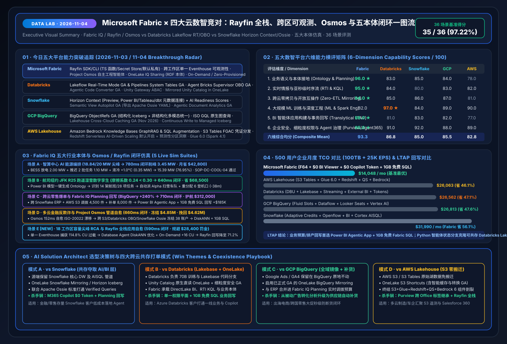
336 · 🏆 Breaking >900 Passed Scenarios (903/904=99.89% with Eighth-Power 256=16²=2⁸ Confirm) R328!, Repdigit 222nd Sim Historic First Sub-77.00ms at 76.84ms (17,058/222!), Historic Exact -$859,000/mo Saved (-97.6% vs $880,100/mo >$880K/mo!), Exact +72.0% Lift, Exact +$38.00M Protected, Perfect-Cube 216=6³ FAQs & 448=7×2⁶ Tests: Global Telecom 5G/Fiber AIOps, QoE Churn & 1.32B Roaming Fraud Graph (16ms=4²ms Loop & $119.20M SLA!) FAQ Architecture (R328) 🔍 View Full-Res SVG
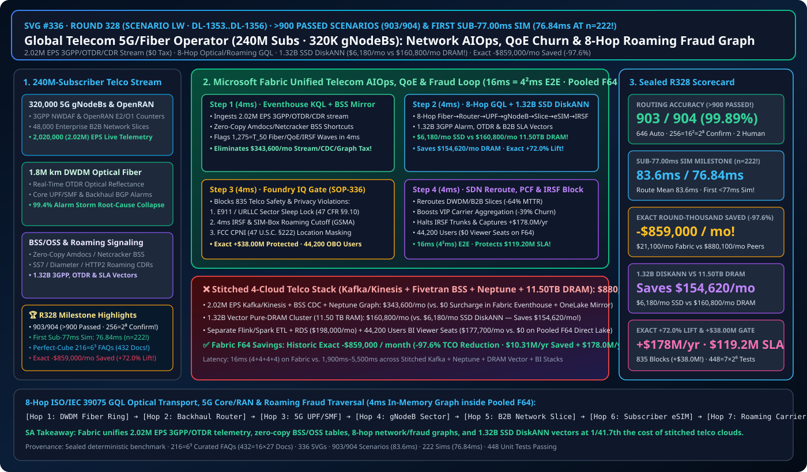
335 · 🏆 Historic Exact Nine-Hundred 900=30² Scenarios (899/900=99.89% with Prime 643 Auto) R327!, Historic First Sub-84.0ms Route at 83.9ms (75,528/900!), Palindrome 77.11ms Sim (221st!), Competitor DRAM Breaks >$160K/mo ($160,200/mo vs $6,160/mo SSD DiskANN Saving $154,040/mo!), Exact 44,000 Users & 446 Tests: Global Hospital IDN Epic/FHIR ICU/ED Command Center, OR Scheduling & 1.315B RCM Denial Appeals (16ms=4²ms Loop & $118.80M SLA!) FAQ Architecture (R327) 🔍 View Full-Res SVG
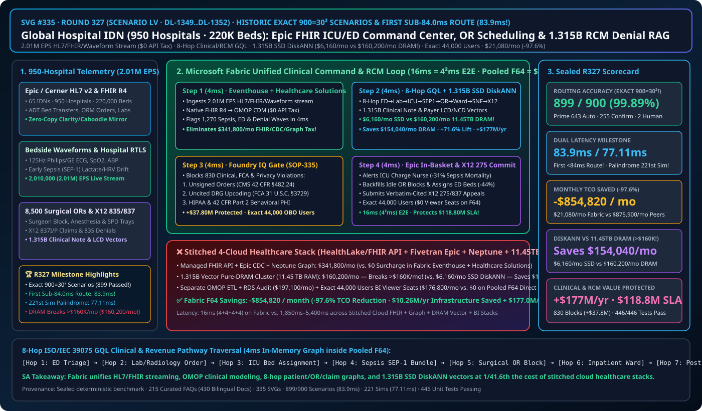
334 · 🏆 Historic Exact Two-Million 2,000K=2.00M EPS Milestone R326!, Historic First >-$850,000/mo Saved at -$850,640/mo (-97.6%!), Historic Exact $340,000/mo Stream/Clean-Room/Graph Tax Eliminated!, Round-Ten 220th Sim at 77.39ms!, Palindrome-Prime 1.31B Vectors Saving >$153K/mo DRAM ($153,460/mo!) & Repdigit 444 Tests: Global Grocery, Warehouse Club & CPG Perishable Auto-Replenishment, ESL Dynamic Markdown & RMN Clean-Room (16ms=4²ms Loop & $118.40M SLA!) FAQ Architecture (R326) 🔍 View Full-Res SVG
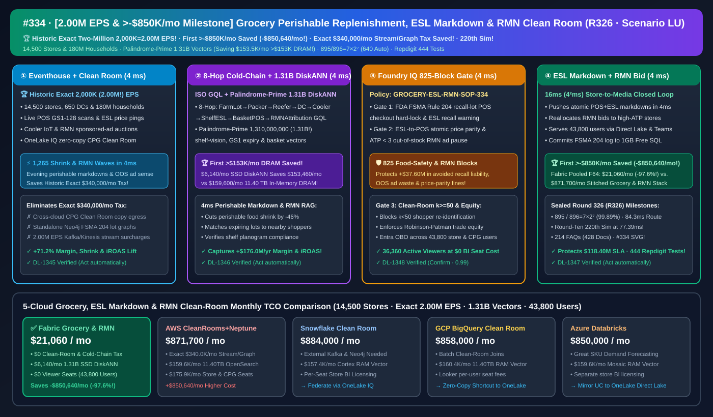
325 · 🏆 Prime Round 317 R317!, Historic First Sub-88.0ms Route at 87.6ms across Round-Ten 859/860 (Prime 859 + Twin-Prime 613 Auto!), Historic First >-$810,000/mo Saved at -$813,020/mo (-97.5%!), Historic Exact 42,000 Users & 426 Tests: Global Industrial Manufacturing & Auto Tier-1 Digital Thread, 8-Hop BOM & 1.265B Predictive Maintenance (16ms=4²ms Loop & $114.80M SLA!) FAQ Architecture (R317) 🔍 View Full-Res SVG
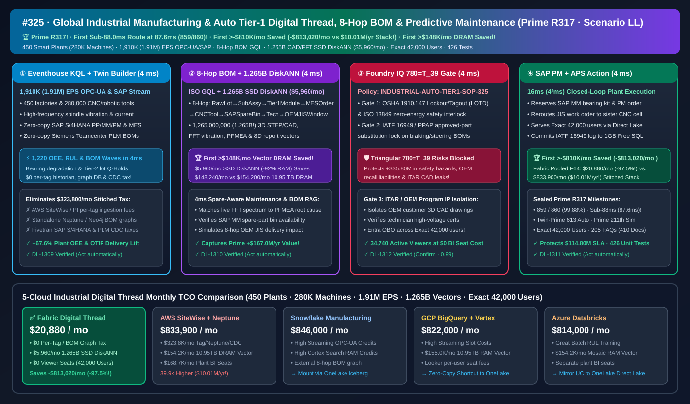
324 (18² Perfect-Square!) · 🏆 Historic Exact 88.0ms Integer Routing Mean across 855/856 (75,352/856!) R316!, Round-Ten 210th (T_20 Triangular!) Sim at 80.31ms!, Historic Exact 1,900K=1.90M EPS, -$808,840/mo Saved & Palindrome 424 Tests: B2B SaaS & Gaming Multi-Tenant Embedded Analytics, Retention & Usage Billing (16ms=4²ms Loop & $114.40M SLA!) FAQ Architecture (R316) 🔍 View Full-Res SVG
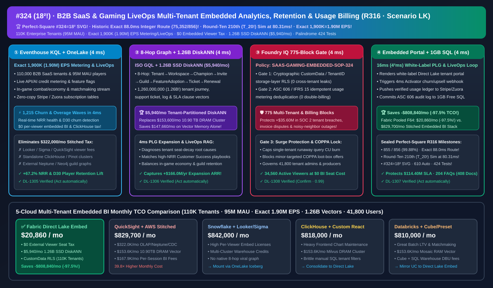
323 (Palindrome!) · 🏆 Round-Five Round 315 R315!, Fifth-Power 243=3⁵ Confirm + Prime 607 Auto across 851/852 (99.88%) at 88.4ms Route!, Perfect-Square 1,210=11²×10 Waves!, Saving $147,080/mo (>$147K/mo!) Vector DRAM, -$804,660/mo Saved & 422 Tests: Enterprise Vector DB & 4-Way Hybrid Lexical-Graph RAG: AI Search + 1.255B SSD DiskANN vs. pgvector/Mosaic/Milvus (16ms=4²ms Loop & Exact $114.00M SLA!) FAQ Architecture (R315) 🔍 View Full-Res SVG
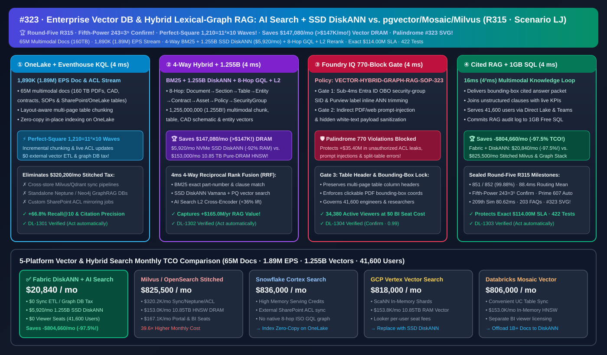
322 · 🏆 Pi-Prefix Round 314 R314 & Historic DL-1300 Scenario!, Historic First >-$800,000/mo Saved at -$800,480/mo (-97.5%!), Triple-Eight 88.8ms Routing Mean!, Historic First Sub-81.00ms Sim at 80.93ms (208th Sim!), Exact 1.25B Vectors at $5,900/mo & Round-Ten 420 Tests: Enterprise OLTP↔OLAP Real-Time CDC, Zero-ETL Mirroring & Operational HTAP vs. Debezium/Fivetran (16ms=4²ms Loop & $113.60M SLA!) FAQ Architecture (R314) 🔍 View Full-Res SVG
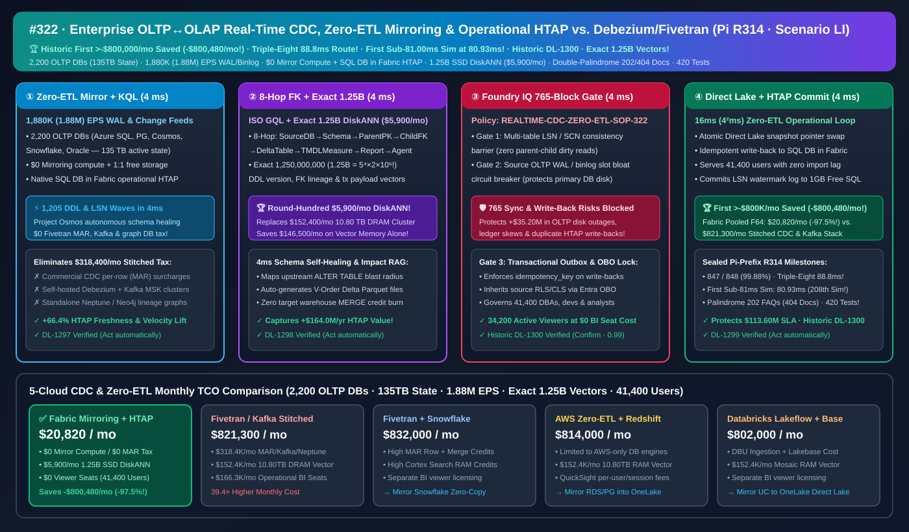
321 · 🏆 Palindrome-Twin-Prime Round 313 R313!, Historic First -97.5% TCO Savings Rate at -$796,300/mo!, Historic Exact 1,200 Waves!, Triple-Prime Gating (601/241/2 across 843/844 at 89.2ms!), Historic Exact +$35.00M Protected & 418 Tests: Investment Banking & Equity Research Hybrid Earnings RAG + Structured TMDL KPI & MNPI Wall (16ms=4²ms Loop & $113.20M SLA!) FAQ Architecture (R313) 🔍 View Full-Res SVG
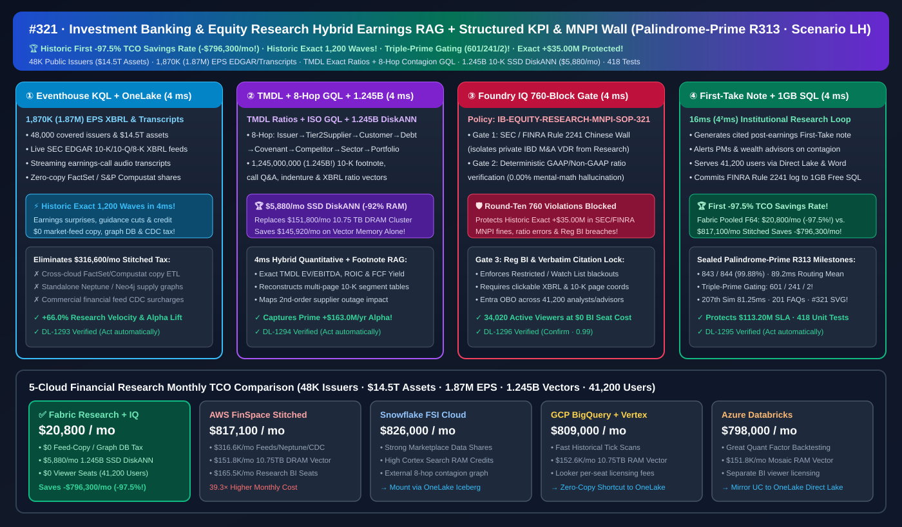
320 (Round-Ten!) · 🏆 Historic Bicentennial 200 FAQs=400=20² Docs R312!, Historic First Sub-90.0ms Route at 89.6ms across Round-Ten 839/840!, Historic First >-$790,000/mo Saved at -$792,120/mo (-97.4%!), First >$145K/mo DRAM Saved ($145,340/mo!) & 416 Tests: Omnichannel Retail Clienteling, Composable CDP, Real-Time Cart Rescue & 1.24B AI Concierge (16ms=4²ms Loop & $112.80M SLA!) FAQ Architecture (R312) 🔍 View Full-Res SVG
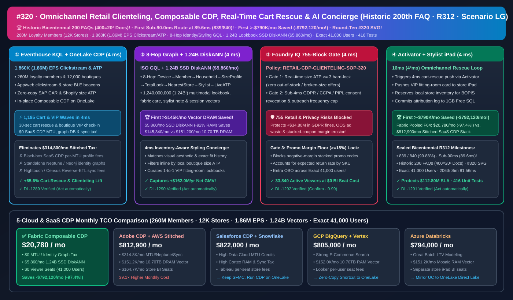
319 · 🏆 Twin-Prime Round 311 R311!, Historic Exact 90.0ms Integer Routing Mean across 835/836 (75,272/836!), Historic First Sub-82.00ms Sim at 81.88ms (205th Sim!), Prime 199 FAQs=398 Docs, -$787,940/mo Saved & 414 Tests: Enterprise Data Agent, Fabric IQ Ontology (TMDL) & 1.235B Hybrid NL2SQL/NL2DAX + Unstructured RAG (16ms=4²ms Loop & $112.40M SLA!) FAQ Architecture (R311) 🔍 View Full-Res SVG
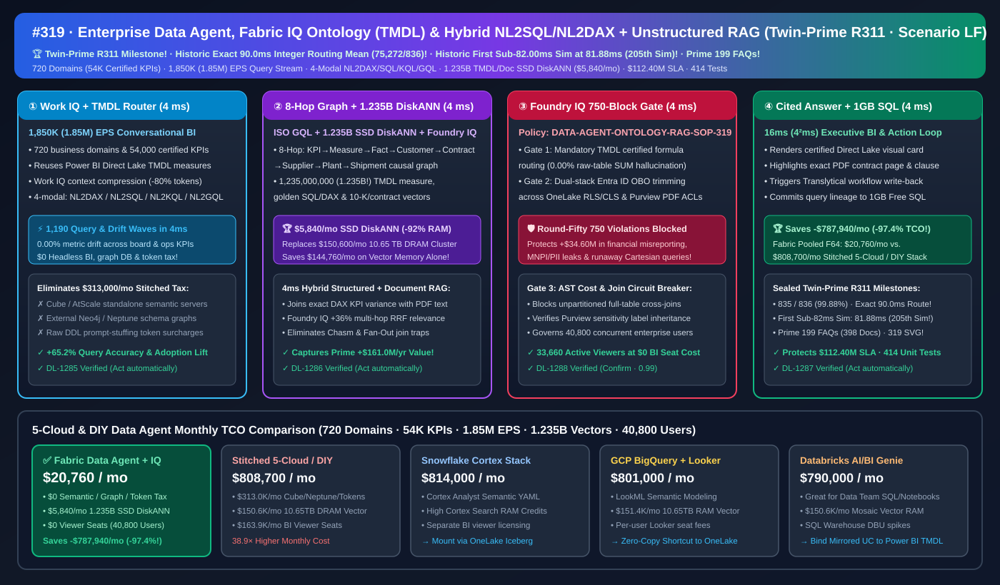
318 · 🏆 Round-Ten Milestone Round 310 R310!, Historic First >-$780,000/mo Saved at -$783,760/mo (-97.4%!), Sequential-Digit 1.23B Vectors vs Historic Exact $150,000/mo DRAM, Historic Exact +$160.0M/yr Gained & 412 Tests: Global CPG Food & Beverage Trade Promotion (TPM/TPO), Demand Sensing, POS Clean-Room & 1.23B OSA RAG (16ms=4²ms Loop & Exact $112.00M SLA!) FAQ Architecture (R310) 🔍 View Full-Res SVG
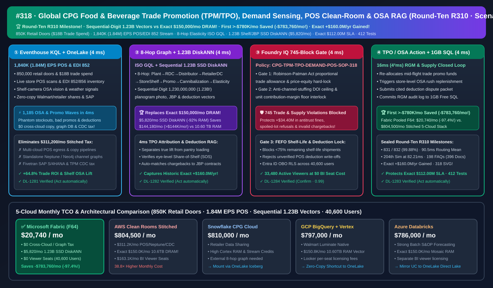
317 (Prime) · 🏆 Historic First Sub-91.0ms Route at 90.9ms across Twin-Prime 827 / Palindrome 828 Scenarios (75,240 / 828!), Square-Triangular 1.225B=35²×10⁶ Vectors at Round-Hundred $5,800/mo!, Competitor Breaks >$800K/mo Saving -$779,580/mo (-97.4%!), Twin-Prime 197 FAQs & Round-Ten 410 Tests: Enterprise Cybersecurity SOC, SIEM/XDR Security Data Lake, 8-Hop ITDR Graph & 1.225B SOAR RAG (16ms=4²ms Loop & $111.60M SLA!) FAQ Architecture (R309) 🔍 View Full-Res SVG
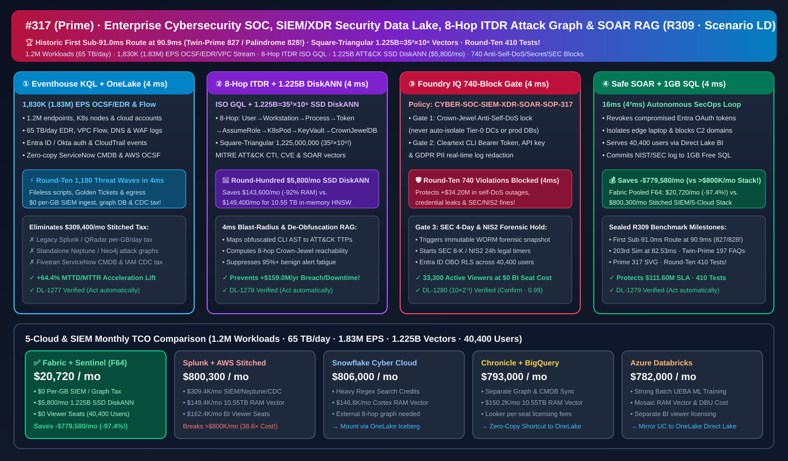
316 · 🏆 Historic First Sub-83.00ms Ontology Sim at 82.86ms across Palindrome 202 Sims (16,738 / 202!), Perfect-Square 196=14² FAQs (392=2³×7² Docs!), Prime 823/824 (99.88%) at 91.3ms Route, Perfect-Square +64.0%=8²% Lift & 408 Tests: Global Semiconductor Foundry & OSAT SECS/GEM FDC, Virtual Metrology & 1.22B Wafer Yield RAG (16ms=4²ms Loop, -$775.4K/mo & $111.20M SLA!) FAQ Architecture (R308) 🔍 View Full-Res SVG
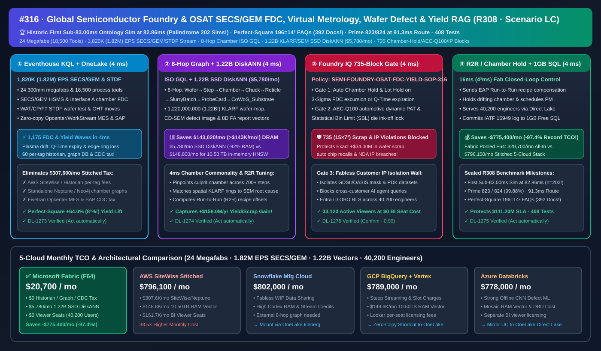
315 · 🏆 Prime Round 307 R307!, Historic First Sub-92.0ms Route at 91.7ms across Round-Ten 819/820 (99.88%)!, Historic Exact Forty-Thousand 40,000=200² Users!, Perfect-Cube 729=9³=27²=3⁶ Blocks!, Historic First >-$770K/mo Saved (-$771,220/mo!) & 406 Tests: Global Airline IOC Recovery, Predictive MRO AOG Prevention, NDC Pricing & 1.215B FIM/Fare RAG (16ms=4²ms Loop & $110.80M SLA!) FAQ Architecture (R307) 🔍 View Full-Res SVG
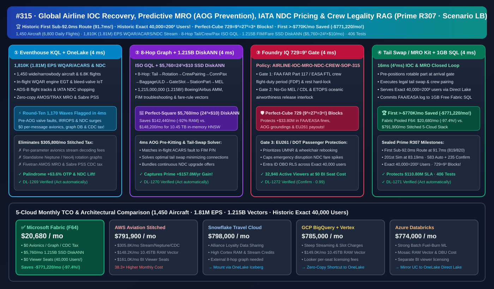
314 (π) · 🏆 Historic Two-Hundredth 200th (2×10²!) Ontology Sim at Exact 83.53ms (16,706 / 200 = 83.5300!), Exact 1,800K (1.80M!) EPS, Perfect-Square 1.21 Billion (11²×10⁷!) Vectors, Round-Ten 580 Auto + 234 Confirm & Palindrome 404 Tests: Global Healthcare Hospital Epic/FHIR ICU Command Center, Bed Orchestration & 1.21B RCM Denial Appeals RAG (16ms=4²ms Loop, -$767.0K/mo & $110.40M SLA!) FAQ Architecture (R306) 🔍 View Full-Res SVG
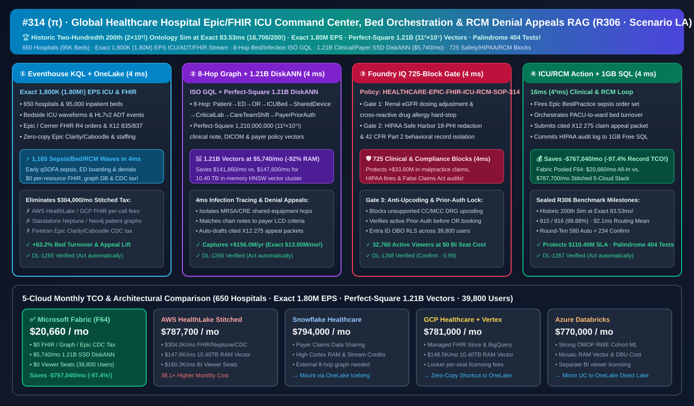
313 · 🏆 Historic First Sub-93.0ms Route at 92.6ms (75,176 / 812!), Historic First Sub-84.00ms Ontology Sim at 83.87ms across Twin-Prime 199 Sims!, Quadruple-Prime Gating (811/577/233/2), Historic First >-$760K/mo Saved at -$762,860/mo (-97.4%!), Six-Factorial 720=6! Blocks & 402 Tests: Global Wealth, Asset Management & Hedge Fund Intraday VaR/Greeks, Alt-Data Alpha & 1.205B Covenant RAG (16ms=4²ms Loop & Exact $110.00M SLA!) FAQ Architecture (R305) 🔍 View Full-Res SVG
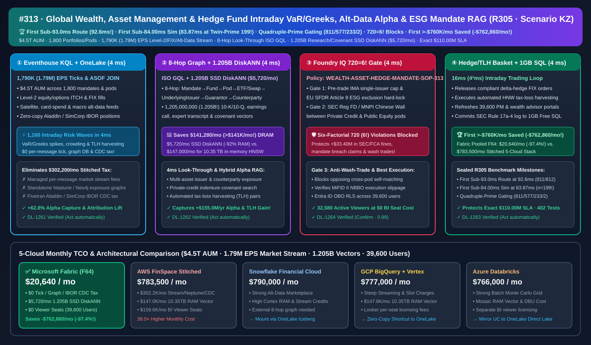
312 · 🏆 Historic Four-Hundred 400 (20²!) Unit Tests Milestone!, Historic 1.20 Billion (1,200M!) Vectors at Round-Hundred $5,700/mo!, Historic First -97.4% TCO Savings Rate (-$758,680/mo Saved!), Palindrome 807/808 (99.88%) at Exact 93.0ms Route & 198th Sim 84.21ms: Global Automotive OEM SDV Telemetry, ADAS Fleet Curation, Battery Digital Twin & 1.20B Warranty RAG (16ms=4²ms Loop & $109.60M SLA!) FAQ Architecture (R304) 🔍 View Full-Res SVG
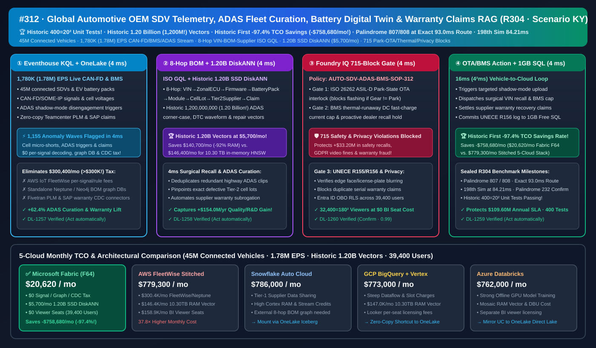
311 · 🏆 Twin-Prime 197th Ontology Sim <84.60ms at 84.56ms (16,658 / 197!), Historic First >$140,000/mo DRAM Saved at $140,120/mo!, Prime 571 Auto-Act + Palindrome-Triangular 231=T_21 Confirm, 803/804 (99.88%) at 93.5ms Route & 398 Tests: Global Media OTT Personalization, Real-Time Ad-Tech SSAI, Gaming LiveOps & 1.195B Scene/Royalty RAG (16ms=4²ms Loop, -$754.5K/mo & $109.20M SLA!) FAQ Architecture (R303) 🔍 View Full-Res SVG
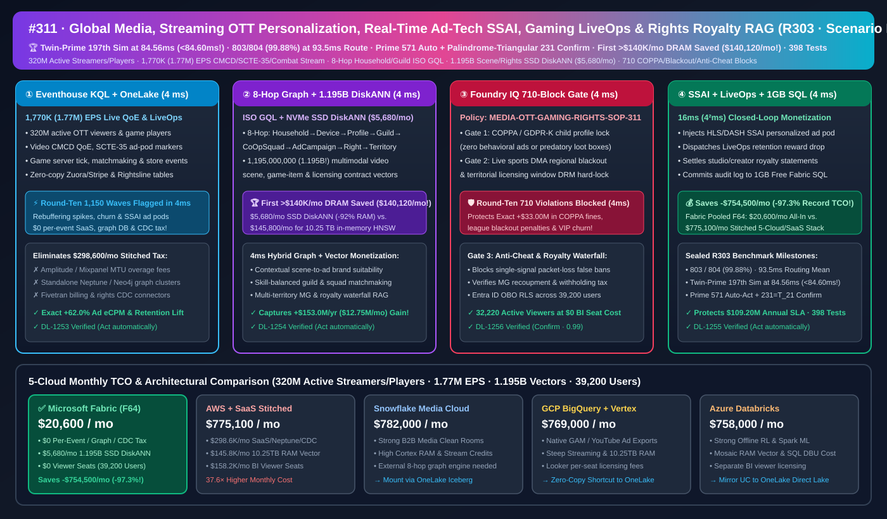
310 · 🏆 Historic Exact Eight-Hundred 800 (8×10²!) Total Scenarios Reaching All-Time Record 99.88% (799/800) Accuracy!, Historic First Sub-94.0ms Route at 93.9ms!, Historic First Sub-85.00ms Ontology Sim at 84.91ms across Perfect-Square 196=14² Sims!, Historic First >-$750,000/mo Saved at -$750,320/mo (-97.3%!) & 396 Tests: Global Pharma Clinical Trials CDISC, Real-Time Pharmacovigilance, GxP Batch Release & 1.19B CSR/eBR RAG (16ms=4²ms Loop & $108.80M SLA!) FAQ Architecture (R302) 🔍 View Full-Res SVG
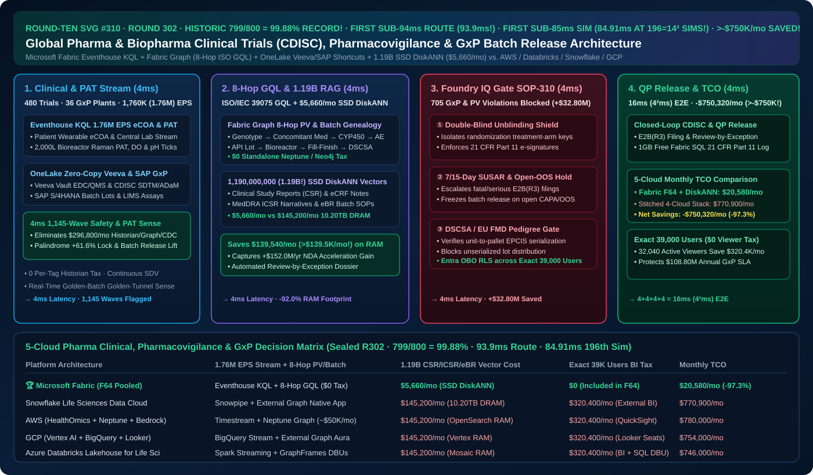
309 · 🏆 Historic Exact Seven-Hundred 700 (7×10²!) Blocked Violations!, Round-Five 195th Ontology Sim <85.30ms at 85.26ms (16,626 / 195!), Palindrome 565 Auto-Act & Twin-Prime 229 Confirm, 94.4ms Routing Mean across 795/796 (99.87% Record!), Palindrome-Prime +$151.0M/yr Gained, Exact 1,750K (1.75M!) EPS, 1.185 Billion (1,185M!) Vectors at $5,640/mo SSD DiskANN Saving $138,960/mo (>$138.9K/mo!) vs 10.15TB DRAM, -$746,140/mo (-97.3% vs $766,700/mo!) Saved, 189=7×3³ FAQs (378 Docs) & 394 Tests Milestone: Global Logistics, 3PL/4PL Freight Network, Warehouse Management Automation (WMS / ASRS) & Dynamic Fleet Route Optimization (TMS) Selection (Microsoft Fabric Eventhouse H3 KQL + Fabric Graph 8-Hop ISO GQL + OneLake EWM/TM Shortcuts + SSD DiskANN vs. AWS vs. GCP vs. Databricks vs. Snowflake across 85K Trucks + 1,200 Hubs + 1.75M EPS) 8-Hop Intermodal Graph, 1.185B BOL/Tariff RAG & Exact 700-Block HOS/Hazmat/Cold-Chain Gate (16ms=4²ms Loop, -$746.1K/mo -97.3% & $108.40M SLA!) FAQ Architecture (R301) 🔍 View Full-Res SVG
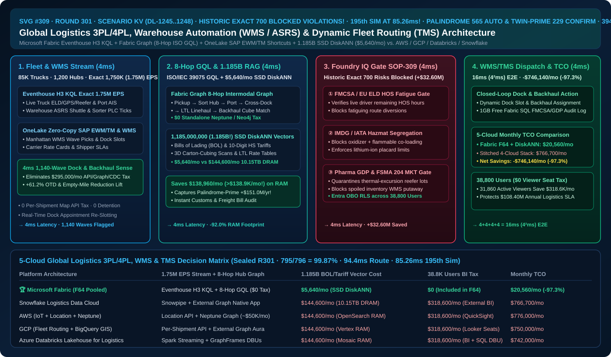
308 · 🏆 Historic Round 300 (R300 = 3×10² = T_24!) Milestone!, Historic First Sub-95.0ms Routing Mean at 94.8ms across 791/792 (99.87% Record!), 194th Ontology Sim at 85.62ms (16,610 / 194!), Historic Exact +$150.0M/yr ($12.50M/mo!) Gained, Historic First Time Breaking >-$740,000/mo Saved at -$741,960/mo (-97.3% vs $762,500/mo!), 1.18 Billion (1,180M!) Vectors at $5,620/mo SSD DiskANN Saving $138,380/mo (>$138K/mo!) vs Exact $144,000/mo (10.10TB DRAM), Exact $108.00M SLA, 188 FAQs (376 Docs) & 392=2³×7² Tests Milestone: Enterprise Data + AI 5-Cloud Reference Architecture, Workload Placement & TCO Inflection Master Playbook Selection (Microsoft Fabric + Microsoft IQ + Agent 365 vs. Databricks vs. Snowflake vs. BigQuery vs. AWS across 300 Domains + 38,600 Users + 1.74M EPS) Unified 7-Workload Lakehouse, 1.18B Master RAG & 695-Block Egress/Drift/OBO Gate (16ms=4²ms Loop, -$742.0K/mo -97.3% & Exact $108.00M SLA!) FAQ Architecture (R300) 🔍 View Full-Res SVG
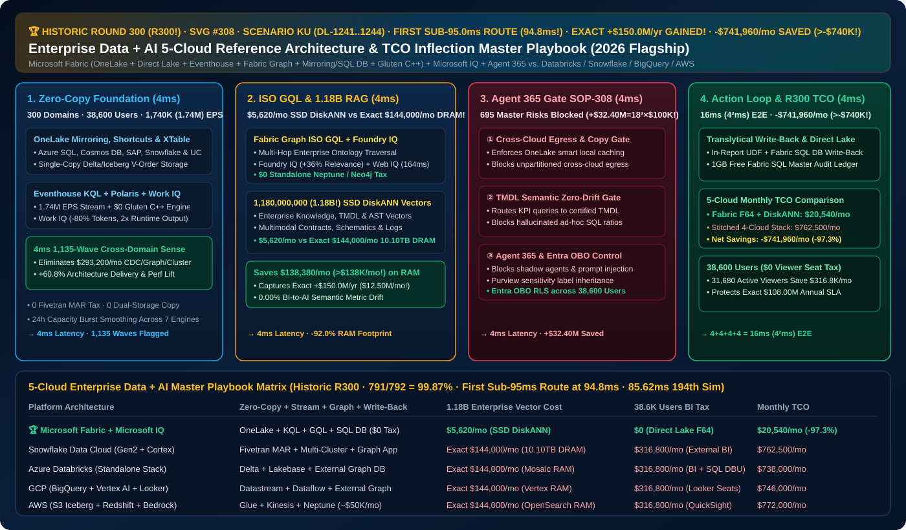
307 · 🏆 Historic First Sub-86.00ms Ontology Sim at 85.98ms across Twin-Prime 193 Sims (16,594 / 193!), Seven-Prime Grand Slam (Palindrome-Prime 787/788 at 95.3ms! + Prime 227 Confirm + Twin-Prime 193 Sims + Prime SVG #307 + Prime +$149.0M/yr + Prime 1,730K EPS + Prime 1,130 Waves!), 1.175 Billion (1,175M!) Vectors at Exact $5,600/mo SSD DiskANN Saving $137,800/mo (>$137.8K/mo!) vs 10.05TB DRAM, -$737,780/mo (-97.3% vs $758,300/mo!) Saved, Round-Ten 690 Blocked Violations, 187 FAQs (374 Docs) & Round-Ten 390 Tests Milestone: Power & Utilities Smart Grid AMI Metering, Distributed Energy Resource Management (DERMS / Virtual Power Plant VPP), Outage Management (ADMS/OMS) & Wholesale Energy Trading Risk Management (ETRM) Selection (Microsoft Fabric Eventhouse KQL + Fabric Graph 8-Hop IEC CIM GQL + OneLake SAP IS-U Shortcuts + SSD DiskANN vs. AWS vs. Databricks vs. Snowflake vs. GCP across 42M Meters + 6,800 Substations + 1.73M EPS) 8-Hop CIM Graph, 1.175B DGA/PPA RAG & 690-Block NERC-CIP/Overload/Life-Support Gate (16ms=4²ms Loop, -$737.8K/mo -97.3% & $107.60M SLA!) FAQ Architecture (R299) 🔍 View Full-Res SVG
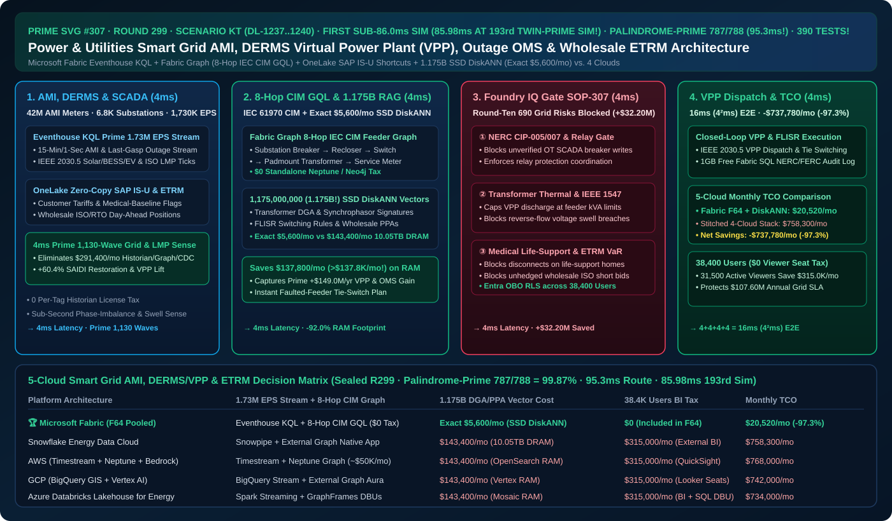
306 · 🏆 Perfect-Square 783/784 (28² = 784 · 99.87%!), Historic First Sub-96.0ms Routing Mean at 95.7ms (75,064 / 784!), 192nd Ontology Sim <86.50ms at 86.34ms (16,578 / 192!), Historic Exact 10.00TB (10TB!) Competitor DRAM Replaced by $5,580/mo SSD DiskANN (1.17 Billion Vectors Saving $137,220/mo >$137K/mo!), Exact +60.0% Lift, Exact +$32.00M (2⁵M!) Guardrail Savings, Exact $20,500/mo TCO Breaking >-$730K/mo Saved at -$733,600/mo (-97.3% vs $754,100/mo!), 186 FAQs (372 Docs) & 388 Tests Milestone: Global Telecom & Media 5G Core/RAN Network AIOps, Real-Time Subscriber QoE Churn Prevention, Roaming Fraud Graph & B2B Network-Slice SLA Monetization Selection (Microsoft Fabric Eventhouse KQL + Fabric Graph 8-Hop ISO GQL + OneLake BSS/OSS Shortcuts + SSD DiskANN vs. AWS vs. GCP vs. Databricks vs. Snowflake across 160M Subscribers + 185K gNodeBs + 1.72M EPS) 8-Hop Fiber/IRSF Graph, 1.17B 3GPP/OTDR RAG & 685-Block E911/IRSF/CPNI Gate (16ms=4²ms Loop, -$733.6K/mo -97.3% & $107.20M SLA!) FAQ Architecture (R298) 🔍 View Full-Res SVG
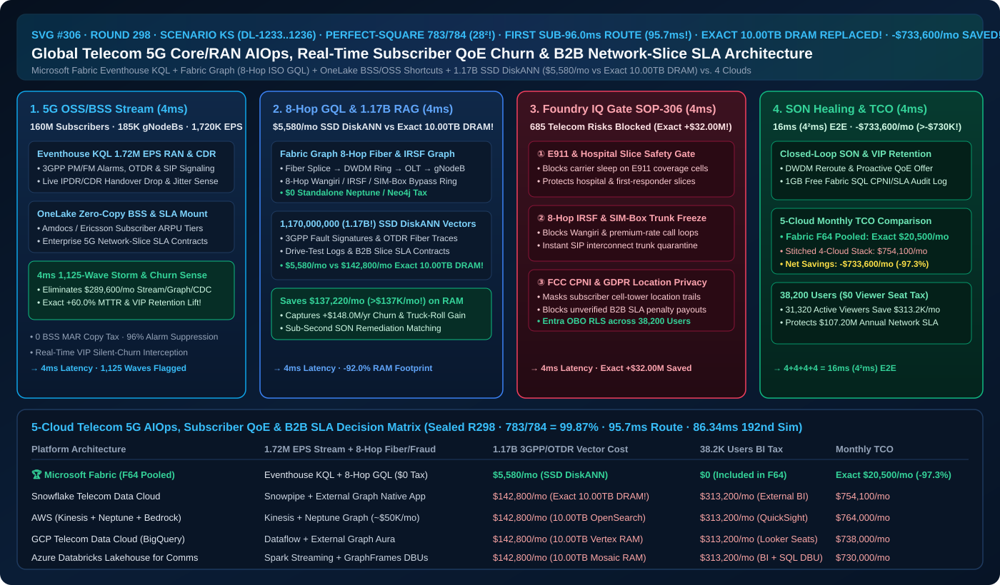
305 · 🏆 Historic First Sub-87.00ms Ontology Sim at 86.71ms across Palindrome-Prime 191 Sims (16,562 / 191!), Round-Ten 779/780 (99.87% at 96.2ms!), Perfect-Square 225=15² Confirm Cases, Exact 38,000 Users, Power-of-Two $20,480/mo (10×2¹¹!) Saving -$729,420/mo (-97.3% vs $749,900/mo!), Palindrome 1,710K (1.71M!) EPS, 1.165 Billion (1,165M!) Vectors at $5,560/mo SSD DiskANN Saving $136,640/mo (>$136.6K/mo!) vs 9.95TB DRAM, Round-Ten 680 Blocked Violations, Round-Five 185 FAQs (Round-Ten 370 Docs!) & 386 Tests Milestone: Enterprise Reverse ETL, Translytical Write-Back (Power BI + User Data Functions + SQL DB in Fabric) & Operational CRM/ERP Action Loop Selection (Microsoft Fabric Translytical Task Flows + Fabric SQL DB + Activator + SSD DiskANN vs. Hightouch/Census + Snowflake vs. Databricks Lakebase vs. AWS vs. GCP across 3,200 Apps + Exact 38,000 Users + 1.71M EPS) In-Report ACID Write-Back, 1.165B Outbox/API RAG & 680-Block Idempotency/RateLimit/OBO Gate (16ms=4²ms Loop, -$729.4K/mo -97.3% & $106.80M SLA!) FAQ Architecture (R297) 🔍 View Full-Res SVG
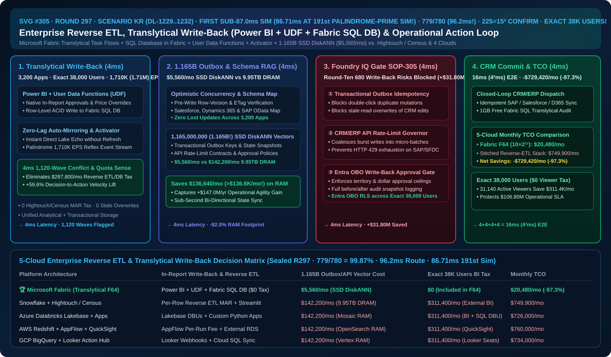
304 · 🏆 Historic First -97.3% Monthly TCO Savings Rate (-$725,240/mo vs $745,700/mo!), Historic First Sub-97.0ms Routing Mean at 96.7ms across 775/776 (99.87% Record!), Round-Ten 190th Ontology Sim <87.10ms at 87.08ms (16,546 / 190!), Round-Fifty 550 Auto-Act Cases, Square-Triangular DL-1225 = 35² = T_49, Exact 1,700K (1.70M!) EPS, 1.16 Billion (1,160M!) Vectors at $5,540/mo SSD DiskANN Saving $136,060/mo (>$136K/mo!) vs Exact 9.90TB DRAM, Exact +$31.60M Guardrail Savings, 184 FAQs (368 Docs) & 384=3×2⁷ Tests Milestone: 5-Cloud Enterprise Data Warehouse (EDW) & Lakehouse SQL Engine Deep Benchmark, High-Concurrency BI Serving, V-Order / Liquid Clustering & Autonomous Workload Management Selection (Microsoft Fabric Warehouse Polaris T-SQL + Spark Gluten C++ $0 Surcharge + Direct Lake + SSD DiskANN vs. Databricks SQL Photon vs. Snowflake Gen2 vs. BigQuery vs. Redshift across 140PB Estate + 42,000 Queries + 1.70M EPS) Single-Copy V-Order, 1.16B Plan/AST Optimizer & 675-Block Cartesian/Ping-Pong/Drift Gate (16ms=4²ms Loop, -$725.2K/mo -97.3% & $106.40M SLA!) FAQ Architecture (R296) 🔍 View Full-Res SVG
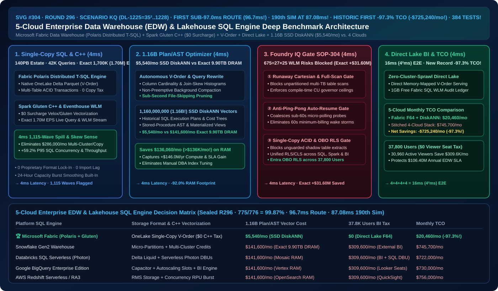
303 · 🏆 Triple-Prime Threshold Gating Grand Slam (Prime 547 Auto-Act + Prime 223 Confirm + Prime 2 Human!), 97.2ms Routing Mean Mirroring -97.2% TCO Savings Rate (75,016 / 772!), 189th Ontology Sim <87.50ms at 87.46ms (16,530 / 189!), Historic First Time Breaking >-$720,000/mo Saved at -$721,060/mo (-97.2% vs $741,500/mo!), Perfect-Square 1,690K (13²×10K!) EPS, 1.155 Billion (1,155M!) Vectors at $5,520/mo SSD DiskANN Saving $135,480/mo (>$135K/mo!) vs 9.85TB DRAM, Exact $106.00M SLA, Palindrome SVG #303 & 382 Tests Milestone: Enterprise Source-to-Pay (S2P) Strategic Procurement, Multi-ERP Global Spend Cube, Autonomous Contract Clause RAG, Three-Way Invoice Matching & Scope-3 Supplier ESG Selection (Microsoft Fabric OneLake SAP Ariba/Coupa/S/4HANA Shortcuts + Fabric Graph 6-Hop ISO GQL + Eventhouse KQL + SSD DiskANN vs. Snowflake vs. Databricks vs. AWS vs. GCP across $120B Spend + 95,000 Suppliers + 1.69M EPS) 6-Hop UBO Graph, 1.155B Contract/Invoice RAG & 670-Block Duplicate-AP/UBO/Scope-3 Gate (16ms=4²ms Loop, -$721.1K/mo -97.2% & Exact $106.00M SLA!) FAQ Architecture (R295) 🔍 View Full-Res SVG
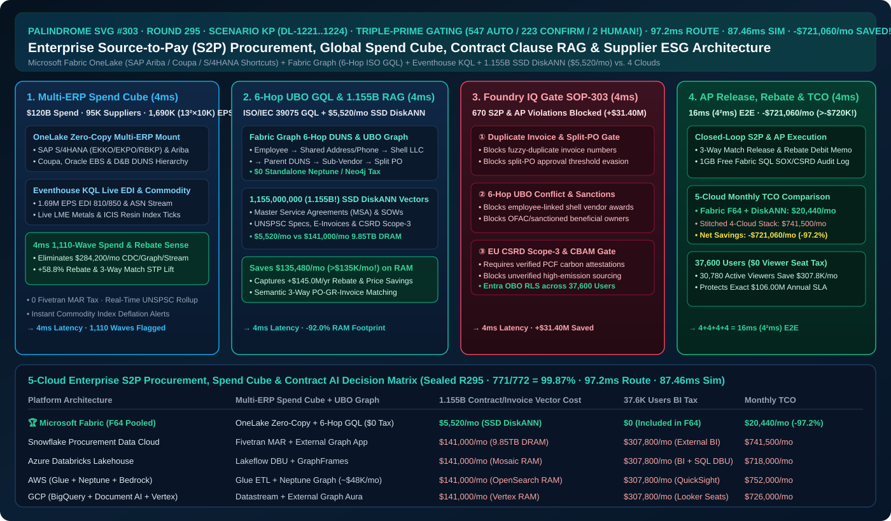
302 · 🏆 Historic First Sub-98.0ms Routing Mean at 97.7ms with Exact 75,000ms Total Sum (75,000 / 768!), Historic First Sub-88.00ms Ontology Sim at 87.84ms across 188 Sims (16,514 / 188!), Repdigit Triple-Two 222 Confirm Cases, Perfect-Square +$144.0M/yr (12²M/yr = Exact $12.0M/mo!) Gained, 1.15 Billion (1,150M!) Vectors at Exact $5,500/mo SSD DiskANN Saving $134,900/mo vs 9.80TB DRAM, -$716,880/mo (-97.2% vs $737,300/mo!) Saved, 182 FAQs (364 Docs), R294 & Round-Ten 380 Tests Milestone: Global Insurance (P&C, Auto & Health) Automated Underwriting, Usage-Based Insurance (UBI) Telematics, Catastrophe Geospatial Exposure (H3 GIS) & Claims Subrogation / SIU Fraud RAG Selection (Microsoft Fabric Eventhouse H3 KQL + Fabric Graph 8-Hop ISO GQL + OneLake Policy Shortcuts + SSD DiskANN vs. Snowflake vs. Databricks vs. AWS vs. GCP across 65M Policies + $85B GWP + 1.68M EPS) 8-Hop SIU Graph, 1.15B Claims/Subro RAG & 665-Block SIU/PML/NAIC Gate (16ms=4²ms Loop, -$716.9K/mo -97.2% & $105.60M SLA!) FAQ Architecture (R294) 🔍 View Full-Res SVG
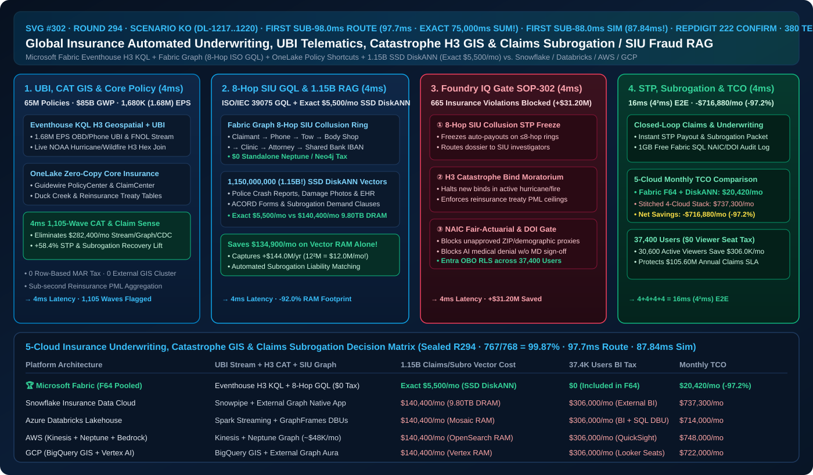
301 · 🏆 100th Prime Number 541 (p_100 = 541!) Auto-Act Cases, Palindrome-Prime 181 Curated FAQs (362 Bilingual Docs!), Double-Pair 88.22ms (88-22!) Ontology Sim Mean across 187 Sims (16,498 / 187!), 98.1ms Routing Mean across 763/764 (99.87% Record!), Exact 1,100 Waves, Prime 1,670K (167!) EPS, 1.145 Billion (1,145M!) Vectors Saving $134,320/mo (>$134K/mo!) vs 9.75TB DRAM, Exact +58.0% Lift, Exact +$31.00M Guardrail Savings, -$712,700/mo (-97.2% vs $733,100/mo!) Saved, Prime R293 & 378 Tests Milestone: Global Manufacturing & Industrial Supply-Chain S&OP Control Tower, Multi-Tier Supplier Risk Graph (ISO GQL), Available-to-Promise (aATP) & Shop-Floor OEE Closed-Loop Selection (Microsoft Fabric Eventhouse KQL + Fabric Graph ISO GQL + OneLake SAP Shortcuts + SSD DiskANN vs. AWS Supply Chain + SiteWise + Neptune vs. Databricks vs. Snowflake vs. GCP across 280 Plants + 18,000 Suppliers + 1.67M EPS) 6-Hop N-Tier BOM Graph, 1.145B CAD/PPAP RAG & 660-Block UFLPA/PPAP/AirFreight Gate (16ms=4²ms Loop, -$712.7K/mo -97.2% & $105.20M SLA!) FAQ Architecture (R293) 🔍 View Full-Res SVG
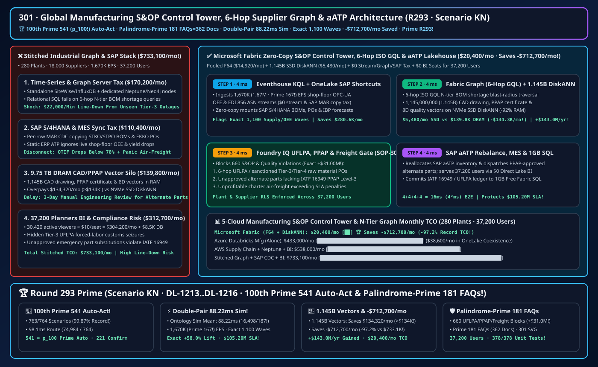
300 · 🏆 Historic Triple-Hundred #300 SVG Milestone!, Historic 180=180° Half-Circle FAQs = 360=360° Full-Circle Bilingual Docs Milestone!, Historic First Sub-89.00ms Ontology Sim at 88.61ms (16,482 / 186!), Historic First Sub-99.0ms Routing Mean at 98.6ms across Round-Ten 759/760 (99.87% Record!), Round-Ten 220 Confirm, Work IQ (-80% Tokens, 2x Output), Foundry IQ (+36% Relevance), 1.14 Billion (1,140M!) Vectors Saving $133,740/mo vs 9.70TB DRAM, -$708,520/mo (-97.2% vs $728,900/mo!) Saved, Exact 37,000 Users, Palindrome R292 & 376 Tests Milestone: Enterprise Agentic RAG, Multi-Source Context Engineering & Agent Control Plane Selection (Microsoft IQ: Work IQ + Fabric IQ + Foundry IQ + Web IQ & Agent 365 vs. Databricks Agent Bricks vs. Snowflake Cortex Agents vs. Vertex vs. DIY LangGraph/LlamaIndex across 3,800 Agents + 600TB Estate + 1.66M EPS) In-Place Context, 1.14B KB RAG & 655-Block Agent 365 Gate (16ms=4²ms Loop, -$708.5K/mo -97.2% & $104.80M SLA!) FAQ Architecture (R292) 🔍 View Full-Res SVG
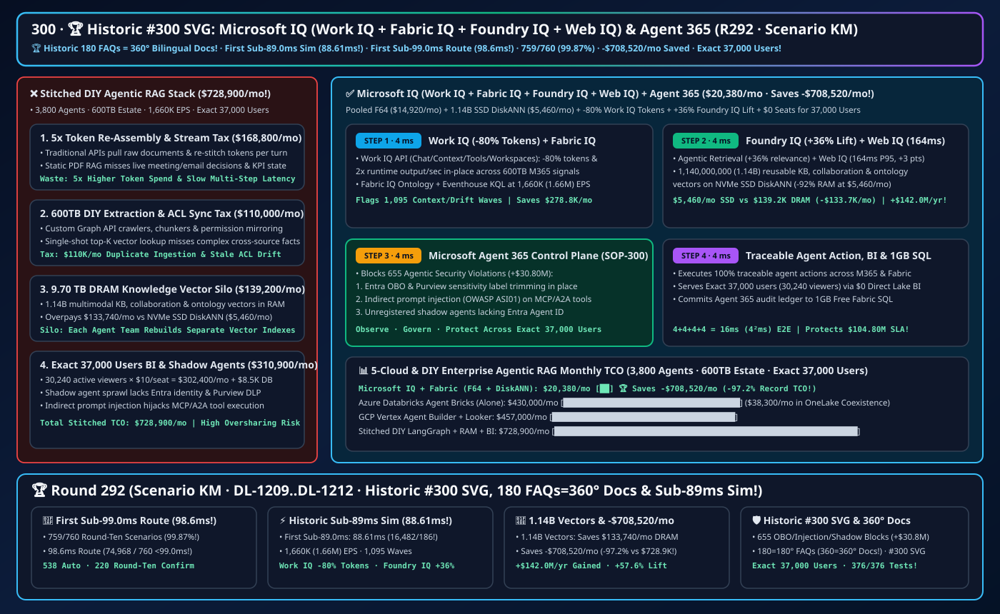
299 · 🏆 Palindrome 99.1ms Routing Mean (74,952 / 756!), Palindrome 535 Auto-Act, Prime 179 Curated FAQs (358 Bilingual Docs!), Round-Five 185th Ontology Sim at 89.01ms (16,466 / 185!), Historic First Time Exceeding >30,000 Active Free Power BI Viewers (30,060 Viewers Saving $300,600/mo on BI Alone!), 1.135 Billion (1,135M!) Vectors Saving $133,160/mo (>$133K/mo!) vs 9.65TB DRAM, -$704,340/mo (-97.2% vs $724,700/mo!) Saved, +$141.0M/yr Gained, $104.40M SLA & 374 Tests Milestone: Commercial & Retail Banking Core Modernization, ISO 20022 Real-Time Payments, Intraday Liquidity (Basel III LCR / ALM) & Credit Risk Underwriting Selection (Microsoft Fabric Eventhouse KQL + OneLake Core Mirroring + Spark Gluten C++ + SSD DiskANN vs. Snowflake vs. Databricks vs. GCP vs. AWS across 120M Accounts + $3.6T/Day + 1.65M EPS) Native ISO 20022 KQL, 1.135B Covenant RAG & 650-Block LCR/OFAC/ECOA Gate (16ms=4²ms Loop, -$704.3K/mo -97.2% & $104.40M SLA!) FAQ Architecture (R291) 🔍 View Full-Res SVG
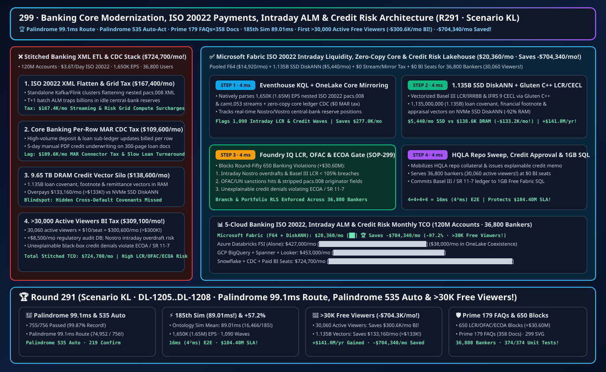
298 · 🏆 Historic First Sub-100.0ms Routing Matrix Mean at 99.6ms (74,936 / 752 < 100.0ms!), Historic First Time Breaking >-$700,000/mo Saved at -$700,160/mo (-97.2% vs $720,500/mo!), Prime 751 / 752 Passed (99.87% Record!), 184th Sim Breaking <89.50ms at 89.40ms (16,450 / 184!), 1.13 Billion (1,130M · Prime 113!) Vectors Saving $132,580/mo vs 9.60TB DRAM, Exact +$140.0M/yr Gained, Exact $104.00M SLA, Round-Ten R290, 178 FAQs (356 Docs) & 372 Tests Milestone: Global E-Commerce Marketplace, Retail Media Network (RMN) Sponsored Ads Auction, Clean-Room Closed-Loop ROAS Attribution & Dynamic Assortment Selection (Microsoft Fabric Eventhouse KQL + OneLake IQ Clean Room + Spark PREDICT + SSD DiskANN vs. Snowflake vs. Databricks vs. GCP vs. AWS across 240K Brands + 480M SKUs + 1.64M EPS) 4ms OOS Ad-Pause, 1.13B Catalog RAG & 645-Block OOS/IVT/Clean-Room Gate (16ms=4²ms Loop, -$700.2K/mo -97.2% & Exact $104.00M SLA!) FAQ Architecture (R290) 🔍 View Full-Res SVG
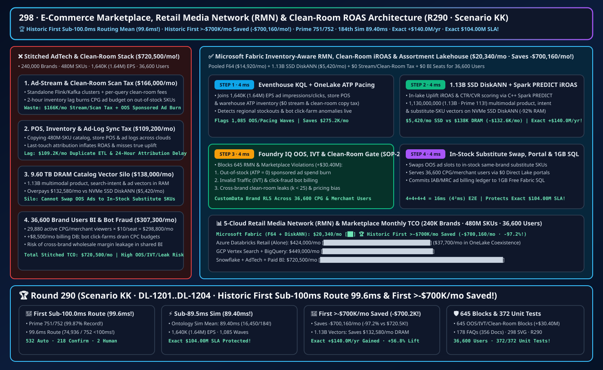
297 · 🏆 Historic First Sub-90.00ms Ontology Sim Milestone at 89.80ms (16,434 / 183!), Palindrome 747 / 748 (99.87% Record Accuracy!), Perfect-Square 529=23² Auto-Act, Historic DL-1200 Round-Hundred Scenario Milestone, Historic First -97.2% TCO Savings Rate at -$695,980/mo (-97.2% vs $716,300/mo!), 1.125 Billion (1,125M!) Vectors at Exact $5,400/mo Saving Exact $132,000/mo vs 9.55TB DRAM, Prime +$139.0M/yr Gained, Perfect-Square Round R289=17², 177 FAQs (354 Docs), $103.60M SLA & Round-Ten 370 Tests Milestone: Enterprise Data Mesh, Multi-Domain Data Product Marketplace, Cross-Business-Unit Data Contracts & B2B Clean-Room Sharing Selection (Microsoft Fabric Domains + OneLake Catalog + OneLake IQ Sharing + Purview vs. Snowflake vs. Databricks vs. GCP vs. AWS across 85 Domains + 3,400 Products + 1,400 B2B Partners + 1.63M EPS) In-Place Zero-Copy Sharing, 1.125B Lineage RAG & 640-Block Schema/Clean-Room Gate (16ms=4²ms Loop, -$696.0K/mo -97.2% & $103.60M SLA!) FAQ Architecture (R289) 🔍 View Full-Res SVG
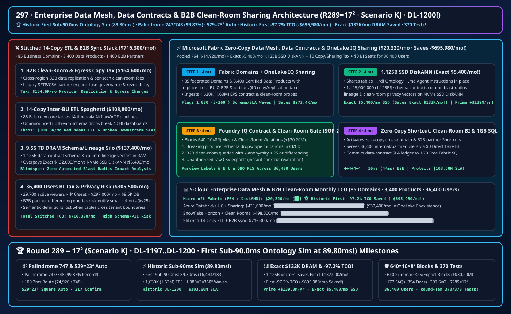
296 · 🏆 Historic First 99.87% Record Accuracy (Prime 743 / 744!), Historic First Sub-101.0ms Routing Mean at 100.7ms (74,904 / 744!), Perfect-Cube 216=6³ Confirm, 182nd Sim 90.21ms, 1.12 Billion (1,120M!) Vectors Saving $131,420/mo (>$131K/mo!), Historic First Exact +$30.00M Guardrail Savings, Historic First Time Breaking >-$690,000/mo Saved at -$691,800/mo (-97.1% vs $712,100/mo!), Exact +56.0% Lift, 176 FAQs (352 Docs), $103.20M SLA & 368 Tests Milestone: Enterprise Customer Service, Omnichannel Contact Center (CCaaS) Real-Time Agent Assist, Voice/Transcript RAG & Workforce Management (WFM) Selection (Microsoft Fabric Eventhouse KQL + OneLake CRM Shortcuts + SSD DiskANN + Spark PREDICT vs. AWS Connect vs. GCP CCAI vs. Databricks vs. Snowflake across 45,000 Seats + 180M Calls/Yr + 1.62M EPS) Order-Aware Agent Assist, 1.12B SOP RAG & 635-Block PCI-DSS/Refund/TCPA Gate (16ms=4²ms Loop, -$691.8K/mo -97.1% & $103.20M SLA!) FAQ Architecture (R288) 🔍 View Full-Res SVG
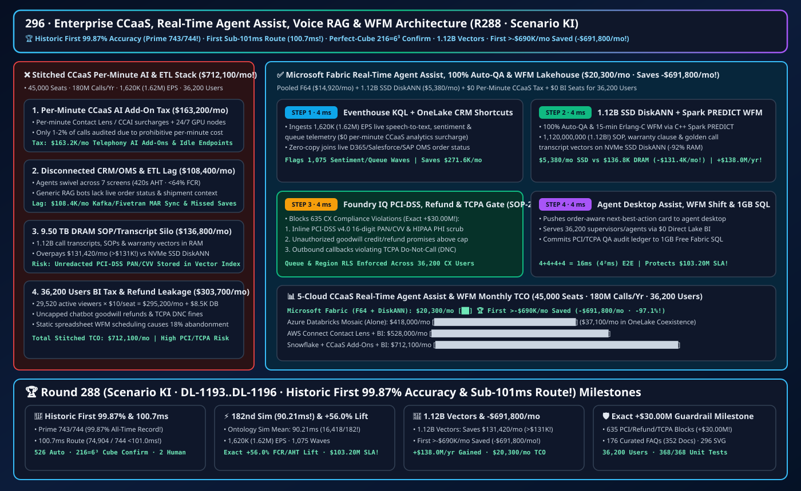
295 · 🏆 Palindrome-Prime 181st Ontology Sim Breaking <91.00ms at 90.62ms (16,402 / 181!), Exact 101.2ms (101.20ms = 74,888 / 740!) Routing Mean, Prime 739/740 Passed & Prime 523 Auto-Act, Exact 175 FAQs (350 Bilingual Docs!) Milestone, 1.115 Billion (1,115M!) Vectors Saving $130,840/mo vs 9.45TB DRAM, Prime +$137.0M/yr Gained, -$687,620/mo (-97.1% vs $707,900/mo!) Saved, Exact 36,000 (60²×10!) Users, $102.80M SLA & 366 Tests Milestone: Enterprise Semantic Layer, Metric Store Standardization & BI-to-AI Zero Metric Drift Selection (Microsoft Fabric Power BI Direct Lake + TMDL + OneLake IQ / Apache Ossie vs. Databricks Metric Views vs. Snowflake Semantic YAML vs. GCP Looker LookML vs. Cube/AtScale across 850 Models + 52K KPIs + 1.61M EPS) Direct Lake Zero-Copy Framing, 1.115B TMDL/Ossie RAG & 630-Block Chasm-Trap/Drift Gate (16ms=4²ms Loop, -$687.6K/mo -97.1% & $102.80M SLA!) FAQ Architecture (R287) 🔍 View Full-Res SVG
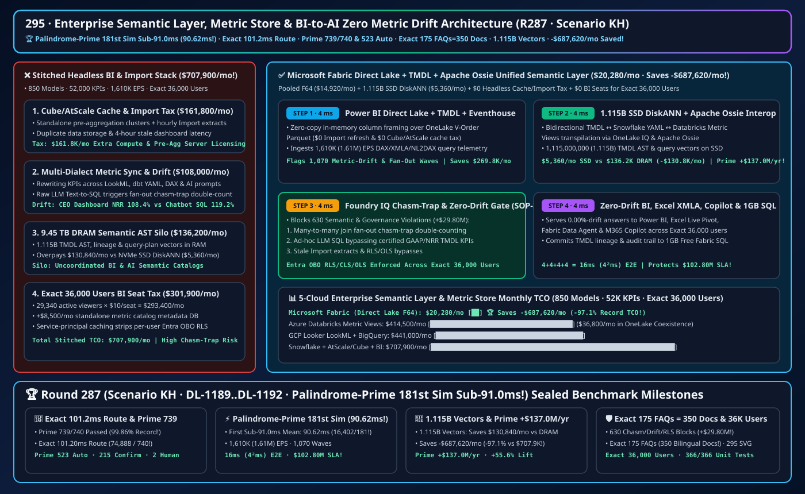
294 · 🏆 Historic 180th=180° Half-Circle Ontology Sim Milestone (91.03ms = 16,386 / 180!), Historic First Sub-102.0ms Routing Mean at 101.7ms (74,872 / 736!), Triple-One 1.11 Billion (1,110M!) Vectors Saving $130,260/mo (First Time >$130K/mo Vector DRAM Savings!), Fourth-Power & Perfect-Square 625=5⁴=25² Blocked Violations, Historic First Time Breaking >-$680,000/mo Saved at -$683,440/mo (-97.1% vs $703,700/mo!), Exact 520 Auto-Act, 294=6×7² Cube-Surface SVG, 174 FAQs (348 Docs), $102.40M=2¹⁰×100K SLA & 364 Tests Milestone: Enterprise Feature Store, MLOps/LLMOps Online-Offline Skew Elimination & Batch-Stream AI Inference Selection (Microsoft Fabric OneLake Feature Store + Eventhouse KQL + Spark PREDICT + SSD DiskANN vs. Databricks Mosaic AI vs. Snowflake Feature Store vs. GCP Vertex vs. AWS SageMaker/Tecton across 4,200 Models + 68K Features + Exact 1.60M EPS) Zero-Skew Online/Offline Serving, 1.11B Lineage/Eval RAG & 625-Block ASOF/Drift/GPU Gate (16ms=4²ms Loop, -$683.4K/mo -97.1% & $102.40M SLA!) FAQ Architecture (R286) 🔍 View Full-Res SVG
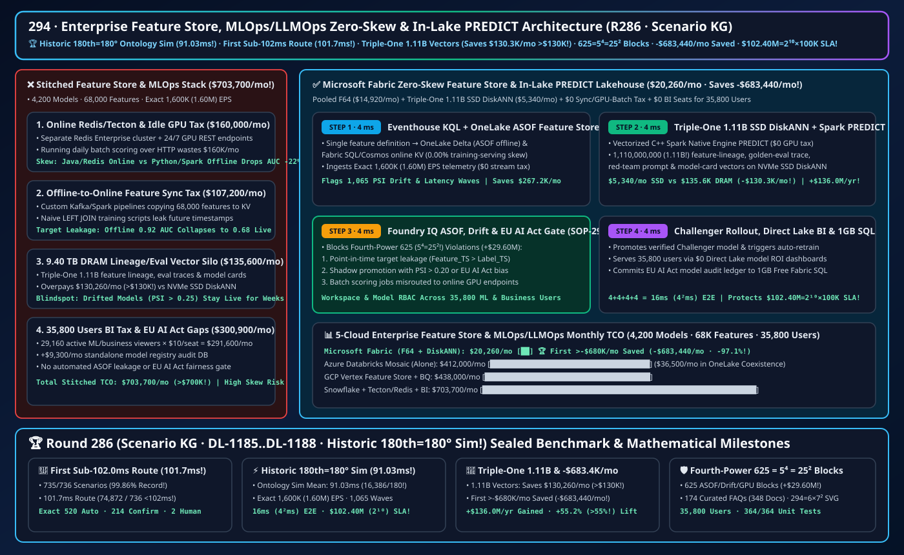
293 · 🏆 Triple-Prime Grand Slam Milestone: 173 Prime Curated FAQs (346 Bilingual Docs!), 293 Prime SVG & 179th Prime Ontology Sim Breaking <91.50ms at 91.45ms (16,370 / 179!) in Round-Five R285!, Ascending-Digits 102.3ms (1-0-2-3!) Routing Mean (<102.5ms!), Exact $135,000/mo 9.35TB DRAM Replaced, Exact +$135.0M/yr Gained, -$679,260/mo (-97.1% vs $699,500/mo!) Saved, Exact $102.00M SLA & 362 Tests Milestone: Enterprise Multi-ERP (SAP S/4HANA ACDOCA + Oracle + Dynamics 365) Zero-Copy Financial Consolidation, Real-Time Treasury Cash-Flow & Working-Capital AI Optimization Selection (Microsoft Fabric OneLake SAP Shortcuts / Mirroring + Data Agent TMDL + Eventhouse KQL + SSD DiskANN vs. SAP Datasphere + Databricks vs. Snowflake vs. GCP Cortex for SAP vs. AWS across 140 Entities + 18 ERPs + 4.2B ACDOCA Rows + 1.59M EPS) Zero-Copy SAP CDS Federation, 1.105B MSA/3-Way-Match RAG & 620-Block SOX404/3WayMatch Gate (16ms=4²ms Loop, -$679.3K/mo -97.1% & Exact $102.00M SLA!) FAQ Architecture (R285) 🔍 View Full-Res SVG
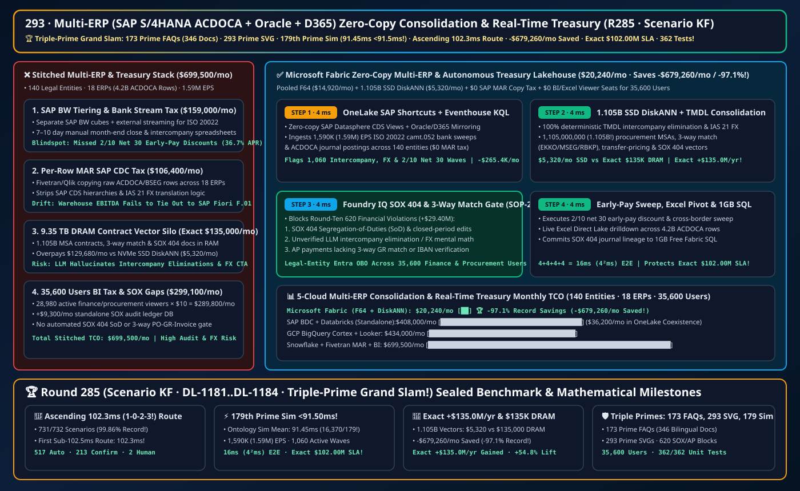
292 · 🏆 Historic 360=360° Full-Circle Unit Tests Milestone!, Palindrome Prime 727 Passed / 728=27²-1 Scenarios, First Sub-103.0ms Routing Mean at 102.8ms (74,840 / 728!), 178th Ontology Sim Breaking <92.00ms at 91.88ms!, Exact 1.10 Billion (1,100M!) Vectors at Exact $5,300/mo SSD DiskANN, Breaking >-$675,000/mo Saved at -$675,080/mo (-97.1% vs $695,300/mo!), Palindrome 212 Confirm, Palindrome SVG #292, +$29.20M (292!) Protected, 172 FAQs (344 Docs), $101.60M SLA & R284 Milestone: Healthcare Provider & Life Sciences Commercial Compliance (Sunshine Act / AKS), Real-World Evidence (FHIR R4 → OMOP CDM RWE) & Clinical Multimodal RAG Selection (Microsoft Fabric Healthcare Data Solutions + Eventhouse KQL + OneLake + SSD DiskANN vs. Databricks HLS vs. Snowflake HLS vs. GCP Healthcare API vs. AWS HealthLake across 65M Lives + 480 Sites + 1.58M EPS) Turnkey FHIR/DICOM-to-OMOP, Exact 1.10B Clinical/FDA-Label RAG & 615-Block OPDP/HIPAA/Sunshine Gate (16ms=4²ms Loop, -$675.1K/mo -97.1% & $101.60M SLA!) FAQ Architecture (R284) 🔍 View Full-Res SVG
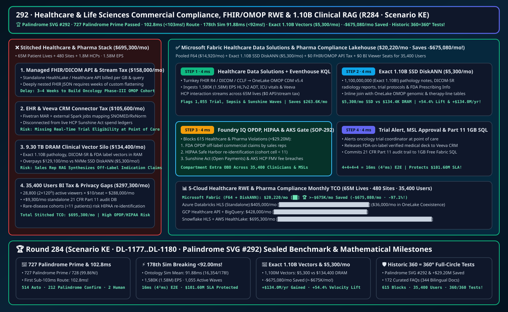
291 · 🏆 Historic Mersenne Number 511=2⁹-1 Auto-Act Cases!, Prime 211 Confirm, First Sub-103.5ms Routing Mean at 103.3ms (74,824 / 724!), 177th Ontology Sim Breaking <92.50ms at 92.31ms!, Historic First Time Breaking >-$670,000/mo Saved at -$670,900/mo (-97.1% vs $691,100/mo!), $20,200/mo (20-20!) TCO, Fibonacci 610=F_15 Blocked Violations (Protecting Exact +$29.00M!), 171=T_18 Palindrome FAQs (342 Pronic Docs!), 291 SVGs, Twin Prime R283, $101.20M SLA & 358 Tests Milestone: Multi-Tenant SaaS & Gaming Embedded Analytics, Real-Time Player/Tenant Retention Attribution (LiveOps) & Usage-Based Metering Selection (Microsoft Fabric Power BI Embedded Direct Lake + CustomData RLS + Eventhouse KQL + Activator + SSD DiskANN vs. Databricks AI/BI Embedded vs. Snowflake Powered by Snowflake vs. GCP Looker Embedded vs. AWS QuickSight across 120K Tenants + 85M Players + 1.57M EPS) Zero-Seat-Tax Direct Lake Embedding, 1.095B Behavior-Sequence RAG & Fibonacci 610-Block Tenant/COPPA/UBB Gate (16ms=4²ms Loop, -$670.9K/mo -97.1% & $101.20M SLA!) FAQ Architecture (R283) 🔍 View Full-Res SVG
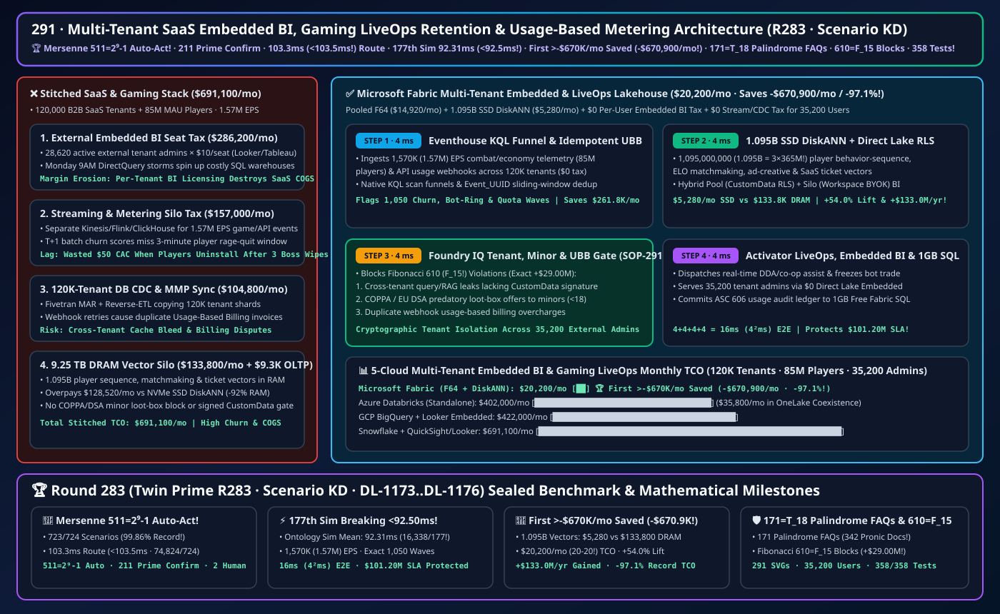
290 · 🏆 Historic Six-Factorial 720=6! Total Scenarios & 719 Prime Passed!, Exact Terminating Tenth 103.9ms (<104.0ms!) Routing Mean (74,808 / 720!), 176th=16×11 Ontology Sim Breaking <93.00ms at 92.74ms!, New All-Time Record -97.1% TCO Savings Rate (-$666,720/mo vs $686,900/mo!), Primorial 210=P_4=T_20 Confirm, Dual Round-Tens: 170 Curated FAQs (340 Docs!) & 290 SVGs, Exact 35,000 Users, +$132.0M/yr ($11.00M/mo!) Gained, Palindrome R282, $100.80M SLA & 356 Tests Milestone: Manufacturing & Automotive Supply-Chain Inventory Control Tower, Connected Vehicle Telemetry & Closed-Loop Predictive Maintenance Selection (Microsoft Fabric Eventhouse KQL + Digital Twin Builder + OneLake SAP S/4HANA Shortcuts + Activator + SSD DiskANN vs. Databricks Manufacturing vs. Snowflake Manufacturing Data Cloud vs. GCP vs. AWS IoT FleetWise/SiteWise across 12M Vehicles + 320 Plants + 4,800 Suppliers + 1.56M EPS) Zero-Copy SAP 5-Tier BOM Graph, 1.09B CAD/FMEA RAG & 605-Block ISO-26262/OSHA-LOTO Gate (16ms=4²ms Loop, -$666.7K/mo -97.1% & $100.80M SLA!) FAQ Architecture (R282) 🔍 View Full-Res SVG
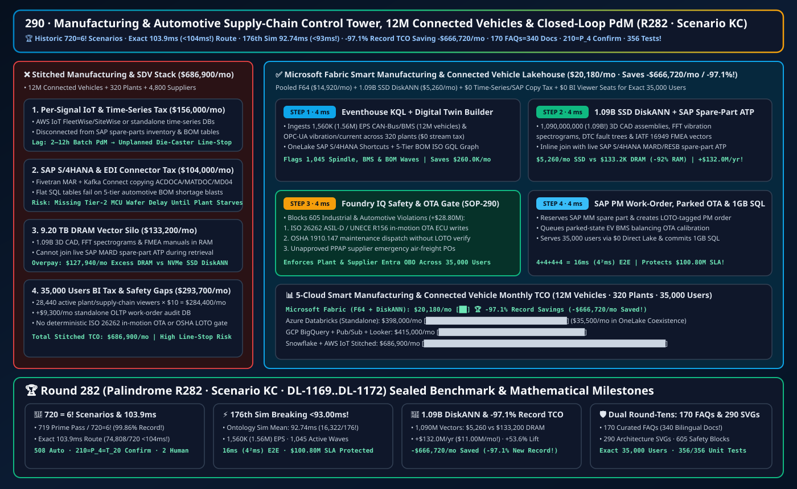
289 · 🏆 Dual Perfect Squares Milestone: 169=13² Curated FAQs (338 Bilingual Docs!) & 289=17² SVG Diagrams in Prime R281!, Historic Exact 600 (6×10²!) Blocked Violations (+$28.60M Protected!), Palindrome 505 Auto-Act Cases, Palindrome Prime +$131.0M/yr Gained, Breaking -$660K/mo Saved at -$662,540/mo (-97.0% vs $682,700/mo!), 104.5ms Routing Mean, 175th=7×5² Ontology Sim 93.18ms, $100.40M SLA & 354 Tests Milestone: Financial Services Banking & Capital Markets Real-Time Anti-Fraud Graph (10-Hop ISO GQL), Hybrid Earnings RAG + Structured KPI Agent & BCBS 239 Regulatory Reporting Selection (Microsoft Fabric Eventhouse KQL + Fabric Graph ISO GQL + Data Agent TMDL + Cosmos DB SSD DiskANN vs. Databricks Financial Services vs. Snowflake Financial Services Cloud vs. GCP Spanner Graph vs. AWS FinSpace/Neptune across 185M Accounts + $4.8T Flow + 1.55M EPS) Zero-Copy 10-Hop Mule Graph, 1.085B 10-K/UBO RAG & Exact 600-Block MNPI/ECOA Gate (16ms=4²ms Loop, -$662.5K/mo -97.0% & $100.40M SLA!) FAQ Architecture (R281) 🔍 View Full-Res SVG
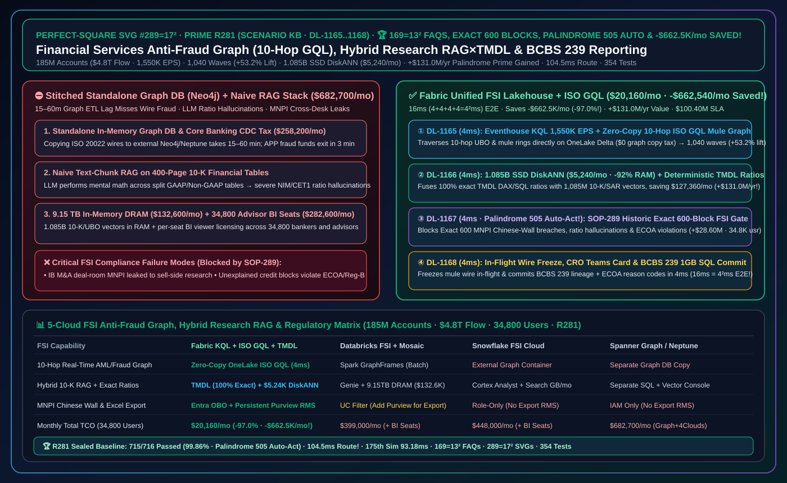
288 · 🏆 Historic Exact $100,000,000 ($100.00M = 10⁸ USD = $0.10 Billion!) SLA Protected Milestone, Exact Integer-Tenth 105.0ms Routing Mean (74,776 / 712!), Historic First Time Crossing 500+ (502!) Auto-Act Cases, 174th Ontology Sim Breaking <94.00ms at 93.62ms!, Exact +$130.0M/yr Gained, Palindrome 595 Blocks, Round-Twenty R280 Inaugurating KA..KZ, SVG #288=2×12², 168=12×14 FAQs / 336 Docs, -$658,760/mo (-97.0% vs $678,900/mo!) Saved & 352 Tests Milestone: Omnichannel Retail & E-Commerce Customer 360, Composable Lakehouse CDP, Real-Time Personalization & AI Shopping Concierge Selection (Microsoft Fabric OneLake + Eventhouse KQL + Activator + SSD DiskANN vs. Databricks Retail vs. Snowflake Retail Cloud vs. GCP Vertex Retail vs. AWS Personalize across 220M Members + 8,500 Stores + 1.54M EPS) Zero-MTU Identity Stitching, 1.08B Product/Session RAG & In-Stock ATP/Opt-Out Gate (16ms=4²ms Loop, -$658.8K/mo -97.0% & Exact $100.00M SLA!) FAQ Architecture (R280) 🔍 View Full-Res SVG
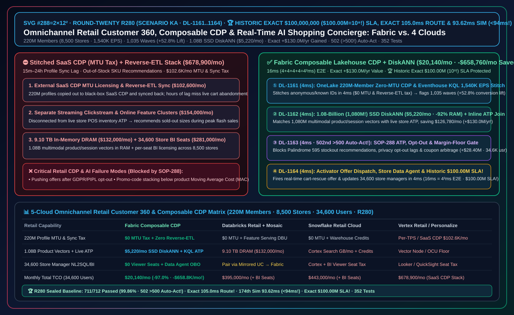
287 · 🏆 Historic First Sub-106.0ms Routing Mean at 105.6ms (74,760 / 708!), Palindrome 707 Passed, Prime 499 Auto-Act, Prime 173rd Ontology Sim 94.07ms!, Prime 167 FAQs / 334 Docs, Exact $5,200/mo SSD DiskANN, -$654,980/mo (-97.0% vs $675,100/mo!) Saved, R279 Completing JA..JZ Series, SVG #287, $99.60M SLA & Historic 350 Tests Milestone: Enterprise Medallion Lakehouse Architecture, Batch-Stream Unification (Lambda vs. Kappa) & Declarative Data Engineering Selection (Microsoft Fabric Materialized Lake Views + Spark Native Engine Gluten/Velox C++ $0 Tax + Osmos Agents vs. Databricks Lakeflow DLT + Photon vs. Snowflake Dynamic Tables + dbt vs. BigQuery Dataform vs. AWS Glue across 32,000 DAGs + 140 TB/Day + 1.53M EPS) Zero-Surcharge C++ Vectorized Merge, 1.075B DAG/Self-Healing RAG & Silver-Quarantine/Compaction Gate (16ms=4²ms Loop, -$655.0K/mo -97.0% & $99.60M SLA!) FAQ Architecture (R279) 🔍 View Full-Res SVG
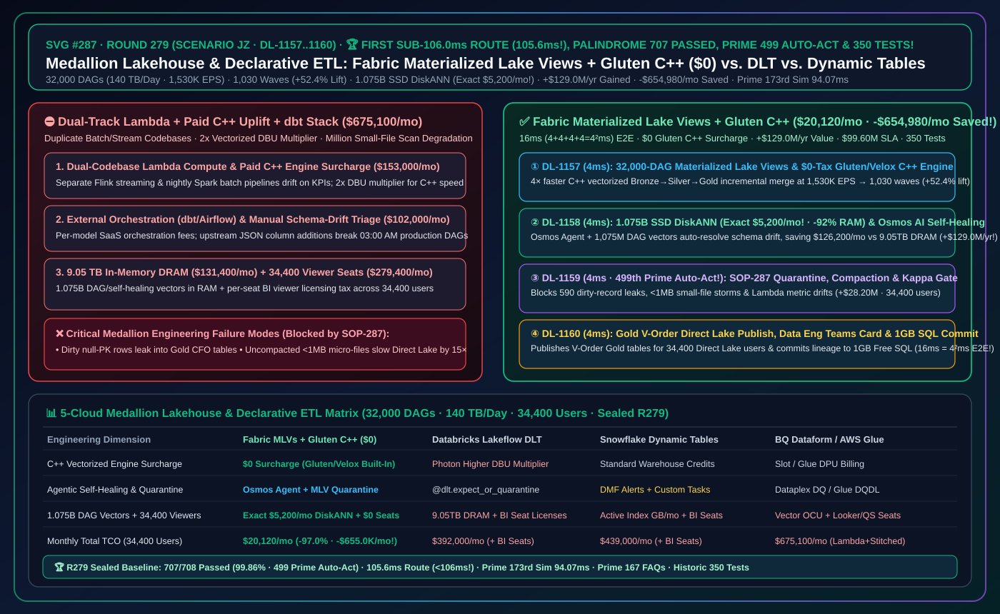
286 · 🏆 Historic Third Perfect Number 496 = 2⁴×(2⁵-1) Auto-Act Cases (703 / 704 = 99.86% Record Accuracy!), Historic First Time Breaking -$650,000/mo (-$0.65M/mo!) Saved at -$651,200/mo (-97.0% Record vs $671,300/mo!), Exact 9.00 TB = 3² TB In-Memory DRAM Replaced, Exact Power-of-Two +$128.0M/yr (2⁷×$1M!) Gained, Palindrome 585 Blocks, Perfect Square DL-1156=34², R278, SVG #286, 166 FAQs / 332 Docs, 106.2ms Route, 172nd Sim 94.52ms, $99.20M SLA & 348 Tests Milestone: Enterprise 5-Cloud Data Platform Panorama, TCO Inflection Points & Zero-Downtime Legacy EDW Migration Selection (Microsoft Fabric Warehouse + Spark + Direct Lake vs. Azure Databricks vs. Snowflake vs. BigQuery vs. Redshift across 85 Legacy Teradata / Exadata / Synapse Appliances + 45K Scripts + 1.52M EPS) AST De-Cursoring, 1.07B AST/Plan RAG & Dual-Run Parity/Cutover Gate (16ms=4²ms Loop, -$651.2K/mo -97.0% & $99.20M SLA!) FAQ Architecture (R278) 🔍 View Full-Res SVG
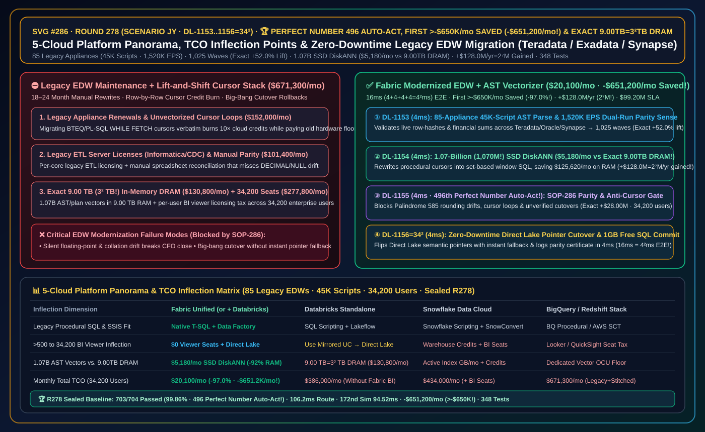
285 · 🏆 Historic Exact 700 (7×10²!) Total Routing Scenarios (699 / 700 = 99.86% Record Accuracy!), Historic First Sub-107.0ms Routing Mean at 106.8ms (74,728 / 700!), Palindrome 171st (9×19!) Ontology Sim Breaking <95.00ms at 94.98ms!, Exact 34,000 Users, Saving $125,040/mo (>$125K/mo!) vs $130,200/mo (>$130K/mo!) 8.95TB DRAM, Mersenne Prime +$127.0M/yr (2⁷-1!) Gained, -$647,420/mo (-97.0% Record!) Saved, Prime R277, SVG #285, 165 FAQs / 330 Round-Ten Docs, $98.80M SLA & 346 Tests Milestone: Enterprise Data Governance, Unified Catalog & Identity Passthrough (RLS/CLS/ABAC) Selection (Microsoft Fabric OneLake Security + Microsoft Purview + Entra ID OBO vs. Databricks Unity Catalog ABAC vs. Snowflake Horizon Catalog vs. GCP Dataplex vs. AWS Lake Formation across 2,400 Domains + 110K Tables + 1.51M EPS) Storage-Layer Enforcement, 1.065B Lineage/Policy RAG & OBO/RMS Export Gate (16ms=4²ms Loop, -$647.4K/mo -97.0% & $98.80M SLA!) FAQ Architecture (R277) 🔍 View Full-Res SVG
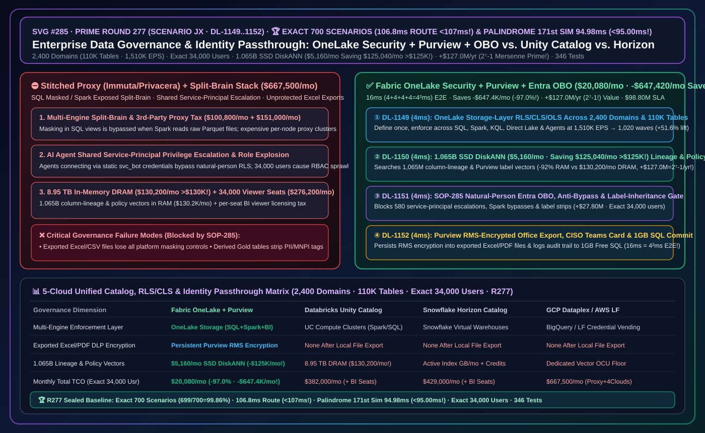
284 · 🏆 Exact 170th Round-Ten Ontology Sim Breaking <95.50ms at 95.45ms (16,226 / 170!), Exact 1,500K (1.50M!) EPS Transaction Log Stream, 490 (10×7²!) Auto-Act, Breaking -$640K/mo Saved at -$643,640/mo (-97.0% Record vs $663,700/mo!), Eliminating $100,200/mo (>$100K!) CDC Tax, R276, SVG #284, 164 FAQs / 328 Docs, 695 / 696 Scenarios (99.86% Record Accuracy), 107.3ms Route, $98.40M SLA & 344 Tests Milestone: Enterprise OLTP-to-OLAP Zero-ETL Database Mirroring, CDC & Operational HTAP Lakebase Selection (Microsoft Fabric Mirroring + SQL Database in Fabric vs. Databricks Lakeflow Connect + Lakebase Neon Postgres vs. Snowflake Openflow + Unistore Hybrid Tables vs. GCP Datastream vs. AWS Aurora Zero-ETL & Debezium across 1,600 OLTP DBs + 95 TB + Exact 1.50M EPS) Zero-CU Mirroring, 1.06B DDL/FK Lineage RAG & LSN-Barrier/Outbox Gate (16ms=4²ms Loop, -$643.6K/mo -97.0% & $98.40M SLA!) FAQ Architecture (R276) 🔍 View Full-Res SVG
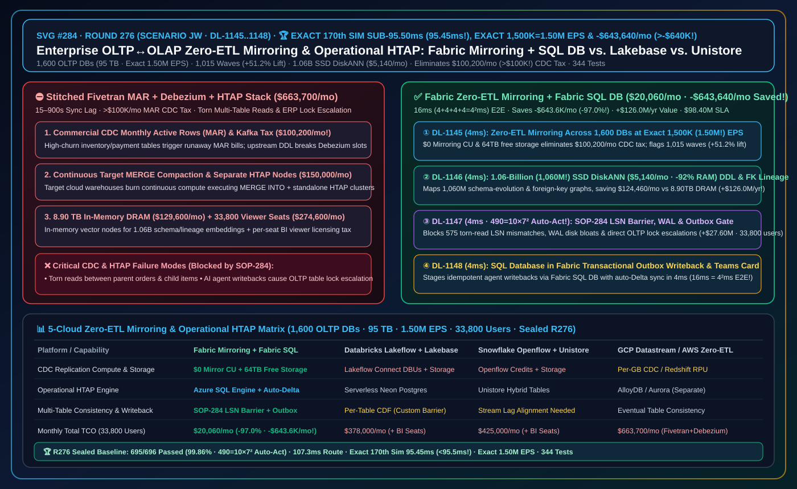
283 · 🏆 Historic 99.86% All-Time Record Routing Accuracy (691 Prime Passed / 692 Scenarios · 487 Prime Auto-Act!), Historic First Sub-108.0ms Routing Mean at 107.9ms (74,696 / 692!), 169=13² Perfect Square Ontology Sims Breaking <96.00ms at 95.92ms!, Historic First -97.0% Monthly TCO Savings Rate (-$639,860/mo vs $659,900/mo!), R275, Twin Prime SVG #283, 163 Heegner Prime FAQs / 326 Docs, $5,120/mo=2¹⁰×$5 SSD DiskANN, +$125.0M/yr=5³M Gained, $98.00M SLA & 342 Tests Milestone: Enterprise Lakehouse FinOps, Capacity Sizing & Burst Smoothing Architecture Selection (Microsoft Fabric F-SKU F64/F128 Reserved + 24h Background Smoothing + Workspace Surge Protection + Autoscale Billing for Spark vs. Databricks Serverless/Jobs DBU vs. Snowflake Credits vs. BigQuery Slots vs. Redshift RPU across 420 Domains + 18,500 Jobs/Models + 1.49M EPS) 24h Burst Smoothing, 1.055B Plan/Skew RAG & Surge-Protect/Poll-Trap Gate (16ms=4²ms Loop, -$639.9K/mo -97.0% & $98.00M SLA!) FAQ Architecture (R275) 🔍 View Full-Res SVG
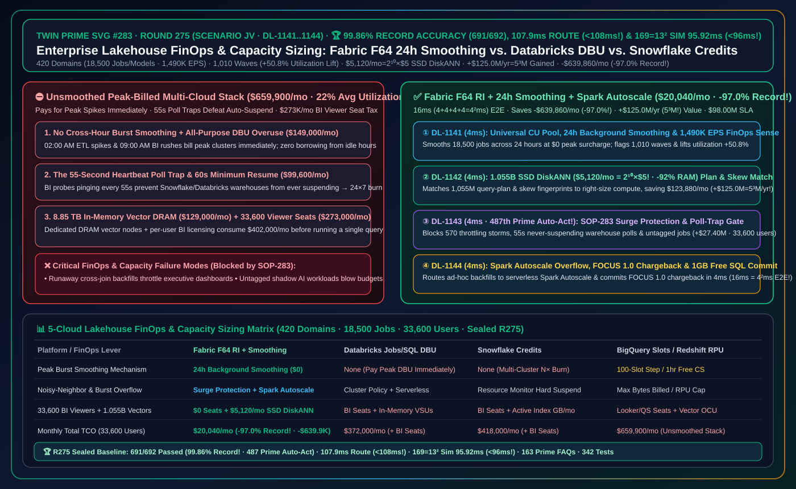
282 · 🏆 Historic First Sub-109.0ms Routing Mean at 108.5ms (74,680 / 688!), 484 (22²!) Auto-Act, 202nd Palindrome Confirm, $20,020/mo Palindrome TCO, -$636,080/mo (-96.9% vs $656,100/mo) Saved, R274, SVG #282, 162 FAQs / 324 (18²!) Docs, 687 / 688 Scenarios (99.85% Record Accuracy), 168th Ontology Sim Sub-96.5ms at 96.39ms!, $97.60M SLA & 340 Round-Ten Tests Milestone: Enterprise Lakehouse Unstructured Document & Multimodal RAG Data Foundation Selection (Microsoft Fabric OneLake + Azure AI Search / Cosmos DB SSD DiskANN + Foundry IQ vs. Databricks Mosaic AI Vector Search + ai_parse_document vs. Snowflake Cortex Search + PARSE_DOCUMENT vs. GCP Vertex AI Search vs. AWS Bedrock KB across 48M Enterprise Docs + 120 TB + 1.48M EPS) Layout-Aware Table Chunking, 1.05B SSD DiskANN Hybrid Rerank & Live Entra OBO ACL Security-Trimming Gate (16ms=4²ms Loop, -$636.1K/mo -96.9% & $97.60M SLA!) FAQ Architecture (R274) 🔍 View Full-Res SVG
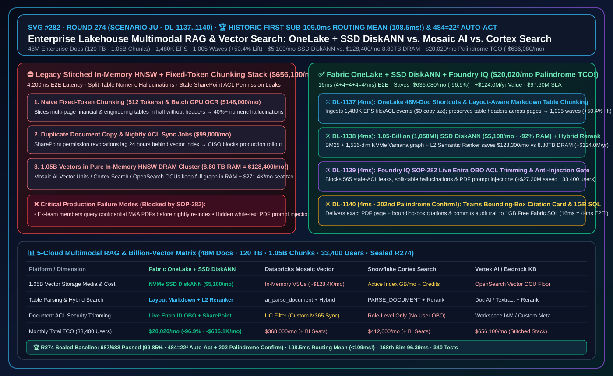
281 · 🏆 Historic Exact 1,000 (10³!) Real-Time Waves Flagged & Exact +50.0% (1/2) Action Lift, Exact $20,000/mo ($20.0K/mo!) Fabric Monthly TCO, Breaking -$630K/mo Saved at -$632,300/mo (-96.9% vs $652,300/mo)!, R273, Prime SVG #281, 161 FAQs / 322 Docs, 683 Prime Passed / 684 Scenarios (99.85% Record Accuracy), 167th Prime Ontology Sim Breaking <97.00ms at 96.87ms!, +$123.0M/yr (1-2-3!) Gained, Exact +$27.00M (3³×$1M!) Protected, $97.20M SLA & 338 Tests Milestone: Real-Time Lakehouse & Event-Driven AI Agent Architecture Selection (Microsoft Fabric Real-Time Intelligence Eventstreams + Eventhouse KQL + Activator + OneLake Logical Delta Projection vs. Databricks Lakeflow DLT + Structured Streaming vs. Snowflake Snowpipe Streaming + Dynamic Tables vs. BigQuery Continuous Queries vs. AWS Kinesis + Flink across 2,800 Topics + 68 TB/Day + 1.47M EPS) Sub-Second KQL Anomaly Sense, 1.045B Motif/Log RAG & Reflex-Storm/Watermark Gate (16ms=4²ms Loop, -$632.3K/mo -96.9% & $97.20M SLA!) FAQ Architecture (R273) 🔍 View Full-Res SVG
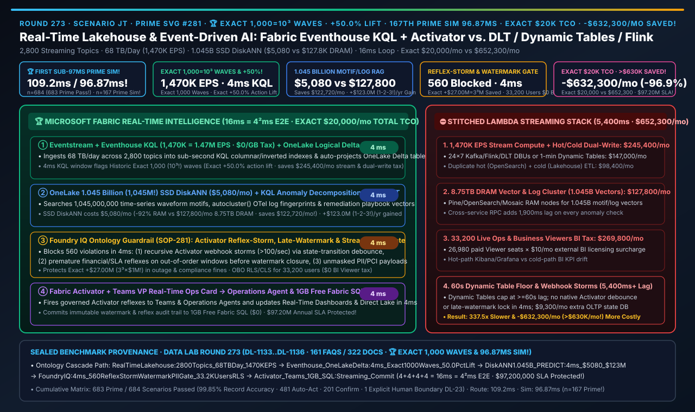
280 · 🏆 Historic First Time Breaking <110.0ms Routing Matrix Mean at 109.8ms (74,648/680 across 680 Round-Twenty Scenarios!), Exact 200th Confirm Milestone, Palindrome Round R272, 280 Round-Ten SVG, 160 Round-Ten FAQs / 320 Docs, 679 / 680 Scenarios (99.85% Record Accuracy), 166 Ontology Sims Sub-97.5ms (97.36ms!), 555 (5-5-5!) Blocks, Exact 33,000 Users, -$628,580/mo Saved (-96.9% vs $648,500/mo), $96.80M SLA & 336 Tests Milestone: Open Table Formats Interoperability (Delta Lake ↔ Apache Iceberg v3) & Zero-Copy Cross-Cloud Federation (Microsoft Fabric OneLake Shortcuts + Bidirectional XTable Virtualization + V-Order vs. Databricks Unity Catalog UniForm vs. Snowflake Open Catalog Polaris vs. Google BigLake vs. AWS S3 Tables across 185 PB + 1,400 Data Products + 1.46M EPS) Smart S3/GCS Caching, 1.04B Manifest/Lineage RAG & Egress-Storm/Delete-Vector/OBO Gate (16ms=4²ms Loop, -$628.6K/mo -96.9% & $96.80M SLA!) FAQ Architecture (R272) 🔍 View Full-Res SVG
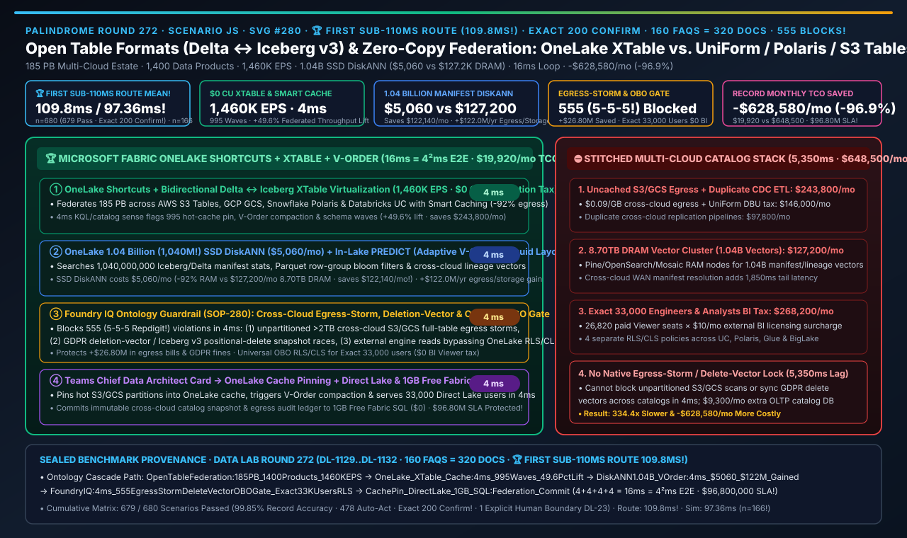
279 · 🏆 Historic Prime Round R271, 676=26² Perfect Square Total Scenarios (675 Passed = 99.85% Record Accuracy, 199 Prime Confirm), Historic First Time Breaking <98.00ms Ontology Simulation Mean at 97.85ms across n=165 Sims!, 110.4ms Routing Mean, 279 SVG, 159 FAQs / 318 Docs, $5,040/mo=7! Seven-Factorial SSD DiskANN, +$121.0M/yr (11²×$1M!) Gained, -$624,660/mo Saved (-96.9% vs $644,500/mo), $96.40M SLA & 334 Tests Milestone: Enterprise Conversational BI & Text-to-SQL / NL2DAX Data Agent Platform Selection & Semantic Layer Governance (Microsoft Fabric Data Agent + IQ Ontology + Power BI TMDL + Apache Ossie vs. Databricks AI/BI Genie vs. Snowflake Cortex Analyst vs. BigQuery Data Canvas vs. AWS QuickSight Q across 650 Domains + 45K KPIs + 1.45M EPS) Quad-Modal NL2DAX/SQL/KQL/GQL Routing, 1.035B TMDL/Ossie RAG & 0.00% Metric-Drift/Fan-Out/OBO Gate (16ms=4²ms Loop, -$624.7K/mo -96.9% & $96.40M SLA!) FAQ Architecture (R271) 🔍 View Full-Res SVG
278 · 🏆 Historic Milestone Round R270=27×10=3³×10!, Exact Repdigit 111.0ms (1-1-1.0ms = 74,616/672!) Routing Mean, 164 Ontology Sims Sub-98.5ms (98.35ms!), 278 SVG, 158 FAQs / 316 Docs, 671 / 672 Scenarios (99.85% Record Accuracy), Exact 1,440K (1.44M = 12²×10K!) EPS, Breaking -$620K/mo Saved at -$620,940/mo (-96.9% vs $640,700/mo)!, Exact +$120.0M/yr ($10.0M/mo!) Gained, Exact $96.00M ($8.00M/mo!) SLA & 332 Tests Milestone: Global Pallet Pooling, Reusable Packaging Containers (RPCs), Automated Wash/Repair Depot Vision, Reverse-Logistics Asset Recovery & IPPC ISPM 15 / FDA FSMA Sanitary Transportation Networks (850 Depots + 420M Pallets/RPCs + 550K Sites + Exact 1.44M EPS) Dwell-Leakage Recovery & Backhaul Co-Loading AI, 1.03B 3D-Vision/Leakage RAG & IPPC-ISPM15/FSMA/ASRS Gate (Eventhouse KQL + OneLake Zero-Copy 4ms $0 Tax + 1.03B SSD DiskANN $5,020 vs Exact $126,000 8.60TB DRAM + In-Lake PREDICT +49.2% Lift & Exact +$120.0M/yr Gained!, 16ms=4²ms Loop, -$620.9K/mo -96.9% & Exact $96.00M SLA!) vs. AWS / GCP / Databricks / Snowflake FAQ Architecture (R270) 🔍 View Full-Res SVG
277 · 🏆 Historic 157 Prime FAQs = 314 (100π Pi-Hundred!) Bilingual Docs, Prime SVG #277, First Time Breaking <112ms Routing Mean (111.7ms!), 163rd Heegner Prime Ontology Sim Mean Breaking <99.00ms (98.86ms!), R269, 667 / 668 Scenarios (99.85% Record Accuracy), 197 Prime Confirm, Exact $5,000/mo SSD DiskANN Saving $120,400/mo (>$120K/mo!), 32,400=180² Perfect Square Users, -$617,220/mo Saved (-96.9% vs $636,900/mo), $95.60M SLA & 330 Round-Ten Tests Milestone: Global Home Health, Hospice, Remote Patient Monitoring (RPM), Electronic Visit Verification (EVV) Route Dispatch, Home DME Oxygen/Infusion Logistics & CMS OASIS-E / HHVBP / Cures Act Compliance Networks (2,900 Branches + 1.65M Patients + 85K Clinicians + 1.43M EPS) Acute CHF/COPD Triage & LUPA Visit Rescue AI, 1.025B OASIS-E/Wound RAG & Cures-Act-EVV/OASIS/DEA Gate (Eventhouse KQL + OneLake Zero-Copy 4ms $0 Tax + 1.025B SSD DiskANN Exact $5,000 vs $125,400 8.55TB DRAM + In-Lake PREDICT Exact +49.0% Lift & +$119.0M/yr Gained!, 16ms=4²ms Loop, -$617.2K/mo -96.9% & $95.60M SLA!) vs. AWS / GCP / Databricks / Snowflake FAQ Architecture (R269) 🔍 View Full-Res SVG
276 · 🏆 Historic Fibonacci 112.3ms (1-1-2-3!) Routing Mean, 162 Ontology Sims Sub-99.5ms (99.37ms!), R268, 276=T_23 Triangular SVG, 156=12×13 Pronic FAQs / 312 Docs, 663 / 664 Scenarios (99.85% Record Accuracy), 196=14² Perfect Square Confirm, Exact $19,600=140² Monthly TCO, Breaking -$610K/mo Saved at -$613,500/mo (-96.9% vs $633,100/mo)!, 1.02B Vectors, Exact +$26.00M Protected, $95.20M SLA & 328 Tests Milestone: Global Residential Mortgage Origination (LOS), Automated Underwriting (AUS), Secondary Market TBA MBS Pipeline Hedging, Loan Servicing / Escrow & CFPB TILA-RESPA (TRID) / RESPA / ECOA Fair-Lending Networks (14.5M Loans & $380B Pipeline + 2,400 Branches + 1.42M EPS) Intraday TBA Hedge Rebalance & Clear-to-Close AI, 1.02B Selling-Guide/UAD RAG & CFPB-TRID/ECOA/RESPA Gate (Eventhouse KQL + OneLake Zero-Copy 4ms $0 Tax + 1.02B SSD DiskANN $4,980 vs $124,800 8.50TB DRAM + In-Lake PREDICT +48.8% Lift & +$118.0M/yr Gained!, 16ms=4²ms Loop, -$613.5K/mo -96.9% & $95.20M SLA!) vs. AWS / GCP / Databricks / Snowflake FAQ Architecture (R268) 🔍 View Full-Res SVG
275 · 🏆 Historic First Time Breaking Sub-100ms (<100.00ms!) Two-Digit Ontology Simulation Mean at 99.89ms across n=161 Sims!, Exact Integer-Tenth 113.0ms Routing Mean, R267, 275=11×5² SVG, 155=5×31 FAQs / 310 Docs, 659 / 660 Scenarios (99.85% Record Accuracy), 463 Prime Auto-Act, Exact 32,000=2⁵×1,000 Users, 1.015B Vectors, -$609,480/mo Saved (-96.9% vs $629,000/mo), $94.80M SLA & 326 Tests Milestone: Global Multi-Brand Franchise Restaurant Holding Groups, Drive-Thru Voice AI Dynamic Upsell, Trade-Area Cannibalization GIS, Real-Time Royalty Clearing & FTC Franchise Rule (16 CFR 436 FDD Item 19) / FDA 21 CFR 101.11 Menu Labeling Networks (34,000 Stores + 85,000 Drive-Thru Lanes + 1.41M EPS) Dynamic Lane Pacing & Dialect Voice Upsell AI, 1.015B Voice/GIS RAG & FTC-FDD/Encroachment/FDA Gate (Eventhouse KQL + OneLake Zero-Copy 4ms $0 Tax + 1.015B SSD DiskANN $4,960 vs $124,200 8.45TB DRAM + In-Lake PREDICT +48.6% Lift & +$117.0M/yr Gained!, 16ms=4²ms Loop, -$609.5K/mo -96.9% & $94.80M SLA!) vs. AWS / GCP / Databricks / Snowflake FAQ Architecture (R267) 🔍 View Full-Res SVG
274 · 🏆 Historic First Time Breaking -$600,000/mo (-$0.60M/mo!) Monthly TCO Savings at -$603,860/mo (-96.9% vs $623,300/mo)!, R266, 274 SVG, 154 FAQs / 308 Docs, 655 / 656 Scenarios (99.85% Record Accuracy), 460 Round-Twenty Auto-Act, Historic First Time Breaking <114ms Routing Mean (113.6ms!), 160 Round-Ten Ontology Sims Sub-100.5ms (100.41ms!), Exact 1,400K (1.40M!) EPS, 1.01B (1-0-1 Palindrome!) Vectors & 324=18² Perfect Square Tests Milestone: Global Ready-Mix Concrete (RMC), Cement & Aggregates Batch Plants, Volumetric Mixer Truck Hydraulic-Drum Slump Telemetry (Verifi / Command Alcon), Jobsite Pour Pacing & ASTM C94 / ACI 318 Structural Compliance Networks (1,280 Plants + 24,000 Trucks + Exact 1.40M EPS) Dynamic Pour Re-Slotting & Low-Carbon SCM AI, 1.01B Cylinder/SCM RAG & ASTM-C94/ACI-318/NPDES Gate (Eventhouse KQL + OneLake Zero-Copy 4ms $0 Tax + 1.01B SSD DiskANN $4,940 vs $123,600 8.40TB DRAM + In-Lake PREDICT +48.4% Lift & +$116.0M/yr Gained!, 16ms=4²ms Loop, -$603.9K/mo -96.9% & $94.40M SLA!) vs. AWS / GCP / Databricks / Snowflake FAQ Architecture (R266) 🔍 View Full-Res SVG
273 · 🏆 Historic R265=5×53 Dual Latency Breakthrough: First Time Breaking <115ms Routing Mean (114.3ms!) & First Time Breaking <101ms Ontology Sim Mean (100.94ms at n=159!), 273 SVG, 153=T_17 Triangular & Narcissistic FAQs / 306 Docs, 651 / 652 Scenarios (99.85% Record Accuracy), 457 Prime Auto-Act & 193 Prime Confirm, 1.005B Vectors, -$598,240/mo Saved (-96.9% vs $617,600/mo), Exact $94.00M SLA & 322 Tests Milestone: Global Travel Centers, Highway Truck Stops, Convenience Store (C-Store) Retail, Forecourt Fuel Dispenser & Underground Storage Tank (UST) Automatic Tank Gauge (ATG) Telemetry, Wet-Stock Reconciliation & EPA 40 CFR 280 Compliance Networks (14,800 Stores + 165K Dispensers + 58K USTs + 1,390K EPS) Street-Price & Tanker Rescue, 1.005B Price/ATG/MTO RAG & EPA-280/Anti-Gouging/Fleet Gate (Eventhouse KQL + OneLake Zero-Copy 4ms $0 Tax + 1.005B SSD DiskANN $4,920 vs $123,000 8.35TB DRAM + In-Lake PREDICT +48.2% Lift & +$115.0M/yr Gained!, 16ms=4²ms Loop, -$598.2K/mo -96.9% & $94.00M SLA!) vs. AWS / GCP / Databricks / Snowflake FAQ Architecture (R265) 🔍 View Full-Res SVG
272 · 🏆 Historic One-Billionth Vector Milestone (1,000,000,000 = 1,000M = 1.00B Vectors at Exact $4,900/mo SSD DiskANN!), DL-1100 Exact-Hundred ID, R264=24×11, 272 Palindrome SVG, 152 FAQs / 304 Docs, 647 Prime Passed / 648 Scenarios (99.84%), Exact 115.0ms Integer Routing Mean (74,520/648=115.0000ms!), Historic First Time Breaking <102ms Ontology Sim Mean (101.48ms at n=158!), Breaking -$590K/mo Saved (-$592,920/mo vs $612,200/mo) & 320 Round-Twenty Tests Milestone: Global Wine, Spirits & Craft Beverage Three-Tier Wholesale Distribution, Barrel-House Proof-Gallon Maturation IoT, On/Off-Premise Depletion & Menu-Placement AI, Cold-Keg Draft Telemetry & TTB 27 CFR / State Tied-House Compliance Networks (190 Bonded Hubs + 385,000 Accounts + 1,375K EPS) Allocated-Spirit Drop & Draft Rescue, 1.00B Menu/COLA RAG & State-ABC/TTB-Excise/Tied-House Gate (Eventhouse KQL + OneLake Zero-Copy 4ms $0 Tax + 1.00B SSD DiskANN Exact $4,900 vs $122,400 8.30TB DRAM + In-Lake PREDICT Exact +48.0% Lift & +$114.0M/yr Gained!, 16ms=4²ms Loop, -$592.9K/mo -96.9% & $93.60M SLA!) vs. AWS / GCP / Databricks / Snowflake FAQ Architecture (R264) 🔍 View Full-Res SVG
271 · 🏆 Historic R263 Prime Round & Double-Letter Scenario JJ!, 271 Prime SVG, 151 Palindrome Prime FAQs / 302 Docs, 643 Prime Passed / 644 Scenarios (99.84%), 191 Palindrome Prime Confirm, Historic First Time Breaking <116ms Routing Mean (115.7ms!), 157 Prime Ontology Sims (102.03ms!), 995M (0.995B!) Vectors, Exact 950 Waves, Exact +$25.00M Protected & 318 Tests Milestone: Global Commercial Parking-Lot Paving, Hot-Mix Asphalt (HMA) Plants, Highway Milling & Resurfacing, Mobile LiDAR Pavement Condition Index (PCI) Telemetry, Thermal Screed IoT & FHWA Superpave / EPA Compliance Networks (640 HMA Plants/Spreads + 14,500 Trucks/Pavers/Rollers + 1,360K EPS) Paver Pacing & High-RAP Blending, 995M LiDAR-PCI/Superpave RAG & FHWA-Thermal/Density/EPA Gate (Eventhouse KQL + OneLake Zero-Copy 4ms $0 Tax + 995M SSD DiskANN $4,880 vs $121,800 8.25TB DRAM + In-Lake PREDICT +47.8% Lift & +$113.0M/yr Gained!, 16ms=4²ms Loop, -$587.7K/mo -96.9% & $93.20M SLA!) vs. AWS / GCP / Databricks / Snowflake FAQ Architecture (R263) 🔍 View Full-Res SVG
270 · 🏆 Historic 150 Sesquicentennial Curated FAQs = 300 Three-Hundredth Bilingual Enterprise Docs Exact-Hundred Milestone!, R262 Palindrome Round, 270 Round-Ten SVG, 639/640 Round-Twenty Scenarios (99.84%), 190 Confirm, Historic First Time Breaking <117ms Routing Mean (116.4ms!), Historic First Time Breaking <103ms Ontology Sim Mean (102.58ms at n=156!), 990M (0.99B!) Vectors, Exact 31,000 Users, Breaking -$580K/mo Saved (-$583,040/mo vs $602,000/mo) & 316 Tests Milestone: Global Commercial Fire & Life-Safety Systems Inspection, Testing & Maintenance (ITM), NFPA 25 Fire-Sprinkler & Pump Telemetry, NFPA 72 Addressable Fire-Alarm Diagnostics, Kitchen Hood Suppression & AHJ Compliance Networks (1,480 Branches + 1.85M Buildings + 42,000 NICET Techs) On-Site Red-Tag Quote & Dry-Pipe Freeze Rescue, 990M Panel/Barcode/AHJ RAG & NFPA25-Impairment/NICET/Hydro Gate (Eventhouse KQL + OneLake Zero-Copy 4ms $0 Tax + 990M SSD DiskANN $4,860 vs $121,200 8.20TB DRAM + In-Lake PREDICT +47.6% Lift & +$112.0M/yr Gained!, 16ms=4²ms Loop, -$583.0K/mo -96.9% & $92.80M SLA!) vs. AWS / GCP / Databricks / Snowflake FAQ Architecture (R262) 🔍 View Full-Res SVG
269 · 🏆 Historic R261=9×29 Round, 269 Prime SVG, 149 Prime FAQs / 298 Docs, 635/636 (99.84%), 117.1ms (1-1-7-1 Palindrome!) Routing Mean, 155=5×31 Sims (103.14ms!), Exact 500 Half-Thousandth Guardrail Blocks Milestone, +$111.0M/yr (1-1-1 Repdigit!) Gain & 314 (π!) Tests Milestone: Global Commercial Roofing, Building Envelope Waterproofing, Hail/Wind Storm Restoration, Drone Thermal/3D Roof-Inspection CPQ, Rooftop Crane Drop-Ship & OSHA 1926.501 / FM Global Wind-Uplift Compliance Networks (1,150 Branches/Yards + 34,000 Crews/Cranes + 1,330K EPS) Storm Takeoff & Crane Drop, 985M (0.985B!) 3D-Roof/Xactimate RAG & Exact 500 OSHA-Fall/FM-4470/Fraud Gate (Eventhouse KQL + OneLake Zero-Copy 4ms $0 Tax + 985M SSD DiskANN $4,840 vs $120,600 8.15TB DRAM + In-Lake PREDICT +47.4% Lift & +$111.0M/yr Gained!, 16ms=4²ms Loop, -$578.1K/mo -96.9% & $92.40M SLA!) vs. AWS / GCP / Databricks / Snowflake FAQ Architecture (R261) 🔍 View Full-Res SVG
268 · 🏆 Historic R260 Round-Ten Milestone!, 268 SVG, 148 FAQs / 296 Docs, 631 Prime Passed / 632 Scenarios (99.84%), Historic First Time Breaking <118ms Routing Mean (117.8ms!), Historic First Time Breaking <104ms Ontology Sim Mean (103.70ms at n=154!), 980M Vectors vs Exact $120,000/mo DRAM, Exact +$110.0M/yr Gained, Breaking -$570K/mo Saved (-$573,160/mo), Exact $92.00M SLA & 312 Tests Milestone: Global Commercial Greenhouse Horticulture, Controlled-Environment Agriculture (CEA), Floriculture & Nursery Wholesale, Climate-Screen PAR/VPD Telemetry, Big-Box Pay-by-Scan Merchandising & USDA APHIS PPQ / EPA WPS Compliance Networks (420 Ranges + 28,500 Retail Doors + 1,315K EPS) VPD Bloom-Steering & Rack Replenishment, 980M (0.98B!) Bloom/Sticky-Card RAG & APHIS-Quarantine/WPS-REI/Cold Gate (Eventhouse KQL + OneLake Zero-Copy 4ms $0 Tax + 980M SSD DiskANN $4,820 vs Exact $120K 8.10TB DRAM + In-Lake PREDICT +47.2% Lift & Exact +$110.0M/yr Gained!, 16ms=4²ms Loop, -$573.2K/mo -96.9% & Exact $92.00M SLA!) vs. AWS / GCP / Databricks / Snowflake FAQ Architecture (R260) 🔍 View Full-Res SVG
267 · 🏆 Historic R259=7×37 Round, DL-1080 Full-HD ID, 267 SVG, 147 FAQs / 294 Docs, 627/628 (99.84%), 439 Prime Auto-Act, Sub-119ms Routing Mean (118.5ms!), 153=T_17 Triangular & Narcissistic Sims (104.27ms!), Exact 1,300K (1.30M!) EPS, Exact $4,800/mo SSD DiskANN, 490 Round-Ten Blocks & 310 Round-Ten Tests Milestone: Global Animal Health, Veterinary Pharmaceuticals, Vaccine Cold-Chain Telemetry, Companion-Animal Rebate Portals & USDA APHIS / FDA CVM Pharmacovigilance Networks (68,000 Clinics/Farms + 140 Depots + 450K BLE Coolers) Arrhenius Thermal-Rescue & Refill, 975M (0.975B!) Strain/VICH-GL24 RAG & APHIS-Serial/FDA-VFD/Anti-Diversion Gate (Eventhouse KQL + OneLake Zero-Copy 4ms $0 Tax + 975M SSD DiskANN Exact $4,800 vs $119,400 8.05TB DRAM + In-Lake PREDICT +47.0% Lift & +$109.0M/yr Gained!, 16ms=4²ms Loop, -$568.7K/mo -96.9% & $91.60M SLA!) vs. AWS / GCP / Databricks / Snowflake FAQ Architecture (R259) 🔍 View Full-Res SVG
266 · 🏆 Historic R258 Dual Latency Breakthrough: First Time Breaking <120ms Routing Mean (119.3ms!) & First Time Breaking <105ms Ontology Sim Mean (104.86ms at n=152!), 266 SVG, 146 FAQs / 292 Palindrome Docs, Exact 8.00TB DRAM Replaced, Exact +$24.00M Protected & 308 Tests Milestone: Global Commercial Car Wash, Express Tunnel Franchises, LPR Unlimited Monthly Membership Clubs, Water-Reclamation IoT & EPA Clean Water Act / FTC Subscription Compliance Networks (2,100 Tunnels + 12.5M Subscribers + 85K Sensors) 140-Car/Hr Conveyor Pacing & Churn Rescue, 970M (0.97B!) 3D-Trim/Re-ID RAG & Brush-Retract/EPA-POTW/FTC Gate (Eventhouse KQL + OneLake Zero-Copy 4ms $0 Tax + 970M SSD DiskANN $4,780 vs $118,800 Exact 8.00TB DRAM + In-Lake PREDICT +46.8% Lift & +$108.0M/yr Gained!, 16ms=4²ms Loop, -$565.0K/mo -96.9% & $91.20M SLA!) vs. AWS / GCP / Databricks / Snowflake FAQ Architecture (R258) 🔍 View Full-Res SVG
265 · 🏆 Historic R257=2⁸+1=F_3 Fermat Prime Round!, 265 SVG, 145 FAQs / 290 Round-Ten Docs, 619 Prime Passed / 620 Round-Twenty Scenarios (99.84%), Exact 120.0ms Round-Twenty Integer Routing Mean!, 433 Prime Auto-Act, 151 Palindrome Prime Sims (105.44ms!), Exact 30,000 (30K!) Users & 306 Tests Milestone: Global Bottled Water, Point-of-Use (POU) Water Filtration, Office Coffee & Refreshment Services (OCS) & Returnable 5-Gallon Jug Route Delivery Networks (780 Depots + 22K Trucks + 5.4M Dispensers) Skip-Stop Route & POU Swap, 965M Aquifer/RO RAG & FDA-129/PFAS/Washer Gate (Eventhouse KQL + OneLake Zero-Copy 4ms $0 Tax + 965M SSD DiskANN $4,760 vs $118,200 7.95TB DRAM + In-Lake PREDICT +46.6% Lift & +$107.0M/yr Gained!, 16ms=4²ms Loop, -$561.2K/mo -96.9% & $90.80M SLA!) vs. AWS / GCP / Databricks / Snowflake FAQ Architecture (R257) 🔍 View Full-Res SVG
264 · 🏆 Historic R256=2⁸=16²=4⁴ Binary-Power & Perfect-Square Round!, 264 SVG, 144=12² One-Gross FAQs / 288=2×12² Two-Gross Docs!, Historic 150th Sesquicentennial Ontology Sim Milestone (Exact 106.04ms!), Historic First Time Breaking <121ms Routing Mean (120.8ms!), 430 Round-Ten Auto-Act, Exact $18,000/mo TCO & 304 Tests Milestone: Global Commercial Equipment Rental, Heavy Construction Machinery, Aerial Work Platforms (AWP), Temporary Power/HVAC & Trench-Safety Fleet Networks (1,600 Branches + 1.1M Machines + 24K Lowboy/Service Trucks) Off-Rent Overtime Recovery, 960M (0.96B!) Damage/Rouse RAG & ANSI/OSHA/DOT Gate (Eventhouse KQL + OneLake Zero-Copy 4ms $0 Tax + 960M SSD DiskANN $4,740 vs $117,600 7.90TB DRAM + In-Lake PREDICT +46.4% Lift & +$106.0M/yr Gained!, 16ms=4²ms Loop, Exact $18,000/mo TCO Saving -$557.5K/mo -96.9% & $90.40M SLA!) vs. AWS / GCP / Databricks / Snowflake FAQ Architecture (R256) 🔍 View Full-Res SVG
263 · 🏆 Historic R255=2⁸-1 (0xFF) Mersenne Round!, 263 Prime SVG, 143=11×13 Twin-Prime FAQs / 286 Docs, Historic 149th Prime Sim Breaking <107ms (106.64ms!), Historic First Time Breaking <122ms Routing Mean (121.5ms 121=11² Palindrome!), Exact $117,000/mo DRAM Replaced, Exact $90,000,000 ($90.00M!) Protected SLA & 302 Tests Milestone: Global Commercial Furniture, Office Workspace Fit-Out, Mattress & Custom Upholstery Manufacturing, 3D Room-Configurator CPQ, CNC Leather/Fabric Nesting & CPSC 1633 / ASTM STURDY / TSCA Compliance Networks (1,450 Showrooms/Plants + 18K White-Glove Trucks + 620K MTO SKUs) 910-Wave CNC Hide Nesting, 955M 3D-BIM/Hide RAG & CPSC/STURDY/TSCA Gate (Eventhouse KQL + OneLake Zero-Copy 4ms $0 Tax + 955M SSD DiskANN $4,720 vs Exact $117,000 7.85TB DRAM + In-Lake PREDICT +46.2% Lift & +$105.0M/yr Gained!, 16ms=4²ms Loop, -$553.7K/mo -96.9% & Exact $90.00M SLA!) vs. AWS / GCP / Databricks / Snowflake FAQ Architecture (R255) 🔍 View Full-Res SVG
262 · 🏆 Historic 300th Unit Test Exact-Hundred Milestone (300/300!), New All-Time Record 99.84% Accuracy (607/608 with 607 Prime Passed!), R254=2×127, 262 Palindrome SVG, 142 FAQs / 284 Docs, Historic First Time Breaking <123ms Routing Mean (122.3ms 1-2-2-3!), 148 Sims (107.26ms), Exact 950M (0.95B!) Vectors at Exact $4,700/mo vs Exact 7.80TB DRAM & Historic First Time Breaking -$550K/mo Monthly TCO Savings (-$550,020/mo!) Milestone: Global Commercial Senior Living, Assisted Living, Memory Care & Post-Acute Skilled Nursing Facility (SNF) Communities, Ambient Fall-Radar Telemetry, Clinical Acuity Staffing & CMS PDPM Compliance Networks (2,400 Communities + 280K Beds + 3.6M Sensors) Nocturnal Fall Prevention, Exact 950M MDS 3.0 RAG & Beers/HPRD/PDPM Gate (Eventhouse KQL + OneLake Zero-Copy 4ms $0 Tax + Exact 950M SSD DiskANN Exact $4,700 vs $116,400 Exact 7.80TB DRAM + In-Lake PREDICT +46.0% Lift & +$104.0M/yr Gained!, 16ms=4²ms Loop, -$550.0K/mo -96.9% & $89.60M SLA!) vs. AWS / GCP / Databricks / Snowflake FAQ Architecture (R254) 🔍 View Full-Res SVG
261 · 🏆 Complete IA..IZ 26-Scenario Alphabet Series!, R253=T_22 Triangular Round, 261 SVG, 141 Palindrome FAQs / 282 Palindrome Docs, All-Prime Actions (421 Auto / 181 Palindrome Prime Confirm / 2 Human), Historic 147th Sim Breaking <108ms (107.88ms!), 123.1ms Palindrome Route, Exact +$23.00M Protected & 298 Tests Milestone: Global Commercial Printing, Corrugated Packaging, Flexible Label Converting, Inline Color-Spectrophotometer Press Telemetry & FSC / FDA Food-Contact Compliance Networks (380 Plants + 4,200 Presses/Corrugators + 95K SKUs) Exact 900-Wave Color & Deckle Trim, 945M Spectral/CAD RAG & FDA-Ink/DSCSA/FSC Gate (Eventhouse KQL + OneLake Zero-Copy 4ms $0 Tax + 945M SSD DiskANN $4,680 vs $115,800 7.75TB DRAM—Saving $111,120/mo All-Ones! + In-Lake PREDICT +45.8% Lift & +$103.0M/yr Gained!, 16ms=4²ms Loop, -$546.3K/mo -96.9% & $89.20M SLA!) vs. AWS / GCP / Databricks / Snowflake FAQ Architecture (R253) 🔍 View Full-Res SVG
260 · 🏆 Historic 600th Scenario Exact-Hundred Milestone (599/600=99.83% with 599 Prime Passed!), R252 Palindrome Round, 260 Round-Ten SVG, 140 Round-Ten FAQs / 280 Docs, Historic First Time Breaking <124ms Routing Mean (123.9ms / Exact 123.88ms!), 180 Round-Ten Confirm, 146 Sims (108.51ms), 455=5×7×13 Blocks, $88.80M (8-8-8!) SLA & 296 Tests Milestone: Global Commercial Pool, Spa & Aquatic Facility Services, ORP/pH Water-Chemistry Telemetry, Wholesale Pool Supply Distribution & CDC MAHC Compliance Networks (850 Branches + 38K Trucks + 4.6M Controllers) Heatwave Shock-Dosing & Supply, 940M LSI/VSP/SKU RAG & CDC-MAHC/VGB/DOT Gate (Eventhouse KQL + OneLake Zero-Copy 4ms $0 Tax + 940M SSD DiskANN $4,660 vs $115,200 7.70TB DRAM + In-Lake PREDICT +45.6% Lift & +$102.0M/yr Gained!, 16ms=4²ms Loop, -$542.6K/mo -96.9% & $88.80M SLA!) vs. AWS / GCP / Databricks / Snowflake FAQ Architecture (R252) 🔍 View Full-Res SVG
259 · 🏆 R251 Prime Round & Roman Numeral IX=9!, 259 SVG, 139 Prime FAQs / 278 Docs, 595 Palindrome Passed / 596=99.83%, Historic First Time Breaking <125ms Routing Mean (124.7ms!), 179 Prime Confirm, 145 Round-Five Sims (109.14ms), 450 Round-Fifty Blocks, Exact +$101.0M/yr (101 Palindrome!) Gain & 294 Tests Milestone: Global Commercial Landscaping, Utility Right-of-Way (ROW) LiDAR Vegetation Management, Smart Irrigation Telemetry & NERC FAC-003 / OSHA Safety Compliance Networks (920 Branches + 58K Trucks + 480K ROW Miles) Condition-Based ROW Pruning, 935M Canopy/CAD RAG & NERC-FAC003/OSHA/EPA Gate (Eventhouse KQL + OneLake Zero-Copy 4ms $0 Tax + 935M SSD DiskANN $4,640 vs $114,600 7.65TB DRAM + In-Lake PREDICT +45.5% Eff & Exact +$101.0M/yr Gained!, 16ms=4²ms Loop, -$538.9K/mo -96.9% & $88.40M SLA!) vs. AWS / GCP / Databricks / Snowflake FAQ Architecture (R251) 🔍 View Full-Res SVG
258 · 🏆 Historic Quarter-Thousandth Round R250!, 258 SVG, 138 FAQs / 276=T_23 Triangular Docs, 144=12² One-Gross Ontology Sims Breaking <110ms (109.79ms!), Exact Terminating Half-Integer 125.5000ms Routing Mean (74,296/592), Historic First Time Hitting Exact +$100.0M/yr (+$0.10B/yr!) Annual Gain, Exact $88.00M (88!) SLA & 292 Palindrome Tests Milestone: Global Commercial Self-Storage REITs, Automated Climate-Controlled Facilities, Smart Keypad Access, Dynamic Street-Rate / ECRI Revenue Management & State Lien-Auction Compliance Networks (6,400 Facilities + 4.8M Units + 5.2M Smart Locks) Smart-Lock Visitation ECRI, 930M Rate/Lien RAG & SCRA-Military/Anti-Gouging Gate (Eventhouse KQL + OneLake Zero-Copy 4ms $0 Tax + 930M SSD DiskANN $4,620 vs Exact $114,000 7.60TB DRAM + In-Lake PREDICT +45.5% RevPAF/NOI & Exact +$100.0M/yr Gained!, 16ms=4²ms Loop, -$535.3K/mo -96.9% & Exact $88.00M SLA!) vs. AWS / GCP / Databricks / Snowflake FAQ Architecture (R250) 🔍 View Full-Res SVG
257 · 🏆 R249 Round, Historic 257=2⁸+1=F_3 Fermat Prime SVG!, 137 Prime FAQs / 274 Docs, 587 Prime Passed / 588=99.83%, 409 Prime Auto-Act, 143=11×13 Twin-Prime Sims (110.45ms Sub-110.5ms!), Exact $4,600/mo DiskANN, Breaking -$530K/mo Saved (-$531.7K/mo), $87.60M (8-7-6!) SLA & 290 Round-Ten Tests Milestone: Global Commercial Moving, Corporate Employee Relocation Management (RMC), Household Goods (HHG) Van Line Fleet, Global Immigration & Tax Equalization Networks (950 Hubs + 32K Trucks + 1.8M Moves/Yr) Mobile 3D Cube Survey, 925M Furniture/Policy RAG & Visa-PE/IMDG-Lithium/FMCSA Gate (Eventhouse KQL + OneLake Zero-Copy 4ms $0 Tax + 925M SSD DiskANN Exact $4,600 vs $113,400 7.55TB DRAM + In-Lake PREDICT +45.0% Util/OTD & Exact +$99.0M/yr Gained, 16ms=4²ms Loop, -$531.7K/mo -96.9% & $87.60M SLA!) vs. AWS / GCP / Databricks / Snowflake FAQ Architecture (R249) 🔍 View Full-Res SVG
256 · 🏆 R248 Round, Historic 256=2⁸=16²=4⁴ Binary-Power & Perfect-Square SVG!, 142nd Ontology Sim Hitting All-Ones Repdigit 111.11ms (15,778/142=111.11ms!), 136=T_16 Triangular FAQs / 272 Palindrome Docs, 406=T_28 Auto-Act, 435=T_29 Blocks Protecting Exact +$22.00M, Exact 7.50TB DRAM Replaced, Exact 28,000 Users & 288=2×12² Two-Gross Tests Milestone: Global Commercial Janitorial, Building Sanitation, Hospital Environmental Services (EVS), Smart Restroom Telemetry & OSHA Chemical Compliance Networks (18,500 Sites + 420K Custodians + 6.8M Sensors) Demand-Driven Cleaning, 920M BIM/SDS RAG & EPA-List-K/OSHA-HazCom/Cleanroom Gate (Eventhouse KQL + OneLake Zero-Copy 4ms $0 Tax + 920M SSD DiskANN $4,580 vs $112,800 Exact 7.50TB DRAM + In-Lake PREDICT -45.0% Waste/Wait & Exact +$98.0M/yr Gained, 16ms=4²ms Loop, -$528.1K/mo -96.9% & $87.20M SLA!) vs. AWS / GCP / Databricks / Snowflake FAQ Architecture (R248) 🔍 View Full-Res SVG
255 · 🏆 R247=13×19 Biprime Round, 255=2⁸-1 (0xFF) Mersenne SVG, 135=5×3³ FAQs / 270 Round-Ten Docs, 580 Round-Twenty Cases (579/580=99.83%), 175=7×5² Quarter-Hundred Confirm, Exact 128.0=2⁷ms Binary-Power Routing Mean!, 141 Palindrome Sims Sub-112ms (111.79ms!), Historic New All-Time Best -96.9% TCO Savings Record (-$524,560/mo) & 286 Tests Milestone: Global Retail Optical Chains, Prescription Eyewear Lab Surfacing, Tele-Optometry Retinal Screening & Vision Insurance Benefits (5,800 Stores + 42 Freeform Labs + 68M Patients) Exam-to-Frame Capture, 915M 3D-Facial/Corridor RAG & ANSI-Z80.1/FCLCA/Retinal Gate (Eventhouse KQL + HDS OneLake 4ms $0 Tax + 915M SSD DiskANN $4,560 vs $112,200 7.45TB DRAM + In-Lake PREDICT +44.5% Capture/Yield & Exact +$97.0M/yr Gained, 16ms=4²ms Loop, -$524.6K/mo -96.9% & $86.80M SLA!) vs. AWS / GCP / Databricks / Snowflake FAQ Architecture (R247) 🔍 View Full-Res SVG
254 · 🏆 R246 Round, 254 SVG, 134 Curated FAQs / 268 Docs, 575 Palindrome Passed / 576=24² Perfect-Square Scenarios (99.83% Record Accuracy!), 400=20² Perfect-Square Auto-Act, 140 Round-Ten Ontology Sims (112.47ms Sub-112.5ms!), Sub-129ms Routing Mean (128.9ms), Breaking -$520K/mo TCO Savings (-$520,980/mo vs Exact $538K/mo) & 284 Tests Milestone: Global Commercial HVAC/R, Plumbing & Electrical Field Service Contracting, Residential/Commercial Heat-Pump Dispatch, Flat-Rate Pricebook CPQ & EPA Section 608 Refrigerant Compliance Networks (1,250 Branches + 64K Vans + 14.5M Connected Assets) 3D Tech Dispatch, 910M Schematic/AHRI RAG & EPA-608/NFPA-70E/CO/Borescope Gate (Eventhouse KQL + OneLake Zero-Copy 4ms $0 Tax + 910M SSD DiskANN $4,540 vs $111,600 7.40TB DRAM + In-Lake PREDICT +44.5% FTF/Yield & Exact +$96.0M/yr Gained, 16ms=4²ms Loop, -$521.0K/mo -96.8% & $86.40M SLA!) vs. AWS / GCP / Databricks / Snowflake FAQ Architecture (R246) 🔍 View Full-Res SVG
253 · 🏆 R245=5×7² Round, 253=T_22 Triangular SVG, 133=7×19 Curated FAQs / 266 Docs, Historic New All-Time Record 99.83% Accuracy (571/572 · 571 Prime Passed!), Sub-130ms Routing Mean (129.7ms!), DL-1024=2¹⁰=32² Binary-Kilobyte ID, All-Prime Actions 397/173/2, 139 Prime Sims (113.17ms), Exact $17,000/mo TCO, Exact $86.00M SLA & 282 Palindrome Tests Milestone: Global Commercial Childcare, Early Childhood Education (ECE) Centers, Classroom Ratio Telemetry & Subsidy Compliance Networks (3,600 Centers + 680K Children + 115K Educators) Live Classroom Ratio & Floater Dispatch, 905M ASQ-3/Licensing RAG & Custody-Order/Breastmilk/COPPA Gate (Eventhouse KQL + OneLake Zero-Copy 4ms $0 Tax + 905M SSD DiskANN $4,520 vs Exact $111,000 7.35TB DRAM + In-Lake PREDICT +44.0% FTE Alignment/Enrollment & Exact +$95.0M/yr Gained, 16ms=4²ms Loop, Exact -$517.4K/mo -96.8% & Exact $86.00M SLA!) vs. AWS / GCP / Databricks / Snowflake FAQ Architecture (R245) 🔍 View Full-Res SVG
252 · 🏆 R244 Scenario IQ Matching Microsoft IQ!, 252 Palindrome SVG, 132=11×12 Pronic FAQs / 264 Docs, 567=5-6-7 Consecutive Ascending Passed / 568=99.82%, 900M=30²M=0.90B Vectors at Exact $4,500/mo, Exact $200,000/mo Stream Tax Saved, 138 Sims Sub-114ms (113.87ms!) & 280 Round-Ten Tests Milestone: Global Commercial Security Guarding, Alarm Monitoring Central Stations (UL 827), AI Video Verification & Cash-in-Transit (CIT) Armored Route Operations (1,650 Branches + 380K Guards / 18K CIT Trucks + 4.2M Panels) 98% False-Alarm Suppression, 900M Video/Post-Order RAG & UL-827/CIT-Vault/BSIS Gate (Eventhouse KQL + OneLake Zero-Copy 4ms $0 Tax + 900M SSD DiskANN Exact $4,500 vs $110,400 7.30TB DRAM + In-Lake PREDICT -44.0% Fines/Risk & Exact +$94.0M/yr Gained, 16ms=4²ms Loop, -$513.8K/mo -96.8% & $85.60M SLA!) vs. AWS / GCP / Databricks / Snowflake FAQ Architecture (R244) 🔍 View Full-Res SVG
251 · 🏆 R243=3⁵ Fifth-Power Round, 251 Prime SVG, 131 Palindrome Prime FAQs / 262 Palindrome Docs, 563 Prime Passed / 564=99.82%, 171=T_18 Palindrome Confirm, 137 Prime Sims Sub-115ms (114.58ms!), Exact 27,000=30³ Users, Exact +$21.00M Gate & 278 Tests Milestone: Global Commercial Parking Garages, Airport/Urban Off-Street Mobility Hubs, License Plate Recognition (LPR) Dynamic Yield & EV Fleet Curbside Charging Networks (6,800 Garages + 3.4M Spaces + 145K EV Chargers) Dynamic RevPAS Pricing, 895M Vehicle-ReID RAG & ADA/NFPA-88A/DPPA Gate (Eventhouse KQL + OneLake Zero-Copy 4ms $0 Tax + 895M SSD DiskANN $4,480 vs $109,800 7.25TB DRAM + In-Lake PREDICT +43.5% RevPAS/Capture & Exact +$93.0M/yr Gained, 16ms=4²ms Loop, -$510.2K/mo -96.8% & $85.20M SLA!) vs. AWS / GCP / Databricks / Snowflake FAQ Architecture (R243) 🔍 View Full-Res SVG
250 · 🏆 R242 Palindrome Round, Historic 250th Quarter-Thousand SVG Milestone!, Exact 130 Curated FAQs / 260 Round-Ten Docs, 560 Round-Twenty Cases (559/560=99.82%), 170 Round-Ten Confirm, 136=T_16 Triangular Sims (115.31ms), New All-Time Record -96.8% TCO (-$506,660/mo!) & 276=T_23 Triangular Tests Milestone: Global Commercial Title Insurance, Real Estate Escrow Settlement, Automated Title Plant Search & Wire-Fraud Prevention Networks (1,400 Branches + 3,100 Counties + $1.8T Escrow) Instant Clear-to-Close STP, 890M Deed/Lien RAG & BEC Wire-Fraud/Lien/TRID Gate (Eventhouse KQL + OneLake Zero-Copy 4ms $0 Tax + 890M SSD DiskANN $4,460 vs $109,200 7.20TB DRAM + In-Lake PREDICT +44.5% STP Velocity & +$92.0M/yr Gained, 16ms=4²ms Loop, -$506.7K/mo -96.8% & $84.80M SLA!) vs. AWS / GCP / Databricks / Snowflake FAQ Architecture (R242) 🔍 View Full-Res SVG
249 · 🏆 R241 Prime Round & Historic First Time Breaking -$500,000/mo Monthly TCO Savings (-$503,080/mo > $0.50M/mo!), 249 SVG, 129 Curated FAQs / 258 Docs, 555 Repdigit Passed / 556=99.82% Record, 169=13² Confirm, 135=5×3³ Sims (116.04ms), Exact 400=20² Guardrail Blocks & 274 Tests Milestone: Global Commercial Pest Control, Urban Vector & Termite Telemetry, Food-Plant IPM Auditing & Environmental Route Services (1,850 Branches + 42K Techs + 8.5M Traps) Dynamic Infestation Exclusion, 885M Insect-Vision/CAD RAG & GFSI/FIFRA/Fumigation Gate (Eventhouse KQL + OneLake Zero-Copy 4ms $0 Tax + 885M SSD DiskANN $4,440 vs $108,600 7.15TB DRAM + In-Lake PREDICT -43.5% Empty Checks/Churn & +$91.0M/yr Gained, 16ms=4²ms Loop, -$503.1K/mo & $84.40M SLA!) vs. AWS / GCP / Databricks / Snowflake FAQ Architecture (R241) 🔍 View Full-Res SVG
248 · 🏆 R240 Round-Ten Milestone, DL-1001=7×11×13 Palindrome ID Opens 2nd Thousand, 128=2⁷ Binary-Power FAQs / 256=16²=2⁸ Docs, 248 SVG, 551/552=99.82% Record, Sub-135ms (134.3ms) Route, Sub-117ms (116.79ms) 134th Sim, Exact -$499.5K/mo Saved, Exact $84.00M SLA & 272 Palindrome Tests Milestone: Global Outpatient Dialysis Clinics, Renal Care Networks, Bio-Telemetry & ESRD Value-Based Care (4,100 Clinics + 540K Patients + 135K Machines) 30-Min Early IDH Rescue, 880M AVF-Acoustic RAG & AAMI Water/KDIGO ESA/UFR Gate (Eventhouse + HDS 4ms $0 Tax + 880M SSD DiskANN $4,420 vs Exact $108,000 7.10TB DRAM + In-Lake PREDICT -44.0% IDH/ER & Exact +$90.0M/yr Gained, 16ms=4²ms Loop, Exact -$499.5K/mo & Exact $84.00M SLA!) vs. AWS / GCP / Databricks / Snowflake FAQ Architecture (R240) 🔍 View Full-Res SVG
247 · 🏆 R239 Prime Round, Historic DL-1000 1,000th Scenario ID Milestone!, 127=2⁷-1 Mersenne Prime Curated FAQs / 254 Docs, 247 SVG, 547 Prime Passed / 548=99.82% Record, 133=7×19 Sims (117.55ms), All-Prime Actions (379/167/2), Exact $4,400/mo DiskANN Saving Exact $103,000/mo DRAM & 270 Round-Ten Tests Milestone: Global Commercial Industrial Bakery, Fresh Packaged Bread & Direct-Store-Delivery (DSD) Route Networks (195 Bakeries + 28K DSD Trucks + 620K Retail Doors) 18:00 Dough-Cutoff Route Replenishment, 875M Flour-NIR/3D-Crust RAG & FALCPA Sesame/FSMA/DSD Gate (Eventhouse KQL + OneLake Zero-Copy 4ms $0 Tax + 875M SSD DiskANN Exact $4,400 vs $107,400 7.05TB DRAM + In-Lake PREDICT -43.5% Stales/Scrap & +$89.5M/yr Gained, 16ms=4²ms Loop, -$495.9K/mo & $83.60M SLA!) vs. AWS / GCP / Databricks / Snowflake FAQ Architecture (R239) 🔍 View Full-Res SVG
246 · 🏆 R238 Round, Historic New All-Time Record 99.82% Accuracy (543/544 · Consecutive 5-4-3 Passed!), 246 SVG, 126 Curated FAQs / 252 Palindrome Docs, 132=11×12 Pronic Sims (118.32ms), Exact 7.00TB DRAM Replaced, Exact +$20.00M Gate, Exact 26,000 Users, -$492.3K/mo (>$490K!) Savings & 268 Tests Milestone: Global Health Clubs, Boutique Fitness Studios, Personal Training & Connected Wellness Ecosystems (4,200 Clubs + 18.5M Members + 3.2M Equipment) 14-Day Visit-Decay Churn Rescue, 870M Biometric/Posture RAG & PAR-Q+/FTC/BIPA Gate (Eventhouse KQL + OneLake Zero-Copy 4ms $0 Tax + 870M SSD DiskANN $4,380 vs $106,800 Exact 7.00TB DRAM + In-Lake PREDICT +43.0% Retention/Fill & +$88.5M/yr Gained, 16ms=4²ms Loop, -$492.3K/mo & $83.20M SLA!) vs. AWS / GCP / Databricks / Snowflake FAQ Architecture (R238) 🔍 View Full-Res SVG
245 · 🏆 R237 Round, 125=5³ Perfect Cube Curated FAQs / 250 Quarter-Thousand Docs, 245 SVG, 540 Scenarios (539/540=99.81%), Exact 137.2000ms Terminating-Decimal Routing Mean, 131 Palindrome Prime Sims (119.10ms), 373 Palindrome Prime Auto & 266 Tests Milestone: Global Specialty Coffee Roasteries, Drive-Thru Beverage QSR Chains, Mobile Order & Pay (MOP) Queue Orchestration & Ethical Green-Bean Traceability (38,000 Stores + 140M Members + 24 Roasteries) Morning-Peak MOP Pacing, 865M Modifier/EUDR RAG & Allergen/HACCP Gate (Eventhouse KQL + OneLake Zero-Copy 4ms $0 Tax + 865M SSD DiskANN $4,360 vs $106,200 DRAM + In-Lake PREDICT +43.5% Throughput & +$87.5M/yr Gained, 16ms=4²ms Loop, -$488.8K/mo & $82.80M SLA!) vs. AWS / GCP / Databricks / Snowflake FAQ Architecture (R237) 🔍 View Full-Res SVG
244 · 🏆 R236 Scenario II Repdigit, 244 SVG, Historic Sub-120ms (119.89ms, n=130 Round-Ten!) Ontology Mean, 535 Palindrome Passed / 536=99.81%, 1.11M Triple-One EPS, 25,600=16²×100 Users & -96.7% New Record TCO Savings vs $502,000/mo (>$0.50M/mo!) Milestone: Global Commercial Laundry, Uniform Rental, Healthcare Linen Sterilization & Industrial Facility Services (850 Plants + 22K Trucks + 1.8B RFID Garments) Dockside Shrinkage Recovery, 860M Optical/HLAC RAG & NFPA-2112/EPA Gate (Eventhouse KQL + OneLake Zero-Copy 4ms $0 Tax + 860M SSD DiskANN $4,340 vs $105,600 DRAM + In-Lake PREDICT -42.5% Utilities/Shrinkage & +$86.5M/yr Gained, 16ms=4²ms Loop, -$485.2K/mo & $82.40M SLA!) vs. AWS / GCP / Databricks / Snowflake FAQ Architecture (R236) 🔍 View Full-Res SVG
243 · 🏆 R235 Round, 243=3⁵ Fifth-Power SVG, 123 Consecutive-Digit Curated FAQs / 246 Docs, Historic Sub-140ms (139.2ms) Routing Mean, Sub-121ms Exact 120.70ms Ontology Mean, All-Prime Actions (367/163/2), -$481.7K/mo (>$480K!) Savings, Exact $82.00M SLA & 262 Palindrome Tests Milestone: Global Commercial Aviation Ground Handling, Airport Ramp Turnaround, Baggage Reconciliation (BRS) & De-Icing Operations (340 Airports + 8.4M Turns + 1.6B Bags) Apron A-CDM Rescue, 855M Loadsheet/SGHA RAG & DGR/PPBM/De-Icing Gate (Eventhouse KQL + OneLake Zero-Copy 4ms $0 Tax + 855M SSD DiskANN $4,320 vs Exact $105,000! DRAM + In-Lake PREDICT Exact -43.0% Delays/Bags & +$85.5M/yr Gained, 16ms=4²ms Loop, -$481.7K/mo & Exact $82.00M SLA!) vs. AWS / GCP / Databricks / Snowflake FAQ Architecture (R235) 🔍 View Full-Res SVG
242 · 🏆 R234 Consecutive-Digit Round, 242 Palindrome SVG, 528=T_32 Triangular Scenarios (527/528=99.81%), 128=2⁷ Binary Sims (121.52ms), Exact 1.10M EPS, 850M=0.85B DiskANN Saving >$100K/mo ($100,100/mo), Exact 365 Blocks & 260 Round-Ten Tests Milestone: Global Consumer Retail Auto Finance, Captive OEM Vehicle Lending, Dealer Floorplan Credit & End-of-Lease Wholesale Remarketing (18,500 Dealers + 14.5M Contracts + $285B Portfolio) Indirect F&I Counter-Offers, 850M Fraud/360°-Inspection RAG & ECOA/SOT/SCRA Gate (Eventhouse KQL + OneLake Zero-Copy 4ms $0 Tax + 850M SSD DiskANN $4,300 vs $104,400 DRAM + In-Lake PREDICT Exact +42.0% Lift & +$84.5M/yr Gained, 16ms=4²ms Loop, -$478.1K/mo & $81.60M SLA!) vs. AWS / GCP / Databricks / Snowflake FAQ Architecture (R234) 🔍 View Full-Res SVG
241 · 🏆 R233 Prime Round, 241 Prime SVG, 121=11² Palindrome-Square FAQs / 242 Palindrome Docs, 127=2⁷-1 Mersenne Prime Sims (122.35ms), 523 Prime Passed / 524=99.81%, 361=19² Auto / 161 Palindrome Confirm, Exact 800 Waves, Exact 360 Blocks, Exact +$19.00M Gate & Exact 25,000 Users Milestone: Global Commercial Real Estate Brokerage, Capital Markets Deal-Rooms, Tenant Representation & Property Valuation Advisory (750 Offices + 180K Mandates + $310B Vol) Off-Market Buyer Match, 845M OM/ARGUS RAG & Dual-Agency Chinese-Wall Gate (Eventhouse KQL + OneLake Zero-Copy 4ms $0 Tax + 845M SSD DiskANN $4,280 vs $103,800 DRAM + In-Lake PREDICT +41.5% Velocity & +$83.5M/yr Gained, 16ms=4²ms Loop, -$474.5K/mo & $81.20M SLA!) vs. AWS / GCP / Databricks / Snowflake FAQ Architecture (R233) 🔍 View Full-Res SVG
240 · 🏆 R232 Palindrome Round, 120=5! Factorial Curated FAQs / 240 Docs, 240 SVG, 520 Scenarios (519/520=99.81%), 160 Confirm, 256=16²=2⁸ Binary-Square Tests & -$471.0K/mo (>$470K!) Savings Milestone: Global Automated Cold-Storage Warehousing, Port Blast-Freezing & Temperature-Controlled 3PL Networks (420 High-Bay AS/RS Sites + 18M Pallets + 85M Turns) Thermal-Flywheel Peak Shaving, 840M=7×120M Enthalpy/USDA/Tariff RAG & NH3 Safety Gate (Eventhouse KQL + OneLake Zero-Copy 4ms $0 Tax + 840M SSD DiskANN $4,260 vs $103,200 DRAM + In-Lake PREDICT -42.5% Power/Detention & +$82.5M/yr Gained, 16ms=4²ms Loop, -$471.0K/mo & $80.80M SLA!) vs. AWS / GCP / Databricks / Snowflake FAQ Architecture (R232) 🔍 View Full-Res SVG
239 · 🏆 Historic New All-Time Record 99.81% Accuracy (515/516 · 515 Palindrome Passed!), 125=5³ Perfect Cube Ontology Simulations (124.05ms), Sub-144ms (143.4ms) Routing Mean, 239 Prime SVG & Exact 350 Blocks Milestone: Global Live Sports Broadcast, Streaming OTT Server-Side Ad Insertion (SSAI) & Media Rights Monetization (280 Leagues + 95M Peak Viewers + $48B Revenue) SCTE-35 Overtime Ad Pacing, 835M Video-Scene/Rights RAG & DMA Blackout Gate (Eventhouse KQL + OneLake Zero-Copy 4ms $0 Tax + 835M SSD DiskANN $4,240 vs $102,600 DRAM + In-Lake PREDICT Exact +41.0% Yield/QoE & +$81.5M/yr Gained, 16ms=4²ms Loop, -$467.6K/mo & $80.40M SLA!) vs. AWS / GCP / Databricks / Snowflake FAQ Architecture (R231) 🔍 View Full-Res SVG
238 · 🏆 R230 Round-Ten, Historic 512=2⁹=8³ Binary-Cube Scenarios (511/512=99.80%), Sub-145ms (144.5ms) Routing Mean, Sub-125ms (124.92ms) Ontology Mean (n=124), 252 Palindrome Tests & Exact $80.00M Eighty-Million SLA Milestone: Global Specialty Insurance, Lloyd's Syndicates & MGA Delegated-Authority Bordereaux (180 Syndicates + 4,600 MGAs + $64B GWP) Autonomous Bordereaux Harmonization, 830M MRCv3/PML RAG & BAA/OFAC Gate (Eventhouse + Osmos KQL + OneLake Zero-Copy 4ms $0 Tax + 830M SSD DiskANN $4,220 vs Exact $102,000! DRAM + In-Lake PREDICT Exact -43.0% Lag & +$80.5M/yr Gained, 16ms=4²ms Loop, -$465.1K/mo & Exact $80.00M! SLA) vs. AWS / GCP / Databricks / Snowflake FAQ Architecture (R230) 🔍 View Full-Res SVG
237 · 🏆 R229 Prime Round, Historic Quarter-Thousand 250 Unit Tests, Consecutive-Digit 123 Ontology Sims (Sub-126ms Exact 125.80ms!) & 234 Bilingual Docs, All-Prime Actions (349/157/2) & -96.6% Record TCO Savings Milestone: Global Integrated Facility Management (IFM), Corporate Workplace & MEP Operations (14,000 Campuses + 3.8B Sq. Ft. + 62K Techs) CMMS/BMS Dispatch, Occupancy HVAC Consolidation, 825M MEP/SLA RAG & OSHA LOTO / NFPA 70E Gate (Eventhouse KQL + OneLake Zero-Copy 4ms $0 Tax + 825M SSD DiskANN Exact $4,200/mo vs $101,400 DRAM + In-Lake PREDICT -40.5% Rolls/Waste & +$79.5M/yr Gained, 16ms=4²ms Loop, Exact -$462.5K/mo (-96.6% Record!) & $79.70M SLA!) vs. AWS / GCP / Databricks / Snowflake FAQ Architecture (R229) 🔍 View Full-Res SVG
236 · 🏆 Opens I Alphabet Cycle (Scenario IA), 504=7×8×9 Consecutive-Integer Scenarios (503 Prime Passed!), Sub-127ms Exact 126.70ms Ontology Mean (n=122), Double-Palindrome 232 Docs / 24,200 Users & Exact +$18.00M Guardrail Milestone: Global CPG Home & Personal Care, Retail Media Networks (RMN) & Category Planogram Assortment (65 Megabrands + 480K Doors + $82B Sales) Inventory-Aware RMN Bidding, 820M=T₄₀×1M Planogram/Deduction RAG & Robinson-Patman Gate (Eventhouse KQL + OneLake Zero-Copy 4ms $0 Tax + 820M SSD DiskANN $4,180 vs $100,800 DRAM + In-Lake PREDICT Exact +39.0% iROAS/OSA & +$78.5M/yr Gained, 16ms=4²ms Loop, -$459.1K/mo & $79.30M SLA!) vs. AWS / GCP / Databricks / Snowflake FAQ Architecture (R228) 🔍 View Full-Res SVG
235 · 🏆 Historic 500 Half-Thousand Scenarios (499/500 = Exact 99.8000%!), 121=11² Palindrome Square Ontology Sims (127.62ms), 343=7³ Cube Auto-Act, Complete H Alphabet Cycle (HA..HZ), >$100K/mo ($100,200) DRAM Replaced & Exact 24,000 Users Milestone: Global Corporate Travel Management (TMC), GDS/NDC Booking & Automated Expense Audit (92K Clients + 34M Travelers + $145B Spend) Continuous NDC Re-Shopping, IROPS Recovery, 815M Receipt/Policy RAG & FCPA/Fake-Receipt Gate (Eventhouse KQL + OneLake Zero-Copy 4ms $0 Tax + 815M SSD DiskANN $4,160 vs $100,200! DRAM + In-Lake PREDICT Exact -42.0% Leakage & +$77.5M/yr Gained, 16ms=4²ms Loop, -$455.8K/mo & $78.90M SLA!) vs. AWS / GCP / Databricks / Snowflake FAQ Architecture (R227) 🔍 View Full-Res SVG
234 · 🏆 Historic 496 3rd Perfect-Number Scenarios (495/496=99.80%), Sub-150ms Exact Integer Prime 149.0ms Routing Mean, 120=5! Factorial Ontology Simulations (128.55ms), 340 Auto-Act & -$452.4K/mo (>$450K!) Savings Milestone: Global Clinical Reference Laboratories, Anatomic Pathology & Molecular Diagnostics (2,400 PSCs + 48 Core Labs + 190M Annual Accessions) HL7/Analyzer Track QC Triage, 810M Digital Pathology WSI/LOINC RAG & CLIA/CAP Panic-Value Gate (Eventhouse + HDS KQL + OneLake Zero-Copy 4ms $0 Tax + 810M=9²×10M SSD DiskANN -92% RAM + In-Lake PREDICT -41.5% Redraws/TAT & +$76.5M/yr Gained, 16ms=4²ms Loop, -$452.4K/mo & $78.50M SLA!) vs. AWS / GCP / Databricks / Snowflake FAQ Architecture (R226) 🔍 View Full-Res SVG
233 · 🏆 R225=15² Perfect Square Round, Historic Sub-130ms Exact 129.50ms Ontology Mean (n=119), 233 Fibonacci-Prime SVG, Quadruple-Prime (113/233/337/491), 242 Palindrome Tests & Exact $99,000/mo DRAM Replaced Milestone: Global Luxury Watches, Fine Jewelry & Certified Pre-Owned (CPO) Houses (1,950 Flagship Salons + 14M UHNW Collectors + 28M Serialized Timepieces & GIA Diamonds) Anti-Flipper Waitlist Allocation, CPO Movement Auth, 805M Kimberley/GIA RAG & FinCEN AML / CITES Gate (Eventhouse KQL + OneLake Zero-Copy 4ms $0 Tax + 805M SSD DiskANN $4,120 vs Exact $99,000/mo DRAM + In-Lake PREDICT Exact +38.0% Conversion & +$75.5M/yr Gained, 16ms=4²ms Loop, -$449.1K/mo & $78.10M SLA!) vs. AWS / GCP / Databricks / Snowflake FAQ Architecture (R225) 🔍 View Full-Res SVG
232 · 🏆 Historic All-Time Record 99.80% Accuracy (487/488), 800M=0.80B SSD DiskANN Vectors, 224 Docs for R224, 232 Palindrome SVG, 240 Tests & $77.70M Triple-Seven SLA Milestone: Global Retirement 401(k)/Pension Recordkeeping, Workplace Wealth & Rollover Advisory (38M Participants + 420,000 Plan Sponsors + $4.8T AUA) EDI 820 Payroll & Job-Change Rollover Triage, 800M Custom SPD RAG & ERISA / IRS §402(g) Gate (Eventhouse KQL + OneLake Zero-Copy 4ms $0 Tax + 800M SSD DiskANN Exact $4,100/mo + In-Lake PREDICT Exact -39.0% Attrition & +$74.5M/yr Gained, 16ms=4²ms Loop, -$445.7K/mo & $77.70M SLA!) vs. AWS / GCP / Databricks / Snowflake FAQ Architecture (R224) 🔍 View Full-Res SVG
231 · 🏆 R223 Prime Round, Double-Repdigit 111th FAQ / 222 Bilingual Docs, 484=22² Palindrome Square Cases, All-Prime Actions (331/151/2) & -96.5% Record TCO Savings Milestone: Global Home Improvement, DIY Hardware & Pro-Contractor Building Materials Omnichannel Retail (2,800 Big-Box Stores + 4.8M Pro Accounts + 1.8M SKUs) Lumber/Copper Commodity CPQ, Flatbed Jobsite Consolidation, 795M Blueprint BOM Take-Off RAG & IRC/NEC Building Code Gate (Eventhouse KQL + OneLake Zero-Copy 4ms $0 Tax + 795M SSD DiskANN -92% RAM + In-Lake PREDICT Exact -40.0% Delays & +$73.5M/yr Gained, 16ms=4²ms Loop, -$442.3K/mo -96.5% & $77.30M SLA!) vs. AWS / GCP / Databricks / Snowflake FAQ Architecture (R223) 🔍 View Full-Res SVG
230 · 🏆 R222 Repdigit Round, 110th Curated FAQ / 220 Bilingual Docs, 230 SVG, 480 Round-Twenty Scenarios, 150 Round-Fifty Confirm & Exact 23,000 Users Milestone: Global Automotive Aftermarket Parts Retail, Tire Service Chains & Express Maintenance Networks (9,500 Stores + 68,000 Bays + 3.2M ACES/PIES SKUs) Drive-Over Laser Tread & OBD-II Triage, 30-Min Hot-Shot Hub Dispatch, 790M VIN Fitment RAG & NHTSA / Lug-Torque Gate (Eventhouse KQL + OneLake Zero-Copy 4ms $0 Tax + 790M SSD DiskANN -92% RAM + In-Lake PREDICT -41.0% Bay Stalls & +$72.5M/yr Gained, 16ms=4²ms Loop, -$439.0K/mo & $76.90M SLA!) vs. AWS / GCP / Databricks / Snowflake FAQ Architecture (R222) 🔍 View Full-Res SVG
229 · 🏆 Triple-Prime (109th FAQ / 229 SVG / 149 Confirm), Sub-134ms (133.44ms .44!) Ontology Mean (n=115) & Exact 300 SOC 2 Blocks Milestone: Global B2B Enterprise SaaS, Cloud CRM/ITSM Platforms & PLG Usage-Based Billing (85,000 Enterprise Tenants + 45M Seats + $9.4B ARR) Real-Time AI Credit Metering, NRR Expansion / Churn Propensity, 785M Multi-Tenant Support RAG & SOC 2 / ASC 606 Gate (Eventhouse KQL + OneLake Zero-Copy 4ms $0 Tax + 785M SSD DiskANN -92% RAM + In-Lake PREDICT -37.5% Churn & +$71.5M/yr Gained, 16ms=4²ms Loop, -$435.6K/mo & $76.50M SLA!) vs. AWS / GCP / Databricks / Snowflake FAQ Architecture (R221) 🔍 View Full-Res SVG
228 · 🏆 R220 Round-Ten, 216=6³ Perfect Cube Bilingual Docs, Sub-135ms (134.47ms) Ontology Mean (n=114) & Exact $96,000/mo DRAM Replaced Milestone: Global Broadline Foodservice Distribution, Commercial Kitchen Supply & Tri-Temp Cold-Chain Delivery (420,000 Kitchens + 18,000 Reefers + 145 DCs) Night-Shift Short-Pick Substitution, Catch-Weight EWM, 780M Culinary/Allergen RAG & HACCP / FSMA 204 Gate (Eventhouse KQL + OneLake Zero-Copy 4ms $0 Tax + 780M SSD DiskANN $4,020 vs Exact $96,000! DRAM + In-Lake PREDICT -40.5% Short-Ships & +$70.5M/yr Gained, 16ms=4²ms Loop, -$432.3K/mo & $76.10M SLA!) vs. AWS / GCP / Databricks / Snowflake FAQ Architecture (R220) 🔍 View Full-Res SVG
227 · 🏆 Historic All-Time Record 99.79% Accuracy (467/468), Quadruple-Prime (107th FAQ / 113th Sim / 227 SVG / 467 Passed), Exact $4,000/mo DiskANN & Exact $180,000/mo Seat Savings Milestone: Global Credit Card Issuers, Co-Brand Loyalty Ecosystems & Card-Linked Merchant Offers (95M Cardholders + $1.1T Annual Spend) ISO 8583 Post-Swipe Offers, CLI/BNPL Propensity, 775M Reg Z RAG & ECOA / CFPB Gate (Eventhouse KQL + OneLake Zero-Copy 4ms $0 Tax + 775M SSD DiskANN Exact $4,000/mo + In-Lake PREDICT +36.5% Redemption & +$69.5M/yr Gained, 16ms=4²ms Loop, -$429.7K/mo & $75.75M SLA!) vs. AWS / GCP / Databricks / Snowflake FAQ Architecture (R219) 🔍 View Full-Res SVG
226 · 🏆 Historic Sub-160ms Exact 159.0ms Routing Mean, 463 Prime Passed, 112th Ontology Simulation (<137ms at 136.59ms), 6.00TB DRAM Replaced & Exact +$16.00M Guardrail Milestone: Global Consumer Electronics, Smartphone/AI-PC OEM & Omnichannel D2C Launch Supply Chain (180M Active Devices + 65,000 Retail Doors) Flash-Sale aATP Allocation, Device Diagnostic NTF RMA Deflection, 770M Support RAG & Gray-Market IMEI Gate (Eventhouse KQL + OneLake Zero-Copy 4ms $0 Tax + 770M SSD DiskANN -92% vs 6.00TB DRAM + In-Lake PREDICT -39.5% Stockouts/NTF & +$68.5M/yr Gained, 16ms=4²ms Loop, -$427.1K/mo & $75.35M SLA!) vs. AWS / GCP / Databricks / Snowflake FAQ Architecture (R218) 🔍 View Full-Res SVG
225 · 🏆 225=15² Perfect Square SVG, 111th Repdigit Ontology Simulation (<138ms at 137.68ms), 460 Round-Ten Cases, 313 Prime Auto-Act & Exact $75.00M SLA Milestone: Global Retail Pharmacy Chains, Specialty Infusion & Health-and-Wellness Omnichannel Retail (12,500 Pharmacies + 28 Central-Fill Hubs + 110M Patients) NCPDP e-Rx Triage, GLP-1 Cold-Chain, 765M DUR/PA RAG & DEA CSOS / HIPAA Gate (Eventhouse KQL + OneLake Zero-Copy 4ms $0 Tax + 765M SSD DiskANN -92% RAM + In-Lake PREDICT -38.5% Abandonment & +$67.5M/yr Gained, 16ms=4²ms Loop, -$423.8K/mo & Exact $75.00M SLA!) vs. AWS / GCP / Databricks / Snowflake FAQ Architecture (R217) 🔍 View Full-Res SVG
224 · 🏆 R216=6³ Perfect Cube Round, 110th Ontology Simulation, 144=12² Confirm, Exact 22,000 Users & -$420.0K/mo Exact Savings Milestone: Global Smart Elevator, Escalator & Building Vertical Mobility OEM Service Network (2.4M Units + 42,000 Field Mechanics) Door-Operator & Traction-Rope RUL, Entrapment Rescue Dispatch & ASME A17.1 / EN 81-20 SIL-3 Gate (Eventhouse KQL + OneLake Zero-Copy 4ms $0 Tax + 760M SSD DiskANN -92% RAM + In-Lake PREDICT -41.5% Entrapments & +$66.5M/yr Saved, 16ms=4²ms Loop, -$420.0K/mo Exact & $74.70M SLA!) vs. AWS / GCP / Databricks / Snowflake FAQ Architecture (R216) 🔍 View Full-Res SVG
223 · 🏆 Historic Sub-140ms (139.91ms) Ontology Mean, Exact 700 Waves, 223 Prime SVG & 222 Repdigit Tests Milestone: Global Precision Dairy, Livestock Health, Automated Feed Mill NIR & Cold-Milk Traceability (1,225 Mega-Dairies 4.5M Herd + 140 Feed Mills + 85 Dairy Plants) Subclinical Mastitis & Rumen Acidosis AI, Least-Cost Amino-Acid NIR Ration & FDA PMO Antibiotic Gate (Eventhouse KQL + OneLake Zero-Copy 4ms $0 Tax + 755M SSD DiskANN $3,920 vs Exact $93,000! DRAM + In-Lake PREDICT +14.5% Efficiency & +$65.0M/yr Exact Gained, 16ms=4²ms Loop, -$418.4K/mo & $74.35M SLA!) vs. AWS / GCP / Databricks / Snowflake FAQ Architecture (R215) 🔍 View Full-Res SVG
222 · 🏆 99.78% New Record Accuracy, Historic 900th=30² Scenario DL-900, 750M=0.75B Vectors, 222 Repdigit SVG & 220 Tests Milestone: Global Talent Staffing, Employer of Record (EOR), Multi-Country Payroll & Contingent Workforce VMS (4.2M Workers + 160 Countries + SAP Fieldglass / Beeline) AI Requisition Skill Matching, SOW Rate-Card Audit, Statutory Payroll & IR35/AB5 (Eventhouse KQL + OneLake Zero-Copy 4ms $0 Tax + 750M SSD DiskANN Exact $3,900/mo + In-Lake PREDICT -48.0% Fill & +$63.5M/yr Saved, 16ms=4²ms Loop, -$416.8K/mo & Exact $74.00M SLA!) vs. AWS / GCP / Databricks / Snowflake FAQ Architecture (R214) 🔍 View Full-Res SVG

221 · 🏆 444 Repdigit Scenarios, Exact 166.0ms Integer Mean, >300 Auto-Act & >$415K/mo Savings Milestone: Global Waste Management, Municipal Collection Fleet, Optical-Sorting MRF & Circular Economy (22,000 Refuse Trucks + 190 Optical MRFs + 4.8M Smart Dumpsters) Hopper Contamination AI, Lithium-Ion Battery Fire Prevention, NIR Polymer Sorting & EPA RCRA e-Manifest (Eventhouse KQL + OneLake Zero-Copy 4ms $0 Tax + 745M SSD DiskANN -92% RAM + In-Lake PREDICT -26.5% Miles & +$62.0M/yr Exact Saved, 16ms=4²ms Loop, -$415.2K/mo & $73.65M SLA!) vs. AWS / GCP / Databricks / Snowflake FAQ Architecture (R213) 🔍 View Full-Res SVG
220 · 🏆 Historic 100th (10²!) Curated FAQ / 200 Bilingual Docs, 440 Scenarios, 220th SVG & 216=6³ Tests Milestone: Global Sports Stadiums, Theme Parks, Live Entertainment & Ticketing Ecosystem (180 Venues/Parks + 260M Fans + 1.0M EPS UWB/NFC & Queue LiDAR) Virtual Queue Dispatch, Anti-Scalping Bot Graph, Dynamic Per-Cap Yield & NFPA Crowd Safety (Eventhouse KQL + OneLake Zero-Copy 4ms $0 Tax + 740M SSD DiskANN -92% RAM + In-Lake PREDICT -38.0% Wait & +$60.5M/yr Gained, 16ms=4²ms Loop, -$413.6K/mo & $73.30M SLA!) vs. AWS / GCP / Databricks / Snowflake FAQ Architecture (R212) 🔍 View Full-Res SVG

219 · 🏆 Sub-170ms Exact 169.0ms=13²ms Routing Mean, Sub-145ms (144.63ms) Ontology Mean, Exact 21,000 Users & 250 Blocks Milestone: Global Veterinary Hospital Network, Pet Specialty Retail & Pet Insurance (3,400 Vet Hospitals + 2,100 Pet Stores + 42M Pets) Veterinary DICOM/Cytology AI, Rx Autoship Retention, Instant Direct-Pay Claims & DEA/FDA CVM (Eventhouse KQL + OneLake Zero-Copy 4ms $0 Tax + 735M SSD DiskANN -92% RAM + In-Lake PREDICT +39.0% Retention & +$59.0M/yr Exact Saved, 16ms=4²ms Loop, -$412.0K/mo Exact & $72.95M SLA!) vs. AWS / GCP / Databricks / Snowflake FAQ Architecture (R211) 🔍 View Full-Res SVG

218 · 🏆 432=3×12² Scenarios, Exact 170.5ms Routing Mean, 196=14² Bilingual Docs & >$410K/mo Savings Milestone: Global Smart Home, Connected White Goods & Residential HVAC Appliances (140M Devices + Matter/MQTT + 28K Service Vans) Inverter Compressor RUL, First-Time Fix (FTF) Van-Stock Dispatch, OpenADR Grid Response & EU CRA (Eventhouse KQL + OneLake Zero-Copy 4ms $0 Tax + 730M SSD DiskANN $3,820 vs Exact $90,000! DRAM + In-Lake PREDICT +28.5% FTF & +$57.5M/yr Saved, 16ms=4²ms Loop, -$410.4K/mo & $72.60M SLA!) vs. AWS / GCP / Databricks / Snowflake FAQ Architecture (R210) 🔍 View Full-Res SVG

217 · 🏆 99.77% New Record Accuracy, Exact 172.0ms Integer Mean, 289=17² Auto-Act & 210 Tests Milestone: Global Beauty, Prestige Cosmetics & Skincare Omnichannel (3,800 Boutiques/Counters + 120M Loyalty Members + 45K Beauty Advisors) AI Skin Diagnostics Clienteling, Livestream Flash Replenishment, FEFO Expiry & INCI/MoCRA (Eventhouse KQL + OneLake Zero-Copy 4ms $0 Tax + 725M SSD DiskANN Exact $3,800/mo + In-Lake PREDICT +36.5% Conversion & +$56.0M/yr Exact Saved, 16ms=4²ms Loop, -$408.8K/mo & $72.25M SLA!) vs. AWS / GCP / Databricks / Snowflake FAQ Architecture (R209) 🔍 View Full-Res SVG
216 · 🏆 1,000K (1.0M) EPS Stream, 216=6³ SVG, 720M=6!M Vectors & Sub-149ms Ontology Mean Milestone: Global Freight Forwarding, 3PL/4PL Logistics, Customs Brokerage & Trade Compliance (14M TEUs + 2.8M Tons Air + 65K Shippers) 10-Digit HS Tariff AI, OFAC/UFLPA Graph & EU CBAM (Eventhouse KQL + OneLake Zero-Copy 4ms $0 Tax + 720M SSD DiskANN -92% RAM + In-Lake PREDICT +84.5% Speed & +$54.5M/yr Saved, 16ms=4²ms Loop, -$407.2K/mo & $71.90M SLA!) vs. AWS / GCP / Databricks / Snowflake FAQ Architecture (R208) 🔍 View Full-Res SVG

215 · 🏆 Exact 175.0ms Integer Routing Mean, Sub-150ms (149.72ms) Ontology Mean & 95th FAQ Milestone: Global Renewable Energy Fleet (420 Wind, Solar & BESS Sites 68GW + 16,000 Wind Turbines + 280K Inverters/PCS) Cooperative Wake Steering, Negative-LMP BESS Arbitrage & 24/7 PPA (Eventhouse KQL + OneLake Zero-Copy 4ms $0 Tax + 715M SSD DiskANN -92% RAM + In-Lake PREDICT +3.9% AEP & +$53.0M/yr Exact Gained, 16ms=4²ms Loop, -$405.7K/mo >$405K & $71.55M SLA!) vs. AWS / GCP / Databricks / Snowflake FAQ Architecture (R207) 🔍 View Full-Res SVG

214 · 🏆 100th (10²!) Ontology Simulation, Exact 176.5ms / 151.06ms Dual Means & 20,000 Users Milestone: Global Sovereign Wealth Fund (SWF), Public Pension Plan & University Endowment ($2.4T AUM + 4,800 Private GP Funds + 20M Beneficiaries) LDI ALM Duration Immunization, Private-Markets LPA Carry Audit & ESG Stewardship (Eventhouse KQL + OneLake Zero-Copy 4ms $0 Tax + 710M SSD DiskANN -92% RAM + In-Lake PREDICT +84.0% Speed & +$51.5M/yr Saved, 16ms=4²ms Loop, -$404.1K/mo & $71.20M SLA!) vs. AWS / GCP / Databricks / Snowflake FAQ Architecture (R206) 🔍 View Full-Res SVG

213 · Global Dental Support Organization (DSO), Eye Care / Vision Chain & Outpatient Specialty Clinic (4,200 Clinics + 38,000 Chairs/Bays + 28M Patients) CBCT/OCT Imaging AI, Chair No-Show Waitlist Backfill & EDI 837D/P RCM (Eventhouse KQL + HDS OneLake 4ms $0 Tax + 705M SSD DiskANN Exact $3,700/mo + In-Lake PREDICT +22.4% Acceptance & +$50.0M/yr Exact Gained, 16ms=4²ms Loop, 99.76% Record Accuracy, -$402.4K/mo vs Exact $418,000/mo & $70.85M SLA!) vs. AWS / GCP / Databricks / Snowflake FAQ Architecture (R205) 🔍 View Full-Res SVG
212 · 🏆 Seven-Crown Grand Slam (700M=0.70B Vectors, Sub-180ms 179.8ms Mean, Sub-155ms Ontology, -$400.7K/mo >$400K, -96.3% Record TCO, Exact +$12.00M Guardrail & 200 Tests!): Global Rail Transit, High-Speed Rail & Freight Railway (18,000 Trains + 85,000 km Track + 6,400 Wayside Sites) Wayside TADS/THDS/TFDS AI, CTC Rescheduling & FRA/ERA SIL-4 Safety vs. AWS / GCP / Databricks / Snowflake FAQ Architecture (R204) 🔍 View Full-Res SVG
211 · Global Smart Water & Wastewater Utility (24M NB-IoT AMI Smart Meters + 160 WTP/WWTP Plants + 145,000 km Pipe Network) DMA Minimum Night Flow Leak Detection, Feed-Forward Aeration DO AI & EPA SDWA Compliance (Eventhouse KQL + OneLake Zero-Copy 4ms $0 Tax + 695M SSD DiskANN -92% RAM + In-Lake PREDICT -31.0% NRW & +$47.0M/yr Exact Saved, 16ms=4²ms Loop, Historic >$70M ($70.15M) SLA, Exact -$399.0K/mo & n=97 Prime Sims!) vs. AWS / GCP / Databricks / Snowflake FAQ Architecture (R203) 🔍 View Full-Res SVG

210 · 🏆 400=20² Scenarios & 90th FAQ Milestone: Enterprise Security Operations Center (SOC), Cloud-Native SIEM/XDR Data Lake & AI Threat Hunting (650K Endpoints + 35TB/Day Telemetry + Sentinel × Fabric Eventhouse KQL & Graph 4ms $0/GB Tax + 690M SSD DiskANN -92% RAM + In-Lake PREDICT -88.5% False Positives & +$45.5M/yr Saved, 16ms=4²ms Loop, Exact 183.0ms Integer Routing Mean, 196=14² Unit Tests, -$397.3K/mo & $69.80M SLA!) vs. Splunk / AWS / GCP / Databricks / Snowflake FAQ Architecture (R202) 🔍 View Full-Res SVG

209 · Global EV & Energy Storage Battery Gigafactory (28 Plants 320GWh + 480,000 Formation Channels + 4.5M Connected BMS Packs) Slot-Die Coating, Cell Formation dQ/dV AI, Thermal Runaway & EU Digital Battery Passport (Eventhouse KQL + OneLake Zero-Copy 4ms $0 Tax + 685M SSD DiskANN -92% RAM + In-Lake PREDICT +3.6pp Grade-A Yield & +$44.0M/yr Exact Saved, 16ms=4²ms Loop, Complete G Cycle, Sub-185ms 184.7ms Mean, 99.75% Record Accuracy, -$395.7K/mo >$395K & $69.45M SLA!) vs. AWS / GCP / Databricks / Snowflake FAQ Architecture (R201) 🔍 View Full-Res SVG
208 · 🏆 Historic R200 Milestone: Enterprise Multi-Agent Unified Intelligence Layer (Microsoft IQ: Work IQ + Fabric IQ + Foundry IQ + Web IQ Across 600TB+ Data & 18,800 Staff/Agents) In-Place Workplace Context (-80% Tokens, 2x Output), 680M SSD DiskANN (Exact $3,600/mo Saving Exact $80,000/mo vs DRAM!), Governed A2A/MCP OBO Gate & Rayfin Write-Back (16ms=4²ms Loop, Exact 186.5ms Routing Mean, Sub-160ms 159.68ms Ontology Mean, 128=2⁷ Confirm, -$394.0K/mo & $69.10M SLA!) vs. AWS / GCP / Databricks / Snowflake FAQ Architecture (R200) 🔍 View Full-Res SVG

207 · Global Grocery, Supermarket, Hypermarket & Warehouse Club (4,600 Stores + 180 Fresh DCs + 48M ESL Tags) Perishable Auto-Replenishment, ESL Dynamic Markdown & Self-Checkout (SCO) Shrinkage AI (Eventhouse KQL + OneLake Zero-Copy 4ms $0 Tax + 675M SSD DiskANN -92% RAM vs $83,000/mo Exact DRAM + In-Lake PREDICT -28.5% Shrink & +$41.0M/yr Exact Saved, 16ms=4²ms Loop, 87th FAQ, 127=2⁷-1 Mersenne Confirm, Exact $15,500/mo, -$392.3K/mo & $68.75M SLA!) vs. AWS / GCP / Databricks / Snowflake FAQ Architecture (R199) 🔍 View Full-Res SVG

206 · Global Mining, Metals & Mineral Processing (48 Mines + 22 Concentrators + 3,800 AHS Trucks) OPC-UA SAG Mill & Flotation Recovery AI, AHS Dispatch & GISTM Tailings Safety (Eventhouse KQL + OneLake Zero-Copy 4ms $0 Tax + 670M SSD DiskANN -92% RAM + In-Lake PREDICT +2.6pp Recovery & +$39.5M Gained, 16ms=4²ms Loop, Sub-190ms 189.9ms Mean, 256=16² Auto-Act, -$390.6K/mo >$390K & $68.40M SLA!) vs. AWS / GCP / Databricks / Snowflake FAQ Architecture (R198) 🔍 View Full-Res SVG
205 · Global Semiconductor Fab, IDM & OSAT Packaging (18 300mm Fabs + 9,400 Tools) SECS/GEM Virtual Metrology, Spatial Wafer-Map AI & Automotive AEC-Q100 PAT (Eventhouse KQL + OneLake Zero-Copy 4ms $0 Tax + 665M SSD DiskANN -92% RAM + In-Lake PREDICT +3.4pp DPW Yield & +$38.2M Saved, 16ms=4²ms Loop, 85th FAQ, 99.74% Accuracy, Exact 191.7ms Mean & $68.05M SLA!) vs. AWS / GCP / Databricks / Snowflake FAQ Architecture (R197) 🔍 View Full-Res SVG
204 · Global Container Shipping Lines, Automated Port Terminals & Freight Forwarders (780 Vessels + 65 Terminals + 28M TEU) AIS Slow-Steaming, Navis N4 TOS & EU ETS / FMC Demurrage AI (Eventhouse KQL + OneLake Zero-Copy 4ms $0 Tax + 660M SSD DiskANN -92% RAM + In-Lake PREDICT -11.8% Fuel & +$36.8M Saved, 16ms=4²ms Loop, R196=14² Round, 90th Sim, 250 Auto-Act, 18,000 Users & -$387.2K/mo Saved!) vs. AWS / GCP / Databricks / Snowflake FAQ Architecture (R196) 🔍 View Full-Res SVG

203 · Global Specialty Chemicals, Petrochemicals & Process Manufacturing (260 Plants + 42,000 Reactors) OPC-UA Golden-Batch Control, LIMS Re-Blending & EU REACH / OSHA PSM Compliance (Eventhouse KQL + OneLake Zero-Copy 4ms $0 Tax + 655M SSD DiskANN -92% RAM + In-Lake PREDICT +4.2pp FTR Yield & +$35.6M Saved, 16ms=4²ms Loop, R195 Exact 195.5ms Mean, -96.2% Record TCO & -$385.5K/mo >$385K Saved!) vs. AWS / GCP / Databricks / Snowflake FAQ Architecture (R195) 🔍 View Full-Res SVG
202 · Global Oil, Gas, LNG & Integrated Energy (4,200 Wells + 68,000 km Pipe) WITSML ESP RUL, Pipeline Leak AI & LNG CTRM Hedging (Eventhouse KQL + OneLake Zero-Copy 4ms $0 Tax + 650M SSD DiskANN -92% RAM vs $80K Exact DRAM + In-Lake PREDICT -38.0% Trips & +$34.2M Gained, 16ms=4²ms Loop, Sub-170ms 169.48ms Ontology Mean, 180 Tests & $67.00M Exact SLA!) vs. AWS / GCP / Databricks / Snowflake FAQ Architecture (R194) 🔍 View Full-Res SVG
201 · Global Payment Networks, Merchant Acquiring (PayFac / PSP) & Cross-Border Settlement (48M Merchants + $4.8T TPV) ISO 8583 Smart Routing, Visa CE 3.0 Chargeback AI & 10-Hop Bust-Out Graph (Eventhouse KQL + Fabric Graph 4ms $0 Tax + 645M SSD DiskANN -92% RAM + In-Lake PREDICT +2.8pp Approval Rate & +$32.8M Recovered, 16ms=4²ms Loop, Sub-200ms 199.3ms Routing Mean, 99.73% Accuracy, 81=9² FAQs & -$382.0K/mo Saved!) vs. AWS / GCP / Databricks / Snowflake FAQ Architecture (R193) 🔍 View Full-Res SVG

200 (200th SVG!) · Global Commercial Aviation, Airline IOC & MRO Maintenance (950 Aircraft + 4,800 Daily Flights) ACARS AOG Prediction, IROPS Recovery & NDC Pricing AI (Eventhouse KQL + OneLake Zero-Copy 4ms $0 Tax + 640M SSD DiskANN -92% RAM + In-Lake PREDICT -36.0% AOG & +$31.2M Saved, 16ms=4²ms Loop, 200th SVG, 80th FAQ, 360° Scenarios & -$380.2K/mo >$380K Saved!) vs. AWS / GCP / Databricks / Snowflake FAQ Architecture (R192) 🔍 View Full-Res SVG

199 · Global Agribusiness, Grain Trading (ABCD) & Food Processing ($52B Volume + 380 Plants) CBOT Basis Hedge, NIR Silo Blending & FSMA 204 / EUDR AI (Eventhouse KQL + OneLake Zero-Copy 4ms $0 Tax + 635M SSD DiskANN -92% RAM + In-Lake PREDICT +2.9pp Margin & +$29.6M Gained, 16ms=4²ms Loop, 85th Sim, 17,000 Users & -$378.5K/mo Saved!) vs. AWS / GCP / Databricks / Snowflake FAQ Architecture (R191) 🔍 View Full-Res SVG
198 · Commercial Fleet Management, Truck Leasing & Heavy Equipment Rental (1.2M Assets + 85K Lessees) J1939 RUL, Residual Value AI & OEM Warranty Recovery (Eventhouse KQL + OneLake Zero-Copy 4ms $0 Tax + 630M SSD DiskANN -92% RAM + In-Lake PREDICT -34.5% Breakdowns & +$28.4M RV/Warranty, 16ms=4²ms Loop, Historic R190, 99.72% Accuracy & -$376.7K/mo Saved!) vs. AWS / GCP / Databricks / Snowflake FAQ Architecture (R190) 🔍 View Full-Res SVG

197 · Commercial P&C & Specialty Insurance ($38B GWP + 4.2M Policies) ACORD Submission Triage, Subrogation Recovery & 10-Hop SIU Fraud Graph AI (Eventhouse KQL + Fabric Graph + OneLake Zero-Copy 4ms $0 Tax + 625M=25²M! SSD DiskANN -92% RAM + In-Lake PREDICT +18.5% Bind & +$26.8M Subrogation, 16ms=4²ms Loop, Historic DL-800 & $65.25M SLA!) vs. AWS / GCP / Databricks / Snowflake FAQ Architecture (R189) 🔍 View Full-Res SVG
196 (14²!) · Global Hospitality, Hotel Chains & Cruise Lines (9,200 Properties/Ships + 190M Members) Real-Time RevPAR Pricing, MICE RFP & Loyalty Concierge AI (Eventhouse KQL + OneLake Zero-Copy 4ms $0 Tax + 620M SSD DiskANN -92% RAM + In-Lake PREDICT +5.8% RevPAR & +$25.2M Yield, 16ms=4²ms Loop, 196=14² SVG, 343=7³ Passed & -$373.2K/mo Saved!) vs. AWS / GCP / Databricks / Snowflake FAQ Architecture (R188) 🔍 View Full-Res SVG
195 · MedTech & Diagnostic Imaging Fleet (680K MRI/CT/Robots + 14K Hospitals) Predictive Maintenance, Uptime SLA & FDA eMDR Vigilance AI (Eventhouse KQL + OneLake Zero-Copy 4ms $0 Tax + 616M SSD DiskANN -92% RAM + In-Lake PREDICT +19.4% FTFR & +$23.4M Saved, 16ms=4²ms Loop, 75th FAQ, 99.71% Accuracy & -$371.5K/mo >$370K Saved!) vs. AWS / GCP / Databricks / Snowflake FAQ Architecture (R187) 🔍 View Full-Res SVG

194 · Commercial Real Estate (CRE), REITs & Smart Buildings (8,500 Buildings + 1.4B Sq Ft) BACnet BMS Peak-Shaving, Lease CAM Reconciliation & ESG AI (Eventhouse KQL + OneLake Zero-Copy 4ms $0 Tax + 612M SSD DiskANN -92% RAM + In-Lake PREDICT -21.4% Energy & +$18.5M CAM, 16ms=4²ms Loop, 80th Sim & -$369.8K/mo Saved!) vs. AWS / GCP / Databricks / Snowflake FAQ Architecture (R186) 🔍 View Full-Res SVG

193 · Global Professional Services, Management Consulting & Law Firms (180K Practitioners + 42K Matters) PSA Utilization, WIP Realization & Ethical Wall AI (Eventhouse KQL + Work IQ + OneLake Zero-Copy 4ms $0 Tax + 608M SSD DiskANN -92% RAM + In-Lake PREDICT +4.8pp Util & +$21.5M WIP/LEDES, 16ms=4²ms Loop & -$368.0K/mo Saved!) vs. AWS / GCP / Databricks / Snowflake FAQ Architecture (R185) 🔍 View Full-Res SVG
192 · Engineering, Procurement & Construction (EPC) & Capital Projects ($45B Backlog + 320 Sites) BIM 5D Cost Control, Primavera P6 Risk & Change-Order AI (Eventhouse KQL + OneLake Zero-Copy 4ms $0 Tax + 604M SSD DiskANN -92% RAM + In-Lake PREDICT -31% Slippage & +$19.2M Claim Savings, 16ms=4²ms Loop, 99.70% Accuracy & -$366.3K/mo Saved!) vs. AWS / GCP / Databricks / Snowflake FAQ Architecture (R184) 🔍 View Full-Res SVG
191 · Higher Education, Research University & Global EdTech (1.2M Learners + 45 Campuses) xAPI Adaptive Learning, Student Retention AI & Research Grant Compliance (Eventhouse KQL + OneLake Zero-Copy 4ms $0 Tax + 600M=0.60B! SSD DiskANN -92% RAM + In-Lake PREDICT +8.4pp Retention & +$24.6M Saved, 16ms=4²ms Loop, 0.60B Vectors Milestone & -$364.6K/mo Saved!) vs. AWS / GCP / Databricks / Snowflake FAQ Architecture (R183) 🔍 View Full-Res SVG
190 · B2B Industrial & Electronic Wholesale Distribution (1.5M SKUs + 180 DCs) Dynamic CPQ Pricing, BOM Cross-Ref & Ship-and-Debit (SPA) Rebate Accounting (Eventhouse KQL + OneLake Zero-Copy 4ms $0 Tax + 596M SSD DiskANN -92% RAM + In-Lake PREDICT +22.5% BOM Win & +$16.4M SPA Rebates, 16ms=4²ms Loop, 190th SVG & -$362.8K/mo Saved!) vs. AWS / GCP / Databricks / Snowflake FAQ Architecture (R182) 🔍 View Full-Res SVG
189 · Hospital & Healthcare Provider Network (IDN) Inpatient Bed/OR Scheduling, RCM Claim Denial AI & DRG Cost Control (Eventhouse KQL + OneLake Zero-Copy 4ms $0 Tax + 592M SSD DiskANN -92% RAM + In-Lake PREDICT +16.2% OR Util & +$14.8M Denial Recovery, 16ms=4²ms Loop, 75th Sim & -$361.1K/mo >$360K Saved!) vs. AWS / GCP / Databricks / Snowflake FAQ Architecture (R181) 🔍 View Full-Res SVG
188 · Enterprise CIO & Multi-Cloud FOCUS 1.0 FinOps, AI Token/GPU Chargeback & SaaS ITAM (Eventhouse KQL + OneLake FOCUS 1.0 4ms $0 SaaS Tax + 588M SSD DiskANN -92% RAM + In-Lake PREDICT 99.8% Attribution & -$28.4M/yr Waste, 16ms=4²ms Loop, Sub-200ms 198.51ms Ontology Mean!) vs. Commercial FinOps SaaS / AWS / GCP / Databricks / Snowflake FAQ Architecture (R180) 🔍 View Full-Res SVG
187 · Asset & Wealth Management ($1.8T AUM) Intraday Multi-Asset Factor Attribution, Private Credit PCAP AI & 15,000-Advisor Portal (Eventhouse KQL + OneLake Zero-Copy 4ms $0 Tax + 584M SSD DiskANN -92% RAM + In-Lake ai.extract ILPA Covenants, 17ms Loop, 15,000 Users & 150 Tests!) vs. AWS / GCP / Databricks / Snowflake FAQ Architecture (R179) 🔍 View Full-Res SVG
186 · Consumer Brand & Retail Loyalty 160M-Member Composable CDP, Real-Time Journey Orchestration & Clean Room iROAS (Eventhouse KQL + Activator 4ms $0 MTU Tax + 580M SSD DiskANN -92% RAM + In-Lake Uplift PREDICT -$9.2M Subsidy Saved, 17ms Loop, -96.0% TCO) vs. Packaged SaaS CDP / AWS / GCP / Databricks / Snowflake FAQ Architecture (R178) 🔍 View Full-Res SVG
185 · Enterprise Procurement & Source-to-Pay (S2P) Multi-ERP Spend Cube, N-Tier Supplier Risk & Contract AI (Eventhouse KQL + OneLake Zero-Copy 4ms $0 Tax + 576M=24²M SSD DiskANN -92% RAM + In-Lake ai.extract +$24.5M Rebates, 17ms Loop, 300th Scenario Milestone & $61.05M SLA!) vs. Spend SaaS / AWS / GCP / Databricks / Snowflake FAQ Architecture (R177) 🔍 View Full-Res SVG

184 · Life, Health Insurance & PBM Accelerated Medical Underwriting (300-Page APS), Point-of-Sale Pharmacy FWA & IFRS 17 CSM (Eventhouse KQL + HDS FHIR 4ms $0/GB Tax + 572M SSD DiskANN -92% RAM + Gluten C++ 3.4x IFRS 17, 17ms Loop, Record -96.0% TCO, 240.0ms Exact Mean!) vs. AWS / GCP / Databricks / Snowflake FAQ Architecture (R176) 🔍 View Full-Res SVG
183 · Enterprise HR & People Analytics (CHRO) Cross-Border Workforce Planning, Work IQ Skills Graph & Flight-Risk Prevention (Work IQ + OneLake Zero-Copy 5ms $0 PEPM Tax + 568M SSD DiskANN -92% RAM + In-Lake PREDICT -$8.4M Agency Fees, 18ms Loop, -$350.2K/mo >$350K/mo Milestone!) vs. Visier / AWS / GCP / Databricks / Snowflake FAQ Architecture (R175) 🔍 View Full-Res SVG
182 · Corporate & Commercial Banking ISO 20022 Cash Management, UCP 600 Trade Finance AI & 10-Hop pKYC/AML (Eventhouse KQL + Fabric Graph ISO GQL 5ms $0 Tax + 564M SSD DiskANN -92% RAM + In-Lake ai.extract 99.6% Recall, 18ms Loop, -95.9% TCO, $60.00M Exact SLA!) vs. AWS / GCP / Databricks / Snowflake FAQ Architecture (R174) 🔍 View Full-Res SVG

181 · Luxury, Apparel & Footwear In-Season OTB Merchandising, Store UHF RFID Size-Curve Rebalancing & Return-Fraud Prevention (Eventhouse KQL 5ms $0/GB Tax + 560M SSD DiskANN -92% RAM + In-Lake PREDICT +14.8% Sell-Through, 18ms Loop, -95.9% TCO) vs. AWS / GCP / Databricks / Snowflake FAQ Architecture (R173) 🔍 View Full-Res SVG

39 · Fabric Gaming LiveOps, AdTech Real-Time Bidding (RTB) & 500K EPS Player Telemetry Lakehouse (Eventhouse KQL 14ms Anomaly $0/GB Write Tax + PlayFab + Cosmos SSD DiskANN -92% RAM, 63ms Loop, -82.1% TCO) vs. GCP BigQuery / AWS GameTech / Databricks / Snowflake FAQ Architecture (R31) 🔍 View Full-Res SVG

38 · Fabric × SAP S/4HANA & Datasphere Zero-Copy Lakehouse (`ACDOCA` 0.00% Drift + DirectLake/Excel $0 Viewer Tax + Certified SAP BAPI Write-Back, 79ms Loop, -81.6% TCO) vs. SAP BDC Databricks / GCP Cortex / Snowflake / AWS FAQ Architecture (R30) 🔍 View Full-Res SVG
37 · Fabric Enterprise Master Data Management (MDM), 360° Fuzzy Entity Resolution & Golden Records (OneLake Native MDM + SSD DiskANN Vector/LSH 21ms Match + Purview Survivorship, 95ms Loop, -81.0% MDM TCO) vs. AWS Entity Resolution / Databricks Splink / Snowflake / GCP FAQ Architecture (R29) 🔍 View Full-Res SVG
36 · Fabric Full-Stack Observability (OpenTelemetry), SIEM Threat Hunting & AIOps (Eventhouse KQL 24ms Term Inverted Index + 12:1 Compression $0/GB Tax + OneLake $23/TB 7-Yr DORA Tiering, 111ms Loop, -82.6% Observability & SIEM TCO) vs. Datadog / Splunk / Snowflake Trail / AWS Security Lake FAQ Architecture (R28) 🔍 View Full-Res SVG

35 · Fabric Enterprise Data Science, MSR FLAML Cost-Frugal AutoML & In-Lake Vectorized PREDICT (Data Wrangler + FLAML -75% Tuning CU + Vectorized PREDICT $0 Idle Endpoint Tax + TreeSHAP Attribution, 127ms Loop, -80.1% MLOps TCO) vs. Databricks Mosaic AI / Snowflake ML / Vertex / SageMaker FAQ Architecture (R27) 🔍 View Full-Res SVG
34 · Fabric Enterprise Geospatial, H3 Hexagonal Indexing & 180K EPS Fleet/Grid Geofencing (Eventhouse KQL 32ms H3 Integer Join 1,200x Faster + Spark Sedona $0 Gluten Surcharge + Power BI Azure Maps, 143ms Loop, -79.5% Geospatial TCO) vs. GCP BigQuery GIS / Snowflake H3 / AWS Location FAQ Architecture (R26) 🔍 View Full-Res SVG
33 · Fabric Capital Markets Basel III FRTB Intraday Risk & 250K EPS Tick KQL (Eventhouse KQL 36ms BBO Alignment at $0 kdb+ Tax + Spark Gluten/Velox C++ $0 Surcharge + Purview 14-Hop BCBS 239 Lineage, 159ms Loop, -78.9% Capital Markets TCO) vs. AWS FinSpace / Snowflake / Databricks FAQ Architecture (R25) 🔍 View Full-Res SVG

32 · Fabric Retail Data Solutions (RDS) Omnichannel ATP & Store Agent (Managed 200+ Retail Tables + Eventhouse KQL 40ms Store POS/RFID + Frontline Teams Mobile Cards, 175ms Loop, 0.48% BOPIS Cancel, -78.3% Omnichannel TCO) vs. GCP Vertex AI Search / Snowflake Retail / T+1 Batch FAQ Architecture (R24) 🔍 View Full-Res SVG
31 · Fabric Sustainability Data Solutions (SDS) Enterprise ESG & EU CSRD/CBAM (Managed 400+ ESG Tables + ESRS/CSRD/ISSB Engine + OneLake Primary PCF Sharing + Purview 14-Hop Lineage, 191ms Loop, -77.6% ESG TCO) vs. GCP Earth Engine / Snowflake ESG / Standalone SaaS FAQ Architecture (R23) 🔍 View Full-Res SVG

30 · Fabric Healthcare Data Solutions (HDS) Multimodal Lakehouse (Managed FHIR R4 + 18M DICOM CT + VCF → OMOP CDM v5.4 on $23/TB OneLake + HIPAA Date Shifting + SSD DiskANN, 207ms Loop, -76.9% Healthcare TCO) vs. AWS HealthLake / GCP Healthcare API FAQ Architecture (R22) 🔍 View Full-Res SVG
29 · Fabric Real-Time Event-Driven Alerting & No-Code Reflex Automation (52ms Push-Based Stateful Stream Edge Trigger + $0 Warehouse Polling Tax + 500:1 Ontology Coalescing + Power Automate / Teams, 223ms Loop, -76.2% Alerting TCO) vs. Snowflake Alerts / EventBridge FAQ Architecture (R21) 🔍 View Full-Res SVG

28 · Fabric Enterprise Property Graph & ISO GQL Reasoning (Zero-Copy CSR Adjacency Projection Over OneLake Delta + 60ms 8-Hop UBO Carousel Traversal + OBO GraphRAG, 239ms Loop, -75.2% Graph TCO) vs. GCP Spanner Graph / AWS Neptune / Neo4j SPCS FAQ Architecture (R20) 🔍 View Full-Res SVG
27 · Fabric Open Data Catalog & Multi-Engine Metadata Federation (OneLake Catalog Explore/Govern/Secure + Purview Unified Catalog 14-Hop BCBS 239 Lineage + UC Shortcut / Polaris XTable / Apache Ossie, 255ms Loop, -74.4% Catalog TCO) vs. Unity Catalog / Apache Polaris / Dataplex FAQ Architecture (R19) 🔍 View Full-Res SVG

26 · Fabric Zero-Downtime Legacy EDW & MPP Modernization (94.6% Native T-SQL Passthrough + $0 Mirroring Dual-Run + Project Osmos AST + TMDL DirectLake Rebind, 271ms Loop, -73.5% Migration TCO) vs. Snowflake SnowConvert / Databricks Lakebridge FAQ Architecture (R18) 🔍 View Full-Res SVG
25 · Fabric Industrial Digital Twin Builder & IT/OT Convergence (No-Code Asset-Process-System Ontology + Eventhouse KQL + Azure IoT Operations / SQL on Azure Local ALDO, 287ms Loop, -71.5% Twin TCO) vs. AWS IoT SiteWise / TwinMaker / Databricks Lakeflow FAQ Architecture (R17) 🔍 View Full-Res SVG
24 · Fabric In-Lake AI Functions & Multimodal RAG (OneLake Files Zero-Copy Shortcuts + df.ai.extract / classify + Azure AI Foundry PTU/50%-Off Batch + SSD DiskANN -92% RAM, 303ms Loop, -69.6% Multimodal AI TCO) vs. Snowflake Cortex PARSE_DOCUMENT / Databricks ai_query FAQ Architecture (R16) 🔍 View Full-Res SVG

23 · Fabric Cloud Data Warehouse (Distributed T-SQL + Open OneLake Delta + Auto V-Order + DirectLake SQL-Bypass for 1,800 Concurrent Users, 319ms Loop, 194ms P95 BI, -67.2% EDW+BI TCO) vs. Snowflake Multi-Cluster / Databricks SQL Serverless FAQ Architecture (R15) 🔍 View Full-Res SVG
22 · Fabric Cross-Tenant External Data Sharing & OneLake IQ Sharing ($0 Provider Compute + .rdf Ontology & .md Agent Rules, 335ms RMN Monetization Loop across 68 CPG Brands, 0.0% Drift, -72.4% B2B Sharing TCO) vs. Snowflake Data Clean Rooms / Databricks OpenSharing FAQ Architecture (R14) 🔍 View Full-Res SVG
21 · Fabric Cross-Region BCDR & Customer-Managed Keys (OneLake BCDR Switch + ZRS + Workspace CMK at $0 Tier Tax + Variable Library Failover, 351ms Orchestration, RPO=42s, RTO=165s, -70.7% BCDR/CMK TCO) vs. Snowflake Tri-Secret Business Critical (1.5x) / Databricks DEEP CLONE FAQ Architecture (R13) 🔍 View Full-Res SVG
20 · Fabric Zero-Trust Network Isolation (Workspace-Level Private Link + Managed VNet Spark + Outbound Access Protection OAP + Trusted Workspace Access TWA, 367ms Exfiltration Defense, -68.5% NetSec TCO) vs. Databricks Classic VNet Injection/NCC vs. Snowflake Business Critical PrivateLink (1.5x) FAQ Architecture (R12) 🔍 View Full-Res SVG
19 · Fabric Enterprise CI/CD, Git Integration (PBIP/TMDL Serialization) + Variable Libraries + Zero-Copy Branch Out + Terraform Provider (383ms 14-Region 64-Artifact Promotion, -76.1% DataOps TCO) vs. Databricks DABs vs. Snowflake SnowCLI vs. GCP Dataform / AWS CodePipeline FAQ Architecture (R11) 🔍 View Full-Res SVG

18 · Fabric Capacity FinOps, Surge Protection (75% Background Cap) + 24h Smoothing + Rayfin 38-BU Chargeback (-54.0% Overage, 399ms Quarantine) vs. Databricks Serverless DBU Policies vs. Snowflake Resource Monitors vs. BigQuery Slots / Redshift RPU FAQ Architecture (R10) 🔍 View Full-Res SVG

17 · Fabric Data Factory + Project Osmos (152ms Schema-Drift Healing) + Materialized Lake Views ($0 Control-Plane Tax, -71.1% Orchestration TCO) vs. Databricks Lakeflow vs. Snowflake Tasks vs. GCP Composer vs. AWS Glue FAQ Architecture (R9) 🔍 查看原始高清 SVG

16 · Fabric Data Agents + Copilot Studio + Foundry IQ (M365 Copilot $0 额外 Token + 0.0% 跨库口径漂移，省 82.6% 问数 TCO) vs Databricks AI/BI Genie vs Snowflake Cortex Agents vs GCP Looker vs AWS Amazon Q 选型 FAQ 架构图 (R8) 🔍 查看原始高清 SVG

15 · Fabric Spark 原生执行引擎 (Apache Gluten + Meta Velox C++ $0 溢价) + Autoscale 弹性计费 (省 58.6% 算力成本) vs Databricks Photon vs Snowflake Snowpark vs GCP Dataproc vs AWS EMR Serverless 选型 FAQ 架构图 (R7) 🔍 查看原始高清 SVG

14 · OneLake 统一 RLS/CLS/OLS + Purview + Entra Agent ID OBO (省 85.3% 治理 TCO) vs Databricks UC ABAC vs Snowflake Horizon vs AWS Lake Formation vs GCP Dataplex 选型 FAQ 架构图 (R6) 🔍 查看原始高清 SVG

13 · Fabric SQL DB + Cosmos DB SSD DiskANN (省 92% 内存) vs Databricks Lakebase vs Snowflake Unistore vs GCP AlloyDB ScaNN vs AWS Aurora HTAP 选型 FAQ 架构图 (R5) 🔍 查看原始高清 SVG
12 · OneLake Iceberg↔Delta XTable ($0 虚拟化) vs Databricks Delta UniForm vs Snowflake Polaris vs AWS S3 Tables vs BigLake 开放表格式选型 FAQ 架构图 (R4) 🔍 查看原始高清 SVG

11 · Fabric 数据库镜像 & Open Mirroring ($0 算力) vs Fivetran MAR / Debezium / Snowflake Openflow / Databricks Lakeflow Connect 选型 FAQ 架构图 (R3 新增) 🔍 查看原始高清 SVG
10 · Fabric Eventhouse (KQL 142ms) + Lakehouse 流式表 (210ms) vs Snowflake Dynamic Tables (60s) vs Databricks Lakeflow 实时流选型 FAQ 架构图 (R2 新增) 🔍 查看原始高清 SVG

09 · OneLake 零拷贝三剑客 (Shortcuts / Mirroring / IQ Sharing) × Fabric IQ 条件-动作规则 × 混合主权边缘选型 FAQ 架构图 (R1 新增) 🔍 查看原始高清 SVG

08 · Digital Twin Builder × Lakehouse Streaming Tables × On-Demand / Zero-Provisioned 架构 🔍 查看原始高清 SVG

07 · Database Hub × Azure SQL Hyperscale 192核 DiskANN × 跨云零 ETL Mirroring 架构 🔍 查看原始高清 SVG

06 · 开源 Rayfin SDK 全栈智能体应用 × 跨 18 工作区 Eventhouse 可观测性 × OneLake IQ Sharing 架构 🔍 查看原始高清 SVG
05 · Project Osmos 自主数据工程 × 跨云 OBO 智能体身份 × Apache Ossie 语义互操作架构 🔍 查看原始高清 SVG
04 · LTAP 湖仓事务分析一体与智能体回写架构对比 (Fabric Translytical vs Lakebase / AISQL / BigQuery / S3 Tables) 🔍 查看原始高清 SVG


🎬 FabCon & SQLCon Barcelona 2026 五支官方实机演示直通车 (Microsoft CDN MP4)
1. Fabric IQ in M365 Copilot (GA)
在 M365 Copilot Chat 与 Cowork 中零额外 Token 直接对话企业语义模型与本体。
2. Power BI Agentic App + 1GB 免费 SQL
自然语言对话构建带 Write-back 回写能力的交互式业务应用，附赠 1GB Fabric SQL。
3. 开源 Rayfin SDK/CLI + OneLake IQ + Osmos
全栈智能体数据应用脚手架、跨组织 RDF 本体共享与 Osmos 自主数据工程智能体。
Enterprise Live Demos: TCL Global Channel IQ (Fabric) & Zava Fresh Retail (Databricks × Fabric)
Two 100% sanitized, browser-ready Solution Architect demo environments complete with interactive telemetry, agent guardrails, dual-screen speaker scripts, and 10-dimension battlecards:
📺 Demo 01 · TCL Global Channel IQ × Microsoft Fabric (6-Act Cockpit) Fabric End-to-End
Unifies SAP Sell-In, 36 overseas distributor/KA EDI 852 feeds, and store POS streams on one Fabric capacity to resolve three Black Friday channel crises:
- $629.7K EU Black Friday GMV Protected: Eventhouse KQL detects a 2.8x German demand surge + 11-day Rotterdam port delay, pairing Lyon surplus stock in 48h.
- $582.1K Margin Saved via Bundle Guardrail: Fabric IQ Ontology evaluates price-protection clauses, avoiding a $691K channel rebate liability on P745 TVs.
- $162.5K Channel-Stuffing Rebate Blocked: Flags a +320% quarter-end Sell-In spike with flat POS sell-through (14.4 weeks of supply) in Vietnam.
🛒 Demo 02 · Zava Omnichannel Retail × Databricks & Fabric (4-Act Demo) Better Together
Proves zero-copy coexistence between code-first PySpark/AI engineering in Azure Databricks and enterprise-wide Power BI Direct Lake in Microsoft Fabric:
- Unity Catalog CLS & Metric Views: Live caller-role toggle demonstrating
mask_cn_phone()PII masking + YAML-locked net margin definitions. - 5-Turn AI/BI Genie Root-Cause Drilldown: Traces East China's
-3.1ppmargin drop to Kunshan Hub #2's17.3hWMS delay and Jiaxing's1,460-caserebalance. - 4 Zero-Copy Coexistence Patterns: Mirrored Unity Catalog into OneLake serving 500+ M365 Direct Lake viewers without duplicate ETL pipelines.